OrientaciónCómo usar esta unidad
Este es el primero de seis documentos que siguen, ítem por ítem, el programa oficial de BGM324 Bioinformática. La Unidad 1 cumple un papel especial: construye el vocabulario, los modelos mentales y los hábitos prácticos de los que dependen todas las unidades posteriores. Conocerás la pregunta que define la disciplina (cómo se almacena, transmite y expresa la información biológica), las matemáticas que permiten medir esa información, los computadores y lenguajes con que la manejamos, los modelos probabilísticos más simples de las secuencias biológicas, y el marco legal y ético que regula el uso de datos genéticos en salud. No se asume ningún conocimiento previo de programación ni de biología molecular más allá de la enseñanza media. Cada concepto se introduce desde sus fundamentos, luego se formaliza y después se aplica a datos reales obtenidos de bases de datos públicas durante la redacción de este documento.
Lee la unidad de forma lineal una vez, desde la Sección 1.1 hasta el caso transversal, con un cuaderno a mano. Luego desarrolla el taller práctico, que puedes completar en un computador de la universidad con un navegador web y una cuenta gratuita de Google Colab. Por último, responde las preguntas de autoevaluación sin mirar las respuestas; abre cada respuesta solo después de haber escrito la tuya. A lo largo del curso, los recuadros de distintos colores tienen significados fijos:
| Recuadro | Propósito |
|---|---|
| Ideas clave | Resumen de lo que debes ser capaz de explicar sin apuntes al final de una sección. |
| Error frecuente | Concepciones erróneas y errores comunes, incluidas afirmaciones desactualizadas de los libros de texto. |
| Pruébalo tú mismo | Pasos prácticos con una herramienta web pública y/o un script breve en Python o en la shell. El código mostrado se ejecutó durante la redacción de esta unidad, y la salida impresa bajo él es la salida real. |
| Conexión clínica | Cómo aparece el concepto en medicina, diagnóstico, farmacología o salud pública. |
| Nota formal | Deducciones opcionales para quienes buscan más rigor matemático. Pueden omitirse en una primera lectura. |
| Caso transversal | El gen de la β-globina (HBB), la hemoglobina y la enfermedad de células falciformes, que se retoman con los métodos de cada unidad. |
| Puente | Vínculos con unidades posteriores y con el material complementario de nivel de cátedra del curso. |
Resultados de aprendizaje
Después de estudiar esta unidad y completar su taller deberías ser capaz de:
- Definir la bioinformática, distinguirla de la biología computacional y describir el "paradigma central" que vincula la información genética, estructural y bioquímica con el fenotipo.
- Explicar cómo la evolución por selección natural produce los patrones que explota la bioinformática, usando como ejemplo la hemoglobina falciforme y la malaria.
- Calcular la entropía de Shannon de una secuencia de DNA o de proteína, indicar la entropía máxima de cada alfabeto e interpretar en términos biológicos la entropía condicional, la entropía relativa y la información mutua.
- Calcular el contenido de información de un conjunto de sitios de unión o de splicing alineados y leer un logo de secuencia.
- Indicar las cifras actuales de genes humanos codificantes de proteínas y de proteínas humanas revisadas, y explicar por qué el número de moléculas proteicas distintas (proteoformas) es mucho mayor.
- Nombrar las principales disciplinas ómicas, incluidas la microbiómica y la farmacogenómica, con una tecnología y una base de datos para cada una.
- Navegar un sistema de archivos Unix desde la línea de comandos y usar pipes con
grep,awkysedpara interrogar un archivo FASTA. - Describir el papel de Python, R/Bioconductor, Perl, C/C++, Java y Julia, y de los gestores de paquetes, los contenedores, los gestores de flujos de trabajo, el control de versiones y la computación de alto rendimiento en la práctica bioinformática.
- Describir secuencias biológicas con modelos formales: alfabeto, composición, contenido de GC y skew, espectros de k-mers, modelos de orden cero y de Markov, uso de codones; construir y evaluar un clasificador de Markov de primer orden para islas CpG.
- Identificar las principales aplicaciones de la bioinformática en salud, los problemas éticos que plantean (privacidad, consentimiento, hallazgos secundarios, discriminación, equidad, distribución de beneficios) y los instrumentos legales internacionales y chilenos que las regulan.
Prerrequisitos y materiales
Necesitas biología (célula, DNA, proteínas), química (átomos, enlaces) y álgebra (logaritmos, potencias, sumatorias) de enseñanza media. Los logaritmos en base 2 aparecen a lo largo de toda la Sección 1.1; si tienes dudas, recuerda que log2(x) responde la pregunta "¿a qué potencia hay que elevar 2 para obtener x?", de modo que log28 = 3 y log220 ≈ 4.32. Para las partes prácticas necesitas un navegador web, una cuenta de Google para abrir notebooks de Google Colab[W1] y, opcionalmente, una terminal (Terminal de macOS, Linux o Windows con WSL). No es necesario instalar nada en un computador de la universidad.
Mapa de la unidad y del programa oficial
El programa oficial (libro curricular) de BGM324 enumera cinco contenidos para la Unidad 1, pero numera dos de ellos como "1.2". Este documento los renumera de forma consecutiva como 1.1 a 1.5. La Tabla 2 muestra la correspondencia, para que puedas relacionar cada sección con el texto oficial.
| Sección aquí | Numeración oficial | Redacción oficial | Principales subtemas en este documento |
|---|---|---|---|
| 1.1 | 1.1 | Definición de Bioinformática. Teoría de la información. | definición y alcance; evolución y selección natural; paradigma central; historia; entropía de Shannon; entropía condicional y relativa; información mutua; contenido de información de sitios; volumen de datos y compresión |
| 1.2 | 1.2 | Genómica y proteómica. | genomas; número de genes humanos; número de proteínas, isoformas y proteoformas; principales ómicas; microbiómica; farmacogenómica |
| 1.3 | 1.2 (segundo ítem con esa numeración) | Sistemas operativos y lenguajes de programación. Herramientas generales. | shell de Unix/Linux; Windows/WSL y macOS; lenguajes de programación; Biopython; notebooks; gestores de paquetes; contenedores; gestores de flujos de trabajo; git; HPC y nube; portales |
| 1.4 | 1.3 | Secuencias biológicas. Modelos matemáticos de secuencias biológicas. | alfabetos y códigos IUPAC; formatos; composición; GC skew; k-mers; modelo i.i.d.; cadenas de Markov; clasificador de islas CpG; uso de codones; modelos ocultos de Markov (introducción) |
| 1.5 | 1.4 | Normativas, campo de aplicación de la bioinformática y temas éticos de su aplicación en el campo de la salud. | aplicaciones en salud; privacidad y consentimiento; hallazgos secundarios; discriminación; equidad; distribución de beneficios; FAIR y GA4GH; inteligencia artificial; instrumentos internacionales; legislación chilena; comités de ética |
Las secciones restantes aplican lo aprendido: el caso transversal analiza HBB con las herramientas de esta unidad, el taller práctico guía una sesión de laboratorio y la autoevaluación comprueba tu comprensión.
Tiempo estimado de estudio
Planifica unas 22 a 26 horas en total: 12–14 horas de lectura y trabajo con los recuadros, 2 horas para el taller, 3–4 horas para la autoevaluación y 4–6 horas de repaso. La Sección 1.1 (teoría de la información) y la Sección 1.4 (modelos de secuencias) son las más exigentes en lo matemático; la Sección 1.3 es la más práctica y conviene estudiarla con una terminal abierta.
Sección 1.1Definición de bioinformática. Teoría de la información
Programa oficial: «Definición de Bioinformática. Teoría de la información.»
¿Qué es la bioinformática?
La bioinformática es la disciplina científica que desarrolla y aplica métodos computacionales, matemáticos y estadísticos para adquirir, almacenar, organizar, analizar e interpretar datos biológicos, sobre todo datos acerca de las moléculas que portan y ejecutan la información hereditaria: DNA, RNA y proteínas. La palabra combina bio (vida) e informática (la ciencia del procesamiento de la información). Fue acuñada alrededor de 1970 por los biólogos teóricos neerlandeses Paulien Hogeweg y Ben Hesper, quienes usaron bioinformatica con el sentido de "el estudio de los procesos informáticos en los sistemas bióticos", es decir, de cómo los propios sistemas vivos almacenan y procesan información[1]. Hoy la palabra se usa en un sentido más estrecho, para el análisis computacional de datos moleculares, pero vale la pena tener presente el significado original: una célula es un sistema de procesamiento de información, y la bioinformática estudia tanto la información como su procesamiento.
Tres actividades conforman el trabajo diario del campo. La primera es la gestión de datos: diseñar bases de datos y formatos de archivo, curar registros y vincular distintos tipos de datos (un gen con sus transcritos, su proteína, su estructura tridimensional, sus variantes y las enfermedades asociadas a ellas). La segunda es el desarrollo de algoritmos y modelos: diseñar procedimientos que resuelvan preguntas biológicas de manera eficiente, por ejemplo alinear dos secuencias, ensamblar un genoma a partir de millones de fragmentos cortos o predecir la estructura de una proteína a partir de su secuencia. La tercera es el análisis y la interpretación: aplicar estas herramientas para responder preguntas concretas, como qué variante explica la enfermedad de un paciente, qué genes cambian su expresión en un tumor o qué cepa bacteriana causó un brote.
Una distinción que encontrarás en la literatura es la que se hace entre bioinformática y biología computacional. Algunos autores reservan "bioinformática" para la ingeniería de herramientas y bases de datos, y "biología computacional" para el uso de la computación con el fin de descubrir conocimiento biológico. En la práctica el límite es difuso y ambos términos se usan indistintamente; este curso usa "bioinformática" para todo el espectro. Entre los campos relacionados están la biología de sistemas (modelos de redes de moléculas que interactúan), la bioestadística (diseño e inferencia estadística en biomedicina), la quimioinformática (computación sobre moléculas pequeñas, como los fármacos) y la informática en salud (registros clínicos y datos hospitalarios). Un bioingeniero médico trabaja con frecuencia en la intersección de todos ellos.
¿Qué debemos saber en bioinformática?
La bioinformática es intrínsecamente interdisciplinaria, y quienes se inician suelen preguntar cuánta biología, matemáticas y programación necesitan. La respuesta honesta es "algo de cada una, y lo suficiente para conversar con especialistas de las otras". En concreto, este curso desarrollará competencias en cinco áreas:
- Biología molecular y evolución: la estructura del DNA, el RNA y las proteínas, el flujo de información entre ellos y los procesos evolutivos (mutación, selección, deriva, duplicación) que generan similitud entre secuencias. Sin evolución, comparar secuencias carecería de sentido.
- Matemáticas y estadística: probabilidad, logaritmos, teoría de la información, álgebra lineal básica e inferencia estadística, necesarias para entender puntajes, E-values, modelos y su incertidumbre.
- Computación: la línea de comandos, al menos un lenguaje de programación (Python en este curso) y una comprensión de cómo escalan los algoritmos con el tamaño de los datos.
- Bases de datos y formatos: saber dónde están los datos (GenBank, UniProt, PDB, Ensembl…), cómo se estructuran los registros y cómo obtenerlos de forma programática.
- Interpretación crítica y ética: conocer las limitaciones de cada método, reconocer artefactos y respetar los derechos de las personas cuyos datos se analizan.
Error frecuente: la bioinformática no es "correr un programa"
Los servidores web facilitan obtener un resultado: pegas una secuencia, presionas un botón y recibes una tabla. El trabajo científico empieza después. Todo resultado descansa en un modelo con supuestos (independencia entre posiciones, una matriz de sustitución, un genoma de referencia, un conjunto de entrenamiento). Un bioinformático debe conocer esos supuestos lo bastante bien como para decidir si el resultado responde la pregunta biológica. Por esta razón, a lo largo del curso cada método se acompaña de sus limitaciones.
Evolución, fenotipos y selección natural: ¿un círculo virtuoso?
La idea individual más importante de la bioinformática proviene de la biología: todos los organismos vivos descienden de ancestros comunes, y sus genomas son copias modificadas de genomas ancestrales. Darwin describió el mecanismo de la selección natural[B1]: los individuos de una población difieren en rasgos heredables; algunas variantes sobreviven y se reproducen más que otras en un ambiente dado; por lo tanto, la frecuencia de esas variantes aumenta a lo largo de las generaciones. La síntesis moderna incorporó la genética: la variación heredable surge de mutaciones en el DNA, y lo que la selección "ve" es el fenotipo, el conjunto observable de características que produce el genotipo en interacción con el ambiente.
Las diapositivas del profesor preguntan si se trata de "un círculo virtuoso". Es un círculo en un sentido preciso. El genotipo produce el fenotipo mediante mecanismos moleculares; el fenotipo determina la supervivencia y la reproducción; la reproducción determina qué genotipos se transmiten; y los genotipos transmitidos producen los fenotipos de la generación siguiente. Que el círculo sea "virtuoso" depende del punto de vista. La selección aumenta la adaptación al ambiente actual, pero no planifica a futuro, no optimiza el bienestar humano y puede mantener variantes que son dañinas en algunos individuos.
La hemoglobina falciforme, el caso transversal de este curso, es la demostración clásica. El alelo HbS del gen de la β-globina es dañino en los homocigotos, que desarrollan la enfermedad de células falciformes. Los portadores heterocigotos, en cambio, están parcialmente protegidos frente a la malaria grave por Plasmodium falciparum. Allison demostró esta protección en poblaciones de África oriental en 1954[2], y los mapas globales de frecuencia del alelo HbS coinciden geográficamente con la endemicidad histórica de la malaria[3]. Por lo tanto, la selección mantiene frecuente el alelo donde la malaria es común, porque la ventaja en los portadores supera el costo en los homocigotos. Esto se denomina selección balanceadora (más específicamente, ventaja del heterocigoto). El círculo es eficiente para la población sometida a la presión de la malaria y trágico para los niños afectados.
Para la bioinformática, la evolución importa de dos maneras. Primero, como las secuencias descienden de ancestros comunes, la similitud de secuencia es evidencia de ancestría compartida (homología), y la ancestría compartida predice estructura y función compartidas. Este es el principio detrás de la búsqueda en bases de datos con BLAST (Unidad 4A), del alineamiento múltiple y la filogenética (Unidad 4B) y del modelado por homología de estructuras de proteínas (Unidad 5). Segundo, la selección deja firmas estadísticas en las secuencias. Las posiciones importantes para la función cambian lentamente, porque la selección purificadora elimina la mayoría de las mutaciones en ellas. Más adelante en esta sección mediremos esas firmas con teoría de la información.
¿Qué antigüedad tiene la especie humana?
Los argumentos evolutivos requieren una escala de tiempo. La vida en la Tierra tiene más de tres mil millones de años, pero nuestra propia especie es joven. Hasta 2017, los fósiles más antiguos atribuidos a Homo sapiens provenían de África oriental (Etiopía) y eran considerablemente más recientes que los que se describen a continuación. En 2017, Hublin y colaboradores describieron nuevos fósiles de Jebel Irhoud (Marruecos) con una cara de aspecto moderno y un neurocráneo alargado más arcaico[4], y Richter y colaboradores los dataron mediante termoluminiscencia de sílex calentados en aproximadamente 315 ± 34 mil años[5]. Estos hallazgos llevaron a los miembros más antiguos conocidos del linaje de H. sapiens a unos 300,000 años atrás y sugirieron que la especie evolucionó a lo largo de África y no en una sola región. Para la genómica, este es un tiempo corto: unas 12,000 generaciones humanas si se considera una generación de 25 años. Por eso, dos seres humanos no emparentados comparten la mayor parte de su secuencia de DNA, y las variantes que los distinguen, incluidos los alelos de enfermedad, son lo que la bioinformática clínica debe encontrar.
Ideas clave
- La bioinformática desarrolla y aplica métodos computacionales y estadísticos a datos biológicos, principalmente moleculares. El término fue acuñado por Hogeweg y Hesper alrededor de 1970.
- Sus tres actividades son la gestión de datos, el desarrollo de métodos y el análisis con interpretación.
- La selección natural actúa sobre los fenotipos y cambia las frecuencias de los genotipos; el círculo genotipo → fenotipo → reproducción → genotipo es eficiente para la adaptación, pero no optimiza la salud humana (HbS y malaria).
- La ascendencia común es la razón por la que funciona la comparación de secuencias: la similitud indica homología, y la homología predice estructura y función.
- El Homo sapiens moderno existe desde hace aproximadamente 300,000 años (Jebel Irhoud).
El paradigma central de la bioinformática
La biología molecular se organiza en torno al dogma central, formulado por Francis Crick en 1958 y reformulado en 1970: la información de secuencia se transfiere de ácido nucleico a ácido nucleico (replicación, transcripción, transcripción inversa) y de ácido nucleico a proteína (traducción), pero una vez que la información ha pasado a la proteína no puede volver al ácido nucleico[6]. La bioinformática extiende esta idea a lo que las diapositivas del profesor llaman el paradigma central de la bioinformática: una cadena de cuatro niveles de información (Figura 1).
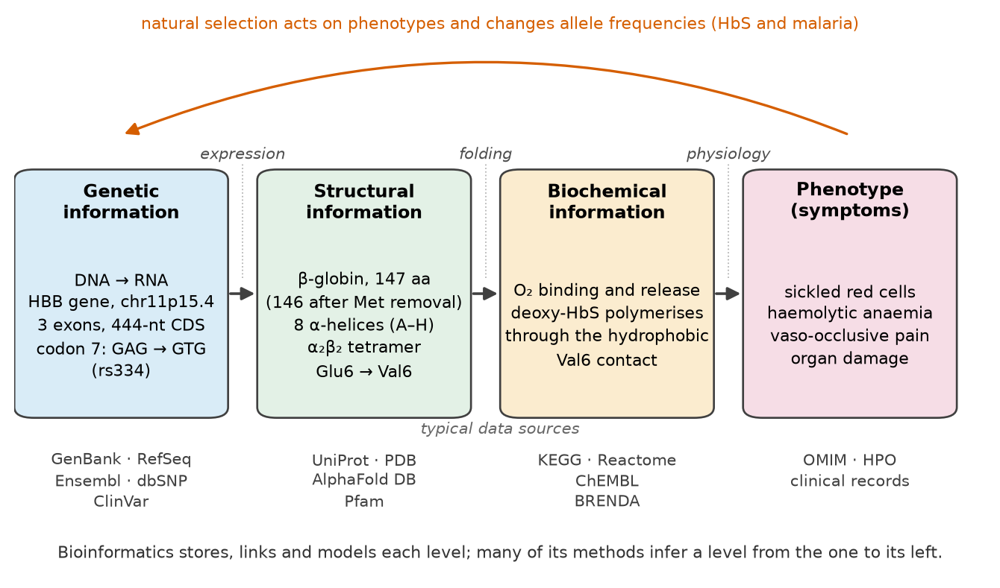
- Información genética: la secuencia de nucleótidos del genoma, sus genes, elementos reguladores y variantes. Datos: secuencias genómicas, catálogos de variantes. Preguntas típicas: ¿dónde están los genes? ¿Qué variante porta este paciente?
- Información estructural: la secuencia del RNA y de la proteína codificados, y su estructura tridimensional. Datos: secuencias de proteínas, estructuras determinadas experimentalmente o predichas. Preguntas típicas: ¿cómo es la proteína? ¿Dónde cae la variante en la estructura?
- Información bioquímica: qué hace la molécula, con quién interactúa y en qué vía participa. Datos: cinética enzimática, redes de interacción, vías, niveles de expresión. Preguntas típicas: ¿cambia la variante la unión, la estabilidad o la catálisis?
- Fenotipo (síntomas): las consecuencias observables a nivel de células, tejidos y el organismo completo, que en medicina son signos y síntomas. Datos: registros clínicos, ontologías de fenotipos, bases de datos de enfermedades. Pregunta típica: ¿explica este cambio molecular la enfermedad?
El paradigma es útil porque organiza toda la disciplina. La mayoría de los métodos bioinformáticos intentan inferir un nivel a partir del anterior: la predicción de genes infiere transcritos a partir del DNA genómico; la predicción de estructura infiere un plegamiento a partir de una secuencia de aminoácidos (Unidad 5); la anotación funcional infiere funciones bioquímicas a partir de la secuencia y la estructura (Unidades 3 y 4); y la interpretación clínica de variantes intenta conectar un cambio en el DNA con un síntoma. Cada flecha es incierta, y la incertidumbre se acumula a lo largo de la cadena. Por eso es mucho más fácil predecir la proteína codificada por un gen que predecir la enfermedad de un paciente a partir de su genoma.
Caso transversal: el paradigma central en la enfermedad de células falciformes
En 1949, Pauling y colaboradores mostraron mediante electroforesis que la hemoglobina de pacientes con anemia falciforme migra de forma distinta a la hemoglobina normal, y la llamaron "una enfermedad molecular"[7]; en 1957, Ingram identificó la causa como una única sustitución de aminoácido, glutamato por valina, en la cadena β[8]. Léelo a lo largo del paradigma: un cambio de un solo nucleótido (A→T) en el codón 7 de la secuencia codificante de HBB (GAG→GTG) reemplaza el glutamato de la posición 6 de la proteína madura por valina (genético → estructural); la valina hidrofóbica en la superficie de la hemoglobina desoxigenada crea una zona adhesiva que permite que los tetrámeros polimericen en fibras largas (estructural → bioquímico); las fibras deforman los glóbulos rojos hasta darles forma de hoz, lo que causa hemólisis, obstrucción de vasos pequeños, crisis de dolor y daño de órganos (bioquímico → fenotipo)[9]. La diferencia de numeración (codón 7 frente a residuo 6) se debe a que la metionina iniciadora se elimina de la proteína madura; es una fuente frecuente de confusión y se discutirá en la Unidad 3.
Error frecuente: el paradigma no es un mapa unidireccional ni uno a uno
Las flechas de la Figura 1 son simplificaciones. Un gen puede producir varios transcritos y proteínas (Sección 1.2), las proteínas se modifican químicamente después de la traducción, el fenotipo depende del ambiente y de muchos otros genes, y los RNA reguladores y las marcas epigenéticas actúan sobre el propio nivel genético. Incluso la enfermedad de células falciformes, causada por una sola variante, varía mucho en gravedad entre pacientes debido a otros factores genéticos (por ejemplo, la persistencia de hemoglobina fetal) y al ambiente y la atención recibida.
Breve historia de la bioinformática
La bioinformática no comenzó con el Proyecto Genoma Humano; surgió desde el momento en que los biólogos tuvieron más datos de secuencias de los que podían comparar a simple vista. La Figura 2 resume hitos seleccionados, y los párrafos siguientes explican por qué cada uno fue importante.
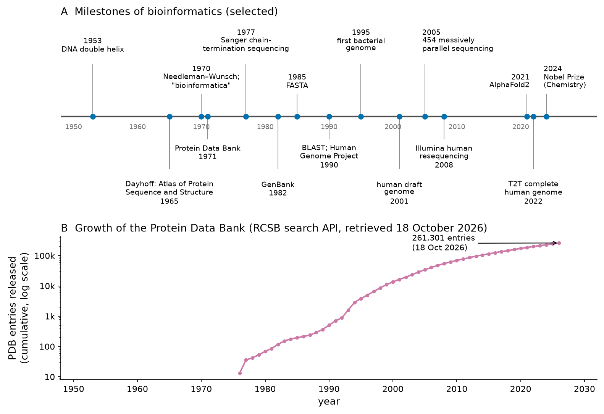
De la química de proteínas a la primera base de datos (décadas de 1950–1960). El modelo de doble hélice del DNA de Watson y Crick (1953) explicó cómo podía copiarse la información genética[10], y la determinación de la secuencia de aminoácidos de la insulina por Frederick Sanger a comienzos de la década de 1950 demostró que las proteínas tienen secuencias definidas. A comienzos de la década de 1960 se conocían decenas de secuencias de proteínas. Margaret Oakley Dayhoff, fisicoquímica, comenzó a recopilarlas de forma sistemática y publicó el Atlas of Protein Sequence and Structure en 1965: la primera base de datos de secuencias, distribuida como libro impreso y más tarde en cinta magnética[11]. Dayhoff también escribió los primeros programas computacionales para comparar secuencias y, en la década de 1970, derivó las matrices de sustitución PAM a partir de mutaciones observadas, que usarás en la Unidad 4A.
Algoritmos y el nombre (alrededor de 1970). En 1970, Needleman y Wunsch publicaron el primer algoritmo de programación dinámica para el alineamiento global de dos secuencias de proteínas[12], el antecesor de todos los programas de alineamiento que se usan hoy. En el mismo período, Hogeweg y Hesper acuñaron el término bioinformatica[1].
Estructuras y secuencias de ácidos nucleicos (1971–1982). El Protein Data Bank (PDB) se anunció en 1971 como un archivo de coordenadas atómicas de macromoléculas, con apenas unas pocas estructuras al comienzo[13][14]. En 1977, Sanger, Nicklen y Coulson describieron la secuenciación de DNA por terminación de cadena[15], que hizo mucho más fácil obtener secuencias de DNA que de proteínas y desplazó el campo hacia los ácidos nucleicos (Unidad 2). GenBank, la base de datos de nucleótidos de Estados Unidos, se creó en 1982[16]; más tarde se unió a las bases de datos europea (EMBL) y japonesa (DDBJ) en la International Nucleotide Sequence Database Collaboration[17].
Búsqueda rápida en bases de datos (1985–1990). A medida que las bases de datos crecían, la comparación exacta por programación dinámica de una consulta contra todas las entradas se volvió lenta. Lipman y Pearson introdujeron FASTP/FASTA, que primero encuentra palabras cortas idénticas y solo después realiza el alineamiento[18][19]; el formato de archivo FASTA que usarás a diario proviene de este programa. En 1990, Altschul y colaboradores publicaron BLAST, una heurística con una teoría estadística rigurosa de los puntajes que se convirtió en la herramienta más usada en biología[20].
Genomas (1990–2004). El Proyecto Genoma Humano comenzó en 1990. En 1995 se ensambló el primer genoma completo de un organismo de vida libre, la bacteria Haemophilus influenzae, a partir de fragmentos generados al azar mediante secuenciación shotgun del genoma completo[21]. En 2001 se publicaron dos borradores del genoma humano, uno del consorcio público y otro de Celera Genomics[22][23], y en 2004 la secuencia eucromática "terminada"[24]. Ensamblar y anotar estos genomas fue un problema tanto computacional como de laboratorio.
Secuenciación masivamente paralela (desde 2005). La pirosecuenciación en reactores de picolitros (454 Life Sciences, 2005)[25] y la secuenciación con terminadores reversibles (Solexa/Illumina, usada para resecuenciar un genoma humano en 2008)[26] redujeron los costos en órdenes de magnitud y convirtieron la biología en una ciencia intensiva en datos. Más tarde, las tecnologías de long reads permitieron el primer genoma humano verdaderamente completo, de telómero a telómero (T2T), en 2022[27], y una primera referencia de pangenoma humano en 2023[28]. La Unidad 2 trata estas tecnologías en detalle.
Inteligencia artificial y estructura (desde 2018). En 2020–2021, el sistema de deep learning AlphaFold2 predijo estructuras de proteínas con una exactitud a menudo comparable a la experimental[29], y AlphaFold 3 extendió la predicción a complejos con ácidos nucleicos, ligandos e iones[30]. En 2024, el Premio Nobel de Química se otorgó en una mitad a David Baker "por el diseño computacional de proteínas" y en la otra mitad, de forma conjunta, a Demis Hassabis y John Jumper "por la predicción de la estructura de proteínas"[W2]. Para una disciplina que comenzó con un atlas impreso de secuencias, fue un reconocimiento notable de que la computación puede resolver problemas centrales de la química y la biología.
Puente
Los algoritmos de esta historia son el tema de unidades posteriores: las tecnologías de secuenciación en la Unidad 2; GenBank, RefSeq y UniProt en la Unidad 3; Needleman–Wunsch, FASTA y BLAST en la Unidad 4A; y el PDB y AlphaFold en la Unidad 5. Un tratamiento más avanzado de los algoritmos de alineamiento está disponible en el material complementario Tema 1 — Alineamiento de secuencias.
Teoría de la información: incertidumbre, sorpresa y el bit
La segunda mitad del ítem 1.1 del programa es la teoría de la información, la teoría matemática de cuánta información lleva un mensaje. Fue fundada por Claude Shannon en 1948 para resolver un problema de ingeniería, la transmisión confiable de mensajes por líneas telefónicas ruidosas[31], y resultó ser el lenguaje natural para describir secuencias biológicas. Una molécula de DNA es literalmente un mensaje escrito con un alfabeto de cuatro letras; una proteína es un mensaje escrito con veinte letras. La teoría de la información nos permite hacer preguntas cuantitativas sobre esos mensajes. ¿Cuánta información lleva una posición de una secuencia? ¿Qué tan predecible es la base siguiente? ¿Cuánto se distingue un sitio de unión del DNA aleatorio? ¿Qué tan pequeño puede llegar a ser un archivo de genoma?
El punto de partida de Shannon es que la información es la reducción de la incertidumbre. Si ya sabes cuál será el siguiente símbolo de un mensaje, recibirlo no te dice nada. Si cualquiera de muchos símbolos pudiera llegar con igual probabilidad, recibir uno te dice mucho. La cantidad de información asociada a observar un evento de probabilidad p se denomina su sorpresa:
El lanzamiento de una moneda equilibrada tiene p = 1/2 para cada cara, así que observar el resultado entrega −log2(1/2) = 1 bit. Un bit es, por lo tanto, la información necesaria para decidir entre dos alternativas igualmente probables, la respuesta a una pregunta de sí/no bien planteada. Un evento seguro (p = 1) entrega 0 bits, y los eventos raros entregan muchos bits: un evento con p = 1/1024 entrega 10 bits. Se usan logaritmos porque la información de eventos independientes debe sumarse: dos lanzamientos de moneda tienen cuatro resultados igualmente probables, y −log2(1/4) = 2 bits = 1 + 1.
Entropía de Shannon
La entropía de una fuente de símbolos es la sorpresa promedio, la información esperada por símbolo:
La entropía mide la incertidumbre o, de forma equivalente, el número promedio de preguntas de sí/no necesarias para identificar un símbolo extraído de la fuente. Para una fuente con dos símbolos de probabilidades p y 1 − p, la entropía es máxima (1 bit) cuando p = 0.5 y cae a 0 cuando un símbolo es seguro (Figura 3A). La regla general es que la entropía es máxima cuando los K símbolos de un alfabeto son igualmente probables, y entonces vale log2K.
Esto da dos números que todo bioinformático debería conocer. Para el DNA, con cuatro bases, la entropía máxima es log24 = 2 bits por base. Puedes verlo con preguntas: "¿es una purina (A o G)?" y luego "¿es A?" identifican cualquier base con exactamente dos preguntas. Para las proteínas, con veinte aminoácidos estándar, el máximo es log220 = 4.32 bits por residuo. Ninguna secuencia de DNA puede tener más de 2 bits de entropía por base, ni ninguna proteína más de unos 4.32 bits por residuo, cualquiera sea su función o complejidad.
Nota formal: propiedades de la entropía
(1) H ≥ 0, con igualdad solo si un símbolo tiene probabilidad 1. (2) H ≤ log2K, con igualdad solo para la distribución uniforme; esto se deduce de la desigualdad de Jensen aplicada al logaritmo, que es cóncavo. (3) Para dos fuentes independientes, la entropía del par es la suma de las entropías, H(X, Y) = H(X) + H(Y); en general, H(X, Y) ≤ H(X) + H(Y). (4) Cambiar la base del logaritmo solo cambia la unidad: los logaritmos naturales dan "nats", y 1 nat = 1/ln 2 ≈ 1.443 bits. (5) El teorema de codificación de fuente de Shannon establece que ningún código sin pérdida puede usar, en promedio, menos de H bits por símbolo para una fuente independiente, razón por la cual la entropía es también un límite para la compresión. Cover y Thomas ofrecen un tratamiento riguroso[B2].
Entropía máxima y entropía de secuencias reales
¿Qué ocurre cuando medimos la entropía de secuencias biológicas reales? Usando frecuencias relativas como estimaciones de las probabilidades, calculamos la entropía de orden 0 (que ignora el orden de los símbolos) de varias secuencias obtenidas para esta unidad (Figura 3B):
- El genoma completo de Escherichia coli K-12 MG1655 (NCBI NC_000913.3, 4,641,652 pb) contiene 1,142,742 A, 1,180,091 C, 1,177,437 G y 1,141,382 T; su entropía es de 1.9998 bits por base, prácticamente el máximo de 2.
- Las primeras 10 Mb del cromosoma 11 humano (GRCh38; tras eliminar 60,000 bases desconocidas N) dan 1.9952 bits por base: la secuencia humana es rica en AT (contenido de GC 0.459), de modo que las cuatro bases son levemente desiguales.
- La secuencia codificante (CDS) de la β-globina humana (HBB, de NM_000518.5; 444 nt) da 1.9828 bits por base.
- Las proteínas están más lejos de su máximo. La β-globina humana (UniProt P68871, 147 residuos) tiene 3.95 bits por residuo, y la composición de aminoácidos de todas las proteínas humanas revisadas (UniProt Swiss-Prot) da 4.18 bits, por debajo de 4.32 porque los aminoácidos se usan de forma muy desigual: solo la leucina representa el 10.0% de los residuos.
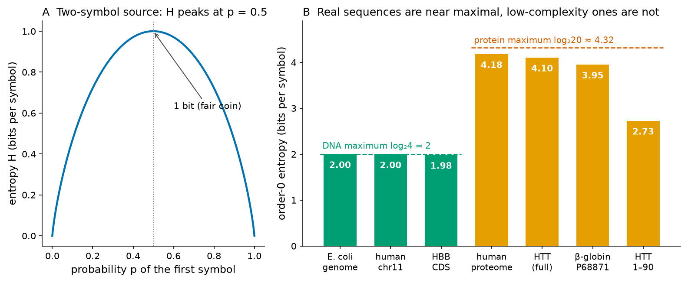
La lección general es que las secuencias biológicas parecen casi aleatorias cuando solo se cuentan letras. Esto no se debe a que no lleven información (es obvio que codifican proteínas y regulación), sino a que la entropía de orden 0 ignora el orden de las letras, y la información biológicamente importante reside precisamente en qué letra está en qué posición y en las dependencias entre posiciones. Capturaremos esto con la entropía condicional, la entropía relativa y la información mutua.
Regiones de baja complejidad
Algunos segmentos, sin embargo, tienen una entropía notablemente baja incluso al contar letras. Se denominan regiones de baja complejidad: series homopoliméricas (AAAAA…), repeticiones cortas en tándem como (CA)n o segmentos proteicos ricos en uno o dos aminoácidos. La huntingtina, la proteína mutada en la enfermedad de Huntington, es un ejemplo clásico. Su región N-terminal contiene un tramo de poliglutamina (poliQ) codificado por una repetición CAG; en la secuencia de referencia de UniProt el tramo ocupa los residuos 18–38 (21 Q consecutivas). Los primeros 90 residuos de la huntingtina tienen una entropía de solo 2.73 bits por residuo, frente a 4.10 bits de la proteína completa de 3,142 residuos. Un cálculo con ventana deslizante muestra que la entropía cae a cero dentro del tramo poliQ (Figura 4).
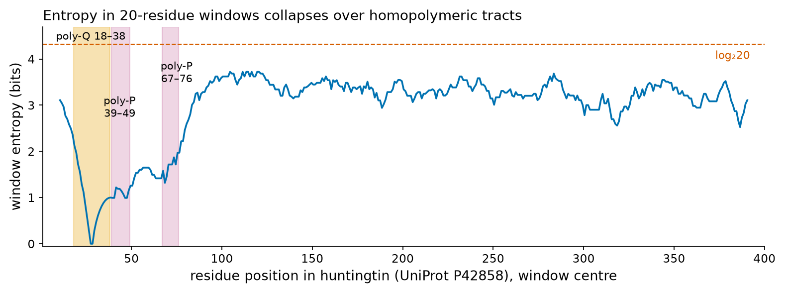
Las regiones de baja complejidad importan en la práctica. Producen coincidencias espurias en las búsquedas en bases de datos, porque dos proteínas no relacionadas con tramos poliQ parecen similares; por eso BLAST las enmascara por defecto con el algoritmo SEG, que se basa exactamente en este tipo de complejidad composicional local[32]. También importan clínicamente: la expansión de la repetición CAG por sobre un umbral causa la enfermedad de Huntington, y las expansiones de repeticiones son difíciles de medir con reads cortos de secuenciación (Unidad 2).
Pruébalo tú mismo: entropía de la secuencia codificante de HBB
Abre un notebook nuevo en Google Colab, ejecuta !pip install biopython en la primera celda y pega el código siguiente en la segunda. El código descarga el registro GenBank NM_000518.5 desde NCBI con el módulo Entrez de Biopython[33][W3], extrae la feature CDS y calcula su composición, su entropía y su contenido de GC. Biopython imprime una advertencia que te recuerda declarar una dirección de correo electrónico ante NCBI; quita el comentario de esa línea y escribe tu dirección institucional si vas a hacer muchas solicitudes.
from Bio import Entrez, SeqIO
from collections import Counter
import math
# Entrez.email = "your institutional e-mail" # recommended by NCBI; optional
handle = Entrez.efetch(db="nuccore", id="NM_000518.5", rettype="gb", retmode="text")
record = SeqIO.read(handle, "genbank")
SeqIO.write(record, "HBB_NM_000518.gb", "genbank") # keep a local copy
cds = [f for f in record.features if f.type == "CDS"][0]
seq = str(cds.extract(record.seq))
counts = Counter(seq)
n = len(seq)
H = -sum((c / n) * math.log2(c / n) for c in counts.values())
print(record.id, record.description)
print("CDS length:", n, "nt; composition:", dict(sorted(counts.items())))
print(f"Shannon entropy: {H:.4f} bits per base (maximum 2)")
print(f"GC content: {(counts['G'] + counts['C']) / n:.3f}")Ahora cambia NM_000518.5 por el número de acceso de otro transcrito que te interese, por ejemplo NM_000558.5 (α-globina, HBA1), y compara. ¿Cuál tiene mayor contenido de GC?
Entropía condicional y dependencia markoviana
La entropía de orden 0 trata cada posición como independiente de las demás. Las secuencias reales no son así: en el DNA humano, una C rara vez va seguida de una G (Sección 1.4); en el DNA codificante, la tercera base de un codón depende de las dos primeras; y en las proteínas, los residuos hidrofóbicos se alternan con los polares en las hélices superficiales. La herramienta que mide cuánto reduce el contexto la incertidumbre es la entropía condicional:
Si la secuencia se hubiera generado sin ninguna dependencia entre posiciones, conocer las bases precedentes no ayudaría, y la entropía condicional seguiría siendo igual a la entropía de orden 0 para todo k. Si la base siguiente estuviera completamente determinada por las precedentes, la entropía condicional sería 0. Las secuencias reales se sitúan en un punto intermedio. El valor de k es el orden del contexto, y un modelo en el que la probabilidad de una base depende solo de las k bases precedentes es una cadena de Markov de orden k, que se introduce formalmente en la Sección 1.4.
La Figura 5 muestra entropías condicionales calculadas para k = 0 a 8. Para el genoma completo de E. coli, el valor baja lentamente de 1.9998 a 1.8888 bits; para 1 Mb del cromosoma 11 humano baja de 1.9924 a 1.8733 en k = 5 y luego más rápido, reflejo de secuencias repetidas como los elementos transponibles; para el genoma de E. coli barajado, en el que las bases son las mismas pero su orden es aleatorio, se mantiene en 1.9997 hasta k = 4. La diferencia entre las curvas real y barajada es una medición directa de la información contenida en el orden de las bases.
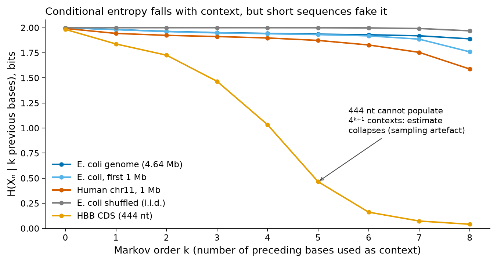
Error frecuente: las estimaciones de entropía necesitan suficientes datos
Estimar una probabilidad a partir de conteos requiere que cada evento posible se observe muchas veces. Con k = 8 hay 49 = 262,144 9-mers posibles; la CDS de HBB, de 444 nt, contiene como máximo 436 de ellos, cada uno visto una o dos veces, de modo que la entropía condicional estimada cae a 0.041 bits, un valor sin sentido. Incluso 1 Mb de genoma empieza a quedar submuestreado en k = 8 (compara las dos curvas de E. coli en la Figura 5). La regla práctica es que el número de observaciones debe ser mucho mayor que el número de parámetros: aquí, la longitud de la secuencia debe ser mucho mayor que 4k+1. El mismo problema reaparece cada vez que entrenas un modelo con pocos datos.
Entropía relativa: comparar una distribución con un fondo
A menudo no nos interesa la incertidumbre absoluta de una distribución, sino cuán distinta es de una distribución de referencia o de fondo. La medida es la entropía relativa, también llamada divergencia de Kullback–Leibler (KL):
La entropía relativa tiene un significado operacional: es el número promedio de bits adicionales por símbolo que necesitarías si codificaras datos de P con un código optimizado para Q, y es la razón de log-verosimilitud promedio a favor de P cuando los datos provienen realmente de P. Con la composición de todas las proteínas humanas revisadas como fondo, la β-globina tiene D = 0.23 bits por residuo (su composición es bastante típica, aunque la histidina y la valina son alrededor del doble de frecuentes que en la proteína humana promedio), mientras que los 90 residuos N-terminales de la huntingtina, ricos en poliQ, tienen D = 1.38 bits por residuo, una composición muy atípica.
La entropía relativa es una de las magnitudes más usadas en el resto del curso. Tres usos aparecerán una y otra vez:
- Puntajes log-odds. Cada término log2(pi/qi) es un puntaje log-odds: positivo si el símbolo i es más frecuente en el modelo que en el fondo. Todas las matrices de sustitución usadas en el alineamiento de secuencias (PAM, BLOSUM) son tablas de este tipo de puntajes log-odds, y la entropía relativa de una matriz mide la información promedio por par alineado; Altschul mostró que determina qué tan largo debe ser un alineamiento para poder distinguirlo del azar[34][35][36]. Este es el tema de la Unidad 4A.
- Logos de secuencia y perfiles. La altura de una columna en un logo de secuencia es su contenido de información, que es la entropía relativa de la distribución de la columna respecto del fondo (Sección 1.1.10, más abajo).
- Clasificadores. El clasificador de Markov de islas CpG de la Sección 1.4 suma puntajes log-odds de probabilidades de transición.
Información mutua: dependencia entre dos posiciones
La tercera medida pregunta cuánto te dice el conocer una variable acerca de otra. La información mutua entre dos variables aleatorias X e Y es
Aplicada a una secuencia, X puede ser la base en la posición i e Y la base en la posición i + d; I(d) mide entonces con qué intensidad se correlacionan posiciones separadas por d. El DNA codificante de proteínas tiene una firma característica: como el código genético se lee en tripletes y las posiciones del codón tienen composiciones distintas, la información mutua es mayor a distancias que son múltiplos de 3. Esto se reconoció tempranamente como una forma de detectar regiones codificantes[37] y fue analizado sistemáticamente con información mutua por Grosse y colaboradores[38]. Nuestro cálculo sobre las 4,318 secuencias codificantes de proteínas anotadas de E. coli reproduce el patrón de periodo 3: la información mutua en d = 6 (0.0013 bits) y d = 9 (0.0016 bits) es mayor que en las distancias vecinas d = 5 (0.0012) y d = 7 (0.0005) (Figura 6).
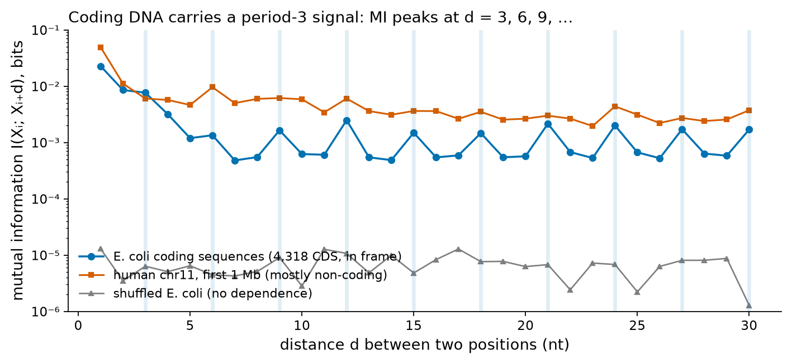
La información mutua tiene una segunda aplicación muy importante que verás en la Unidad 4B: la detección de covariación en alineamientos de RNA. En un RNA estructural, como un RNA de transferencia, dos posiciones que forman un par de bases en la estructura secundaria deben mantenerse complementarias; si una mutación cambia una de ellas (G→A), tiende a aparecer una mutación compensatoria en la pareja (C→U). Por lo tanto, a lo largo de muchas secuencias homólogas, las dos columnas muestran una información mutua alta aun cuando cada columna, considerada por separado, sea variable. El análisis de covariación se usó para inferir las estructuras secundarias de los RNA ribosomales y de transferencia antes de que se determinaran experimentalmente, y es la base de los modelos de covarianza para familias de RNA[39]. La misma idea, extendida a alineamientos de proteínas, ayudó a predecir contactos entre residuos y finalmente contribuyó a la predicción moderna de estructuras (Unidad 5).
Nota formal: las identidades que vinculan las cuatro medidas
Para dos variables, H(X,Y) = H(X) + H(Y | X) (regla de la cadena). Combinándola con la definición de información mutua se obtiene I(X;Y) = H(Y) − H(Y | X): la información mutua es la reducción de la incertidumbre sobre Y que se obtiene al conocer X. La información mutua es también una entropía relativa, I(X;Y) = D(p(x,y) ‖ p(x)p(y)), de modo que nunca es negativa. En la Figura 5, la caída de la entropía condicional de k = 0 a k = 1 es exactamente la información mutua entre bases adyacentes.
Contenido de información de los sitios de unión
Las proteínas que regulan genes, el spliceosoma que elimina los intrones y el ribosoma que inicia la traducción reconocen secuencias cortas específicas en el DNA o el RNA. ¿Cuánta información contiene un sitio de reconocimiento de este tipo? Thomas Schneider y colaboradores respondieron esta pregunta en 1986 con teoría de la información[40]. Toma un conjunto de sitios alineados (por ejemplo, muchas copias de un sitio de unión, cada una escrita en la misma orientación). En cada posición l, la incertidumbre antes de ver ningún sitio es la entropía de fondo (2 bits para bases equiprobables), y la incertidumbre que queda entre los sitios observados es la entropía de la columna H(l). El contenido de información de la posición es la diferencia:
La idea clave de Schneider fue la comparación con una segunda magnitud. Si un genoma de G posiciones contiene γ sitios funcionales, localizar un sitio requiere Rfrequency = log2(G/γ) bits. En varios sistemas se encontró que la información de los sitios (Rsequence) era cercana a la información necesaria para encontrarlos en el genoma (Rfrequency): los sitios contienen aproximadamente tanta información como se necesita para ser reconocidos, y no más[40]. El logo de secuencia, introducido por Schneider y Stephens en 1990, muestra esta información gráficamente: en cada posición, una pila de letras cuya altura total es Rsequence(l) y en la que la altura de cada letra es proporcional a su frecuencia[41].
Aplicamos este método a sitios de splicing humanos reales. De Ensembl release 116[W4] tomamos los transcritos canónicos de los 235 genes codificantes de proteínas anotados en las primeras 10 Mb del cromosoma 11 y extrajimos todos los límites exón–intrón (sitios de splicing 5′ o donadores: últimas 3 bases del exón y primeras 6 bases del intrón) y todos los límites intrón–exón (sitios 3′ o aceptores: últimas 20 bases del intrón y primeras 3 bases del exón), siempre en la orientación del transcrito. Así obtuvimos 1,484 sitios donadores y 1,484 sitios aceptores (Figura 7). De los sitios donadores, el 98.6% comienza el intrón con GT y el 1.3% con GC; el 99.9% de los intrones aceptores termina en AG. Estas son las conocidas reglas GT–AG del splicing, descritas a partir de estadísticas de secuencia por Shapiro y Senapathy[42].
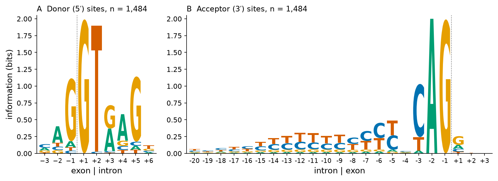
El logo de los sitios donadores ilustra cómo leer la información. Las posiciones +1 y +2 (la G y la T intrónicas) llevan 1.99 y 1.90 bits, casi el máximo, porque son casi invariantes. La posición +5 lleva 1.14 bits (mayoritariamente G), la posición −1 lleva 1.12 bits (mayoritariamente G) y las posiciones alejadas del límite llevan poca información. El total, Rsequence = 8.1 bits, significa que un sitio donador es aproximadamente tan específico como una palabra de cuatro bases completamente conservada (4 × 2 = 8 bits). Eso no basta para identificar sin ambigüedad los sitios donadores en un genoma de tres mil millones de bases, lo cual es una de las razones por las que la predicción de genes es difícil y por las que el splicing depende también de otras señales (puntos de ramificación, potenciadores, silenciadores).
Conexión clínica: variantes en sitios de splicing
Como las posiciones +1 y +2 del sitio donador llevan casi 2 bits cada una, casi cualquier cambio en ellas suprime el splicing normal. Por eso, las guías de interpretación clínica de variantes tratan las variantes en las posiciones ±1 y ±2 de los intrones como presuntamente de pérdida de función. En HBB, el exón 1 termina con el nucleótido codificante c.92 (lo calculamos a partir de las coordenadas de exones de Ensembl: el exón 1 abarca 142 nt, de los cuales los primeros 50 son 5′ no traducidos), por lo que la G invariante del intrón 1 es c.92+1; las variantes en esta posición (históricamente llamadas IVS-I-1) son una causa clásica de β0-talasemia, en la que no se produce β-globina. El contenido de información de una posición es una primera estimación cuantitativa de cuán dañina puede ser una variante en ella; la Unidad 3 muestra cómo encontrar este tipo de variantes en ClinVar.
Error frecuente: las muestras pequeñas inflan la información
Con pocos sitios, las frecuencias son ruidosas y las columnas parecen más conservadas de lo que son, por lo que Rsequence se sobreestima. Schneider derivó una corrección para muestras pequeñas aproximadamente igual a (s − 1)/(2 ln 2 · n) bits por posición, donde s = 4 es el tamaño del alfabeto y n el número de sitios[40]. Para nuestros 1,484 sitios donadores la corrección es de 0.0015 bits por posición, despreciable; para un motivo construido con 10 sitios sería de unos 0.22 bits por posición, lo que no es en absoluto despreciable.
Volumen de datos y compresión como medida de redundancia
La teoría de la información también responde una pregunta práctica: ¿cuánto almacenamiento necesita un genoma? Ensembl informa una longitud de "golden path" de 3,099,750,718 bases para el ensamblaje de referencia humano GRCh38.p14[W4]. Almacenada como texto, con un carácter por base, equivale a unos 3.1 gigabytes (GB). Como solo hay cuatro bases, cada una puede codificarse con 2 bits, de modo que la misma secuencia haploide cabe en 775 megabytes (MB), y un genoma diploide (dos copias, una de cada progenitor) en unos 1.55 GB. Los datos crudos de secuenciación son mucho mayores: una corrida clínica típica de secuenciación de genoma completo produce unos 30 reads que cubren cada posición (cobertura 30×), y cada base de un archivo FASTQ se almacena junto con un carácter de calidad. Como estimación de orden de magnitud, 30 × 3.1 × 109 bases × 2 bytes ≈ 186 GB antes de comprimir (Figura 8B). El volumen de datos es la razón por la que la bioinformática depende de formatos eficientes, de la compresión y de clústeres de cómputo (Sección 1.3).
La compresión es también una herramienta científica. Un compresor sin pérdida reemplaza los patrones repetidos o predecibles por códigos más cortos; cuanto más redundante es una secuencia, más se reduce. El teorema de Shannon garantiza que ningún compresor puede usar, en promedio, menos bits por símbolo que la verdadera tasa de entropía de la fuente, de modo que el tamaño comprimido es una cota superior del contenido de información. Comprimimos 1 Mb de varias secuencias con tres compresores de uso general (Figura 8A). El DNA de E. coli no pudo comprimirse por debajo de 2 bits por base ni siquiera con el mejor de ellos (xz: 2.08 bits por base): los genomas bacterianos son densos, con poca repetición. El DNA humano se comprimió a 1.84 bits por base con xz, porque contiene muchos elementos repetidos. Una secuencia barajada no se comprimió en absoluto, y una repetición (CA)n se comprimió a 0.008 bits por base con gzip, porque es perfectamente predecible. Los compresores especializados en DNA, que modelan complementos inversos y repeticiones aproximadas, logran resultados considerablemente mejores que las herramientas de uso general[43].
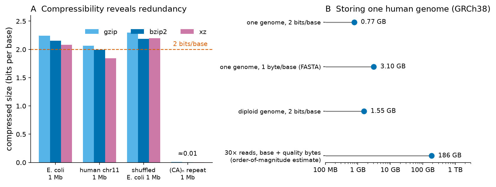
Pruébalo tú mismo: la compresión como estimación de la entropía
Descarga el genoma de E. coli K-12 en formato FASTA desde NCBI (busca NC_000913.3 en la base de datos Nucleotide y luego Send to → File → FASTA) y guárdalo como ecoli.fasta en tu sesión de Colab (súbelo con el explorador de archivos de la izquierda). Luego ejecuta:
import gzip, random
from Bio import SeqIO
genome = str(SeqIO.read("ecoli.fasta", "fasta").seq) # E. coli K-12 MG1655, NC_000913.3
seg = genome[:1_000_000]
random.seed(1)
shuffled = "".join(random.sample(seg, len(seg)))
repeat = "CA" * 500_000
for name, s in [("E. coli first 1 Mb", seg), ("same bases shuffled", shuffled), ("(CA)n repeat", repeat)]:
bits = len(gzip.compress(s.encode(), 9)) * 8
print(f"{name:22s} gzip: {bits / len(s):.3f} bits per base")¿Por qué gzip produce un poco más de 2 bits por base para la secuencia bacteriana? (Pista: gzip no sabe que el alfabeto tiene solo cuatro letras, y debe almacenar sus tablas de codificación).
Ideas clave
- La información es reducción de la incertidumbre; un evento de probabilidad p lleva −log2p bits. La entropía H = −Σ p log2 p es la información promedio por símbolo.
- La entropía máxima es de 2 bits por base para el DNA y de log220 ≈ 4.32 bits por residuo para las proteínas. En su composición, las secuencias reales están cerca de estos máximos; las regiones de baja complejidad, no.
- La entropía condicional mide cuánto reducen la incertidumbre las bases precedentes (dependencia markoviana); su estimación requiere secuencias mucho más largas que 4k+1.
- La entropía relativa (divergencia KL) compara una distribución con un fondo; es la base de los puntajes log-odds, las matrices de sustitución, los logos de secuencia y los clasificadores.
- La información mutua mide la dependencia entre dos posiciones; revela la estructura de periodo 3 del DNA codificante y la covariación de pares de bases en el RNA.
- El contenido de información de sitios alineados (Rsequence) se lee en los logos de secuencia; los sitios de splicing donadores humanos llevan unos 8 bits.
- Un genoma humano haploide tiene unas 3.1 × 109 bases (≈ 0.77 GB a 2 bits por base); las tasas de compresión miden la redundancia.
Sección 1.2Genómica y proteómica
Programa oficial: «Genómica y proteómica.»
El sufijo -oma denota el conjunto completo de algo en un organismo o una célula, y el sufijo -ómica, la disciplina que lo estudia con métodos de alto rendimiento. La genómica estudia genomas; la proteómica estudia proteomas. Ambas son los pilares del campo, y todas las demás ómicas (transcriptómica, epigenómica, metabolómica, microbiómica…) se organizan en torno a ellas. Esta sección responde dos preguntas de las diapositivas del profesor que todo estudiante debería poder contestar con cifras actuales: ¿cuántos genes y cuántas proteínas hay en el cuerpo humano?
Genomas y genómica
Un genoma es el ADN hereditario completo de un organismo (o el ARN, en algunos virus): todos los cromosomas, incluidos los genes, los elementos reguladores, las secuencias repetidas y el ADN de función desconocida, además del ADN de organelos como las mitocondrias. La genómica estudia los genomas como un todo. Suele dividirse en genómica estructural (secuenciar, ensamblar y mapear genomas; en otro sentido, el término designa también la determinación a gran escala de estructuras de proteínas), genómica funcional (qué hacen los genes, cuándo y dónde se expresan, cómo se regulan) y genómica comparativa (qué se puede aprender comparando genomas de distintas especies o individuos).
El tamaño de los genomas varía enormemente. El cromosoma de E. coli K-12 analizado en la Sección 1.1 tiene 4,641,652 pb y 4,318 secuencias codificantes de proteína anotadas en su registro NCBI RefSeq, que suman 4,026,887 pb, el equivalente al 87% del cromosoma (aquí se ignora una pequeña superposición entre genes). El genoma humano de referencia (GRCh38.p14, el ensamblaje usado por la versión 116 de Ensembl) tiene una longitud de golden path de 3,099,750,718 pb, distribuidas en 22 autosomas, los cromosomas sexuales X e Y y el ADN mitocondrial[W4]; el primer ensamblaje completo de telómero a telómero, T2T-CHM13, cerró los gaps que quedaban en GRCh38 y añadió la secuencia de los centrómeros y de los brazos cortos de los cromosomas acrocéntricos[27]. En los humanos solo alrededor del 1–2% del genoma codifica proteínas[22]; el resto incluye intrones, regiones reguladoras, genes de ARN no codificante y una gran fracción de secuencias repetidas derivadas de transposones.
Otros dos conceptos son importantes para la medicina. Primero, casi todas las células nucleadas del cuerpo contienen el mismo genoma; lo que diferencia a una neurona de un hepatocito es qué genes se expresan. Entre las excepciones están los glóbulos rojos maduros (que no tienen núcleo y, por lo tanto, tampoco genoma, algo relevante para el caso conductor), los gametos (haploides), los linfocitos (que reordenan sus genes de inmunoglobulinas o del receptor de células T) y las células tumorales (que acumulan mutaciones somáticas). Segundo, no hay dos humanos con el mismo genoma, salvo los gemelos idénticos. Un único genoma de referencia no puede representar esta diversidad, y por eso el campo avanza hacia referencias de pangenoma construidas a partir de muchos individuos[28].
Error frecuente: «el» genoma humano
GRCh38 es una referencia: un mosaico ensamblado principalmente a partir de unos pocos donantes anónimos, que se usa como sistema de coordenadas común. No es un genoma «normal» ni «ideal», y muchas de sus bases corresponden al alelo minoritario en algunas poblaciones. Cuando un informe dice que un paciente «tiene una mutación», normalmente significa que su secuencia difiere de la referencia en esa posición, lo que puede ser patogénico o no.
¿Cuántos genes hay en el cuerpo humano?
Antes de que se secuenciara el genoma humano, las estimaciones del número de genes humanos variaban ampliamente, y los libros de texto solían citar unos 100,000. La secuencia borrador de 2001 redujo la estimación a 30,000–40,000 genes codificantes de proteínas[22], la secuencia terminada de 2004 la bajó a 20,000–25,000[24], y la curación continua la ha reducido aún más: una revisión de 2010 documentó la historia de estas estimaciones[44], y en 2014 Ezkurdia y colaboradores argumentaron, a partir de evidencia proteómica y de la conservación entre especies, que podría haber apenas unos 19,000 genes codificantes de proteínas[45]. La anotación de referencia actual la producen conjuntamente el proyecto GENCODE y Ensembl, combinando curación manual, evidencia de transcritos (incluida la secuenciación de ARN con long reads) y predicción computacional[46][47].
Para esta unidad obtuvimos la anotación actual completa desde el servicio REST de Ensembl (versión 116, conjunto de genes GENCODE 50, actualizado por última vez en noviembre de 2025), recorriendo todos los cromosomas de GRCh38 en ventanas de 5 Mb[W4]. El ensamblaje primario contiene 78,733 genes anotados, de los cuales 20,107 son codificantes de proteínas, 34,866 son genes de ARN largo no codificante, 15,199 son pseudogenes y 7,111 codifican ARN pequeños no codificantes (microARN, ARN pequeños nucleares y nucleolares, y otros) (Figura 9A). La respuesta a la pregunta de la diapositiva es, por lo tanto: unos 20,000 genes codificantes de proteínas, y aproximadamente cuatro veces más genes si se incluyen los genes de ARN no codificante y los pseudogenes. El número de genes codificantes de proteínas en los humanos es similar al de otros vertebrados y no mucho mayor que el de un gusano nematodo, lo que muestra que la complejidad de un organismo no es una función simple del número de genes.
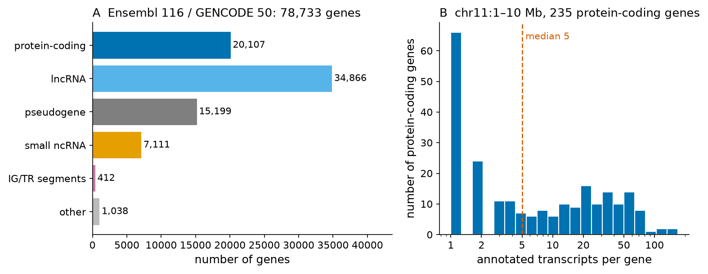
Error frecuente: los recuentos de genes son anotaciones, no mediciones
Un recuento de genes depende de la definición de «gen» y de la evidencia exigida. Los marcos de lectura abiertos pequeños, los genes expresados solo en un tejido y los genes de regiones resueltas recientemente se agregan o eliminan continuamente; los pseudogenes pueden reclasificarse cuando aparece evidencia de traducción. Por eso siempre debes citar un recuento de genes junto con su fuente y versión (por ejemplo, «Ensembl 116 / GENCODE 50»), como se hace aquí, y por eso distintas bases de datos (Ensembl/GENCODE, RefSeq, CHESS, UniProt) entregan cifras algo diferentes.
¿Cuántas proteínas? Isoformas, modificaciones postraduccionales y proteoformas
Si hay unos 20,000 genes codificantes de proteínas, ¿hay unas 20,000 proteínas? Hay al menos tres razones por las que el número real de moléculas proteicas distintas es mucho mayor.
Transcritos alternativos e isoformas. La mayoría de los genes humanos producen varios ARNm mediante sitios alternativos de inicio de la transcripción, splicing alternativo y poliadenilación alternativa. En la región del cromosoma 11 que analizamos, los genes codificantes de proteínas tienen una mediana de 5 y una media de 17.8 transcritos anotados, con una larga cola de genes que tienen decenas (Figura 9B). No todos los transcritos codifican una proteína (algunos son intrones retenidos o se degradan por decaimiento mediado por mutaciones sin sentido), pero muchos codifican isoformas proteicas distintas. Incluso HBB, un gen pequeño con tres exones, tiene 19 transcritos anotados en Ensembl 116, aunque solo uno de ellos (ENST00000335295, HBB-201) está designado como canónico y codifica la conocida β-globina de 147 residuos.
Modificaciones postraduccionales (PTM). Después de la traducción, las proteínas se modifican químicamente: a menudo se elimina la metionina iniciadora (como en la β-globina), y los residuos pueden ser fosforilados, acetilados, glicosilados, metilados, ubiquitinados o escindidos. Una proteína con diez sitios posibles de fosforilación puede, en principio, existir en 210 = 1,024 estados de fosforilación.
Proteoformas. Para nombrar esta diversidad, Smith y Kelleher propusieron el término proteoforma: una forma molecular específica de un producto proteico, definida por su secuencia exacta de aminoácidos y su combinación exacta de modificaciones[48]. Un gen da origen a una familia de proteoformas mediante la variación genética, el splicing alternativo y las PTM. No se sabe cuántas proteoformas humanas existen; Aebersold y colaboradores revisaron la evidencia y concluyeron que el número es muy grande, posiblemente del orden de millones, de las cuales solo una pequeña fracción se ha caracterizado experimentalmente[49].
Las bases de datos de proteínas reflejan estos niveles. En la versión 2026_03 de UniProt[W5], la sección humana revisada (Swiss-Prot) contiene 20,431 entradas, aproximadamente una por gen codificante de proteínas, y 42,562 secuencias si se incluyen las isoformas curadas; la sección no revisada (TrEMBL) añade 190,275 entradas humanas anotadas computacionalmente[50]. Considerando todos los organismos, UniProtKB contiene 150,006,383 entradas, de las cuales solo 575,748 están revisadas manualmente. El Proyecto del Proteoma Humano de HUPO publica informes anuales sobre cuántas de las proteínas humanas predichas se han confirmado a nivel de proteína, principalmente mediante espectrometría de masas[51].
Ideas clave: genes frente a proteínas
- Anotación actual (Ensembl 116 / GENCODE 50): unos 20.1 mil genes codificantes de proteínas entre unos 79 mil genes anotados. La antigua cifra de 100,000 genes es histórica.
- Un gen → varios transcritos → varias isoformas proteicas → muchas proteoformas (con PTM). «¿Cuántas proteínas?» tiene respuestas distintas en cada nivel: ≈ 20,000 canónicas, ≈ 42,000 isoformas curadas, posiblemente millones de proteoformas.
- Cita siempre los recuentos con la base de datos y la versión.
Transcriptómica y proteómica en la práctica
Entre el genoma y el proteoma se encuentra el transcriptoma, el conjunto de moléculas de ARN presentes en una célula en un momento dado. A diferencia del genoma, el transcriptoma cambia según el tipo celular, la etapa del desarrollo, la enfermedad y el ambiente; medirlo nos dice qué genes están activos. Los microarreglos fueron el primer método a escala genómica y fueron reemplazados en la década de 2010 por la secuenciación de ARN (RNA-seq), en la que el ARN se convierte en ADN complementario, se fragmenta y se secuencia (Unidad 2). El RNA-seq de célula única mide la expresión en miles de células individuales, y la secuenciación de long reads lee transcritos de longitud completa, lo que está cambiando la anotación de isoformas descrita más arriba.
La proteómica mide las proteínas directamente. Su tecnología principal es la espectrometría de masas (MS). En la estrategia habitual bottom-up, las proteínas se digieren con tripsina en péptidos, los péptidos se separan por cromatografía líquida y se miden por MS en tándem, y los espectros se comparan computacionalmente con los péptidos predichos a partir de una base de datos de proteínas. La identificación es, por lo tanto, en sí misma un problema bioinformático: los espectros deben puntuarse frente a los candidatos y la tasa de falsos descubrimientos debe controlarse estadísticamente. La proteómica top-down mide proteínas intactas y es la principal forma de observar proteoformas directamente. Los métodos basados en anticuerpos y, más recientemente, los reactivos de afinidad y los arreglos de proteínas complementan la MS. La proteómica es más difícil que la genómica porque las proteínas no se pueden amplificar como el ADN, sus abundancias abarcan muchos órdenes de magnitud y su química es diversa.
Las principales ómicas de la bioinformática
La Figura 10 resume las principales capas ómicas con sus objetos de estudio y tecnologías. Cada capa añade información que no puede predecirse a partir de la capa superior. El epigenoma (metilación del ADN y modificaciones de la cromatina) regula qué genes son accesibles; el transcriptoma mide la expresión; el proteoma mide las moléculas que realizan la mayor parte del trabajo; el metaboloma mide las moléculas pequeñas (azúcares, lípidos, aminoácidos, fármacos) que son sustratos y productos del metabolismo, lo más cercano al fenotipo. Otras dos ómicas, destacadas en las diapositivas del profesor, atraviesan estas capas: la microbiómica y la farmacogenómica.
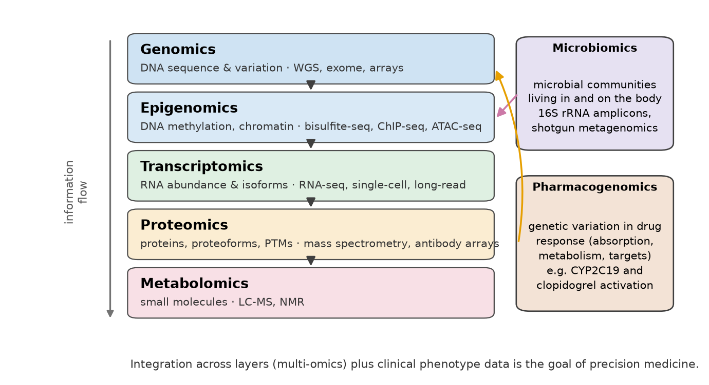
| Ómica | Objeto | Datos típicos | Ejemplos de recursos |
|---|---|---|---|
| Genómica | secuencia del genoma y variación | ensamblajes, llamados de variantes (VCF) | GenBank/ENA/DDBJ, RefSeq, Ensembl, dbSNP, gnomAD, ClinVar |
| Epigenómica | metilación del ADN, marcas de histonas, accesibilidad de la cromatina | niveles de metilación, picos | ENCODE, Roadmap Epigenomics, GEO |
| Transcriptómica | moléculas de ARN | recuentos de reads por gen o transcrito | GEO, ArrayExpress, GTEx, Human Cell Atlas |
| Proteómica | proteínas y proteoformas | espectros de masas, identificaciones de péptidos | UniProt, PRIDE, Human Protein Atlas, PDB |
| Metabolómica | moléculas pequeñas | espectros, concentraciones | HMDB, MetaboLights |
| Microbiómica | comunidades microbianas | amplicones de ARNr 16S, metagenomas | datos del Human Microbiome Project, MGnify |
| Farmacogenómica | relaciones genotipo–respuesta a fármacos | genotipos, guías de dosificación | PharmGKB, guías CPIC |
Microbiómica
El cuerpo humano es un ecosistema. La microbiota es la comunidad de bacterias, arqueas, hongos y virus que viven sobre nosotros y dentro de nosotros, y el microbioma es, en sentido estricto, el conjunto de sus genomas (ambas palabras suelen usarse indistintamente). Sender, Fuchs y Milo revisaron la afirmación popular de que las células bacterianas superan a las humanas en una proporción de diez a uno: para un hombre adulto de referencia estimaron unas 3.8 × 1013 bacterias y 3.0 × 1013 células humanas, una razón cercana a 1:1, con la mayoría de las bacterias en el colon[52]. Los genes bacterianos, sin embargo, superan a los genes humanos en órdenes de magnitud, porque cada especie aporta su propio conjunto de genes.
La microbiómica se hizo posible cuando la secuenciación permitió estudiar comunidades sin cultivar a sus miembros, la mayoría de los cuales no puede crecer en el laboratorio. Predominan dos enfoques. La secuenciación de amplicones del gen del ARN ribosomal 16S, que contiene regiones conservadas para la unión de cebadores y regiones variables que distinguen taxones, entrega un censo de qué bacterias están presentes y en qué proporciones. La metagenómica shotgun secuencia todo el ADN de una muestra, lo que permite la identificación con mayor resolución y la reconstrucción de los genes funcionales presentes. El Human Microbiome Project, iniciado en 2007, caracterizó la microbiota de adultos sanos en múltiples sitios del cuerpo y mostró que las comunidades difieren fuertemente entre sitios y entre individuos, mientras que sus funciones metabólicas son más estables[53][54].
Conexión clínica: el microbioma en medicina
La composición del microbioma se asocia con la diarrea asociada a antibióticos, la enfermedad inflamatoria intestinal, las enfermedades metabólicas y la respuesta a algunas inmunoterapias contra el cáncer, y las bacterias intestinales pueden metabolizar fármacos directamente. El trasplante de microbiota fecal es un tratamiento aceptado para la infección recurrente por Clostridioides difficile. Para la bioinformática, los estudios del microbioma plantean problemas específicos: asignar reads cortos a taxones, manejar datos composicionales (proporciones que suman uno) y distinguir la contaminación de la señal en muestras de baja biomasa.
Farmacogenómica
La farmacogenómica estudia cómo la variación genética entre individuos afecta la respuesta a los fármacos: cuánto fármaco llega a su diana (farmacocinética) y qué efecto tiene allí (farmacodinamia)[55]. El término farmacogenética se usa para genes individuales y farmacogenómica para enfoques a escala genómica, pero a menudo se usan como sinónimos. Los genes involucrados codifican enzimas metabolizadoras de fármacos (en especial la familia del citocromo P450), transportadores de fármacos, dianas farmacológicas y moléculas inmunitarias (algunos alelos HLA predisponen a reacciones graves de hipersensibilidad).
El antiagregante plaquetario clopidogrel, ampliamente prescrito después de un infarto de miocardio y de la implantación de stents coronarios, es el ejemplo canónico. El clopidogrel es un profármaco: debe convertirse en su metabolito activo en el hígado, principalmente por la enzima CYP2C19. Los portadores de alelos de pérdida de función de CYP2C19 (como *2) forman menos metabolito activo. Mega y colaboradores mostraron en 2009 que, entre los pacientes tratados con clopidogrel, los portadores de alelos de función reducida tenían niveles más bajos de metabolito activo, menor inhibición plaquetaria y una mayor tasa de eventos cardiovasculares que los no portadores[56]. La guía del Clinical Pharmacogenetics Implementation Consortium (CPIC), actualizada en 2022, recomienda que, en pacientes con síndromes coronarios agudos o sometidos a intervención coronaria percutánea, los metabolizadores lentos e intermedios de CYP2C19 reciban, si no hay contraindicación, un antiagregante alternativo (prasugrel o ticagrelor) en lugar de clopidogrel a dosis estándar[57].
Conexión clínica: de un genotipo a una prescripción
La implementación farmacogenómica recorre en sentido inverso el paradigma central de la Figura 1. Un laboratorio genotipifica a un paciente (información genética); el genotipo se traduce en «diplotipos» de alelos estrella y en un fenotipo metabolizador predicho (por ejemplo, CYP2C19 *1/*2 → metabolizador intermedio); una guía asocia el fenotipo a una recomendación de prescripción; y la recomendación se entrega en el punto de atención, idealmente mediante una alerta en la ficha clínica electrónica. Cada paso es una tarea bioinformática: llamado de variantes, asignación de alelos, traducción a fenotipo e integración con los sistemas clínicos. Las frecuencias alélicas difieren entre poblaciones, de modo que las guías y pruebas validadas en una población pueden no funcionar igual de bien en otras, incluidas las poblaciones latinoamericanas.
Ideas clave
- La genómica estudia genomas completos (estructural, funcional, comparativa); el genoma humano de referencia GRCh38 tiene unas 3.1 × 109 bases, de las cuales solo el 1–2% codifica proteínas.
- El genoma humano tiene unos 20,000 genes codificantes de proteínas (Ensembl 116 / GENCODE 50); las proteínas son mucho más numerosas si se cuentan las isoformas y las proteoformas.
- La transcriptómica (RNA-seq) y la proteómica (espectrometría de masas) miden productos génicos; la metabolómica mide moléculas pequeñas.
- La microbiómica estudia comunidades microbianas mediante secuenciación de amplicones 16S y metagenómica shotgun.
- La farmacogenómica vincula el genotipo con la respuesta a fármacos; CYP2C19 y el clopidogrel son el ejemplo de referencia, con guías del CPIC.
Sección 1.3Sistemas operativos y lenguajes de programación. Herramientas generales
Programa oficial (segundo ítem numerado 1.2): «Sistemas operativos y lenguajes de programación. Herramientas generales.»
La bioinformática se hace con computadores, y la forma en que estos se organizan determina la forma en que se hace la bioinformática. Esta sección construye esa base práctica por capas, desde el sistema operativo hasta las bases de datos en la parte superior (Figura 11). Su objetivo no es convertirte en un programador experto, sino que te sientas lo bastante cómodo con una terminal, un lenguaje de scripting y las herramientas principales como para que las unidades siguientes te resulten naturales. El libro de Haddock y Dunn es un excelente complemento para biólogos que aprenden estas habilidades[B3].
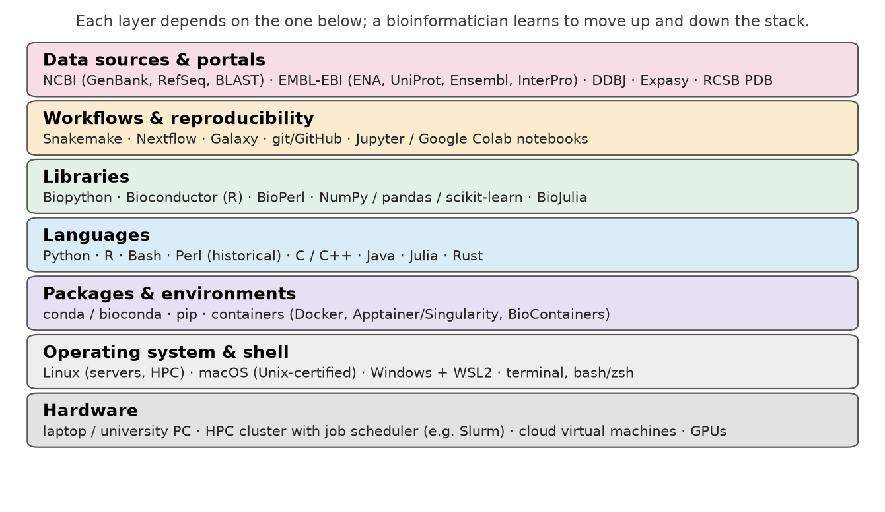
Sistemas operativos: por qué Unix domina la bioinformática
Un sistema operativo (SO) es el programa que administra el hardware de un computador (procesador, memoria, discos, red) y presta servicios a todos los demás programas: inicia y detiene procesos, asigna memoria, organiza los archivos y controla quién puede acceder a qué. Las tres familias que encontrarás son Linux, macOS y Windows.
Casi todos los servidores de bioinformática, los clústeres de computación de alto rendimiento y las máquinas en la nube usan Linux, un sistema operativo libre y de código abierto de la familia Unix. Hay razones históricas y prácticas. Unix se diseñó en la década de 1970 en torno a una potente interfaz de línea de comandos, un único sistema de archivos jerárquico y la filosofía de programas pequeños que hacen bien una sola cosa y que pueden combinarse. Los datos biológicos son en su mayoría archivos de texto plano (FASTA, FASTQ, GenBank, VCF, PDB), y las herramientas de Unix son extremadamente eficientes para procesar texto. La mayoría de los programas de bioinformática los escriben grupos académicos primero para Linux, y muchos están disponibles solo para sistemas tipo Unix. Linux es gratuito, lo que importa cuando un clúster tiene miles de nodos.
macOS también es un sistema Unix (está certificado como conforme con el estándar UNIX), y su aplicación Terminal da acceso a la misma shell y a la mayoría de los mismos comandos; un pequeño número de opciones de comandos difiere de las versiones de Linux (GNU). Windows tiene una herencia distinta. Desde 2016 ofrece el Windows Subsystem for Linux (WSL; la versión actual es WSL 2), que ejecuta un kernel de Linux genuino y una distribución de Linux, como Ubuntu, dentro de Windows. Para este curso, un usuario de Windows debería instalar WSL 2 o usar Google Colab, que proporciona una máquina virtual Linux en el navegador.
La shell de Unix desde cero: archivos, directorios y rutas
La shell es un programa que lee los comandos escritos en una terminal y le pide al sistema operativo que los ejecute. Las shells más comunes son bash (la predeterminada en la mayoría de los sistemas Linux) y zsh (la predeterminada en las versiones recientes de macOS); para todo lo de este curso se comportan de forma idéntica. Un comando tiene la forma program -options arguments: por ejemplo, ls -l data ejecuta el programa ls (list, listar), con la opción -l (formato largo), sobre el argumento data (un directorio).
Los archivos de Unix se organizan en un único árbol que parte en el directorio raíz, escrito /. Cada archivo tiene una ruta: una ruta absoluta parte desde la raíz (/home/student/project/data/hbb.fasta) y una ruta relativa parte desde el directorio de trabajo actual (data/hbb.fasta). Siempre hay dos nombres especiales disponibles: . significa «este directorio» y .. significa «el directorio padre»; ~ significa tu directorio personal (home). Los nombres de archivos y directorios distinguen mayúsculas de minúsculas (HBB.fasta y hbb.fasta son archivos distintos), y los espacios en los nombres causan problemas en la shell, por lo que los bioinformáticos usan nombres como hbb_mrna.fasta.
Los comandos esenciales son pocos. Los siguientes se ejecutaron en un directorio de proyecto nuevo que contenía un subdirectorio data con tres archivos: el ARNm de HBB en formato FASTA, el genoma de E. coli K-12 y sus secuencias codificantes anotadas (ambos descargados desde NCBI).
$ pwd
$ ls data
$ mkdir -p results && ls
$ head -n 3 data/HBB_mRNA.fasta
$ wc -l data/HBB_mRNA.fastaLee la salida línea por línea. pwd (print working directory) muestra dónde estás. ls lista el contenido de un directorio. mkdir -p results crea un directorio para los resultados (la opción -p evita un error si ya existe), y && ejecuta el segundo comando solo si el primero tuvo éxito. head -n 3 imprime las tres primeras líneas de un archivo: un archivo FASTA comienza con una línea de encabezado que empieza con >, seguida de líneas de secuencia. wc -l cuenta líneas: el archivo del ARNm de HBB tiene 12 líneas, un encabezado más once líneas de secuencia (60 bases por línea, la última más corta). Otros comandos indispensables son cd (cambiar de directorio), cp (copiar), mv (mover o renombrar), rm (eliminar: no hay papelera de reciclaje, así que úsalo con cuidado), less (ver un archivo página por página) y man (mostrar el manual de cualquier comando, por ejemplo man grep).
Pipes y procesamiento de texto: grep, awk y sed sobre archivos FASTA
La verdadera potencia de Unix proviene de dos ideas. Primero, la mayoría de los comandos leen texto desde su entrada estándar y escriben texto en su salida estándar. Segundo, el símbolo de pipe | conecta la salida de un comando con la entrada del siguiente, de modo que herramientas simples pueden combinarse en un análisis; el símbolo > redirige la salida a un archivo. Tres herramientas hacen la mayor parte del trabajo sobre archivos de texto biológicos.
grep: encontrar líneas que coinciden con un patrón
grep imprime las líneas que contienen un patrón, que puede ser una cadena fija o una expresión regular (un pequeño lenguaje para describir patrones; por ejemplo, [A-Z] significa «cualquier letra mayúscula»). Con -c cuenta las líneas que coinciden y con -o imprime solo la parte que coincide.
$ grep -c ">" data/ecoli_cds.fasta
$ grep ">" data/ecoli_cds.fasta | head -n 2 | cut -c 1-110
$ grep -o "\[gene=[^]]*\]" data/ecoli_cds.fasta | head -n 5
$ grep -c "\[gene=lac" data/ecoli_cds.fasta
$ grep -o "\[gene=lac[A-Z]\]" data/ecoli_cds.fasta | sort | uniqEl primer comando cuenta las líneas de encabezado del archivo de CDS de E. coli, que equivalen al número de secuencias: 4,318, el mismo número que obtuvimos con Biopython en la Sección 1.1. El segundo muestra que los encabezados de NCBI contienen información estructurada entre corchetes. Los comandos siguientes extraen los nombres de los genes y encuentran los genes del operón de la lactosa, el sistema en el que Jacob y Monod descubrieron la regulación génica: lacZ, lacY y lacA (genes estructurales) y lacI (el represor).
awk: un pequeño lenguaje para columnas y registros
awk procesa texto línea por línea y es ideal para hacer cálculos. Un programa de awk es una lista de reglas pattern {action}; NR es el número de la línea actual y END marca las acciones que se ejecutan después de la última línea. Los siguientes comandos cuentan las secuencias, calculan la longitud de cada secuencia codificante (sumando las longitudes de las líneas de secuencia hasta el siguiente encabezado) y las resumen:
$ awk '/^>/ {n++} END {print n " sequences"}' data/ecoli_cds.fasta
$ awk '/^>/ {if (len) print len; len=0; next} {len += length($0)} END {print len}' data/ecoli_cds.fasta > results/cds_lengths.txt; sort -n results/cds_lengths.txt | tail -n 3
$ awk '{s += $1} END {printf "mean CDS length = %.1f nt over %d genes\n", s/NR, NR}' results/cds_lengths.txtLa secuencia codificante más larga de E. coli tiene 7,020 nt y la longitud media es de 932.6 nt, lo que corresponde a proteínas de unos 310 residuos en promedio. Observa cómo el segundo comando guardó su resultado intermedio en results/cds_lengths.txt con > y luego lo ordenó numéricamente con sort -n.
tr, fold, sort, uniq: contar bases y motivos
$ grep -v ">" data/ecoli.fasta | tr -d "\n" | wc -c
$ grep -v ">" data/ecoli.fasta | fold -w 1 | sort | uniq -c
$ grep -v ">" data/ecoli.fasta | tr -d "\n" | grep -o "GAATTC" | wc -lEl primer comando elimina las líneas de encabezado (grep -v invierte la coincidencia), borra los saltos de línea con tr -d y cuenta caracteres: 4,641,652, la longitud del genoma. El segundo imprime una base por línea (fold -w 1), las ordena y cuenta las líneas idénticas consecutivas (uniq -c), lo que da la misma composición de bases calculada con Python en la Sección 1.1 (la primera línea, con un carácter vacío, es el salto de línea final). El tercero cuenta las apariciones de GAATTC, el sitio de reconocimiento de la enzima de restricción EcoRI, en la hebra dada: 646. Como GAATTC es su propio complemento reverso (un palíndromo), el recuento es el mismo en la otra hebra.
sed: editar flujos de texto
sed (stream editor, editor de flujos) transforma texto, casi siempre mediante sustitución con la sintaxis s/pattern/replacement/. Con expresiones regulares extendidas (-E), las partes del patrón entre paréntesis pueden reutilizarse en el reemplazo como \1, \2. El primer comando de abajo acorta los largos encabezados de NCBI a «nombre del gen + identificador», un paso habitual antes de ejecutar otros programas; el segundo calcula el complemento reverso de las primeras 60 bases del extremo del ARNm de HBB combinando tr (para complementar) con rev (para invertir).
$ sed -E "s/^>lcl\|([^ ]+) \[gene=([^]]+)\].*/>\2 \1/" data/ecoli_cds.fasta | grep ">" | head -n 3
$ grep -v ">" data/HBB_mRNA.fasta | tr -d "\n" | tr ACGT TGCA | rev | cut -c 1-60Error frecuente: finales de línea, caracteres ocultos y planillas de cálculo
Los archivos editados en Windows terminan las líneas con dos caracteres (retorno de carro + salto de línea) en lugar de uno; muchas herramientas de Unix ven entonces un \r invisible al final de cada línea de secuencia y producen longitudes erróneas o coincidencias fallidas. Convierte esos archivos con dos2unix o tr -d '\r'. Nunca abras archivos de secuencias o de listas de genes en una planilla de cálculo para volver a guardarlos: se sabe que las planillas convierten algunos símbolos de genes en fechas y pueden alterar silenciosamente los números largos. Mantén los datos crudos como solo lectura y genera todo lo demás con scripts.
Pruébalo tú mismo: una sesión de shell en Google Colab
En un notebook de Colab, cualquier línea que comienza con ! se envía a una shell de Linux. Descarga el ARNm de HBB directamente desde NCBI con !wget -O hbb.fasta "https://eutils.ncbi.nlm.nih.gov/entrez/eutils/efetch.fcgi?db=nuccore&id=NM_000518.5&rettype=fasta" y luego repite los comandos anteriores: !head hbb.fasta, !grep -v ">" hbb.fasta | tr -d "\n" | wc -c (deberías obtener 628, la longitud del ARNm). Después responde con un pipeline para cada pregunta: ¿cuántas veces aparece el trinucleótido CTG en el ARNm? ¿Cuántas líneas del archivo contienen GAG?
Lenguajes de programación para bioinformática
Los comandos de la shell son excelentes para manipulaciones rápidas, pero los análisis con lógica, estadística o gráficos necesitan un lenguaje de programación. Un lenguaje de programación es una notación formal para instrucciones que ejecuta un computador. Los lenguajes difieren en velocidad, facilidad de aprendizaje y bibliotecas disponibles. Los bioinformáticos suelen combinar un lenguaje interpretado de alto nivel para la mayor parte del trabajo con lenguajes compilados de bajo nivel para los pocos programas en los que la velocidad es crítica.
| Lenguaje | Tipo | Uso típico en bioinformática | Principal biblioteca o ecosistema biológico |
|---|---|---|---|
| Python | interpretado, de propósito general | scripting, análisis de datos, aprendizaje automático, servicios web, notebooks; el lenguaje de este curso | Biopython; NumPy, pandas, scikit-learn, matplotlib |
| R | interpretado, estadístico | estadística, visualización, análisis de datos de expresión y genómicos | Bioconductor; tidyverse |
| Perl | interpretado, procesamiento de texto | históricamente dominante en los proyectos genoma de las décadas de 1990–2000; aún presente en pipelines heredados | BioPerl |
| C / C++ | compilado, de bajo nivel | herramientas en las que el rendimiento es crítico: alineadores, ensambladores, BLAST, motores de dinámica molecular | SeqAn, htslib (C) |
| Java | compilado a bytecode | aplicaciones portables de escritorio y de servidor | GATK, Picard, IGV, BioJava |
| Julia | compilado just-in-time, científico | trabajo numérico que necesita a la vez velocidad y sintaxis de alto nivel | BioJulia |
| Bash | scripting de shell | unir programas entre sí, automatizar operaciones con archivos | GNU coreutils |
Python es hoy el lenguaje más enseñado en bioinformática porque su sintaxis es legible, es gratuito y sus bibliotecas científicas son excelentes. Biopython, lanzado por primera vez en 1999 y descrito en 2009, proporciona parsers para FASTA, GenBank, PDB y muchos otros formatos, acceso a NCBI (Entrez) y a otros servicios, objetos de secuencia con traducción y complemento reverso, herramientas de alineamiento y más[33]. Los fragmentos de código de este curso lo usan. R es el lenguaje de la estadística, y el proyecto Bioconductor, iniciado en 2001, proporciona paquetes revisados por pares para el análisis de datos genómicos, en especial de microarreglos, RNA-seq y datos de célula única[58][59]. Perl, con sus potentes expresiones regulares, fue el lenguaje de los primeros pipelines de anotación de genomas y del conjunto de herramientas BioPerl[60]; todavía encontrarás scripts de Perl en software antiguo. C y C++ se usan donde el rendimiento importa: BLAST, la mayoría de los alineadores de reads y los ensambladores de genomas están escritos en ellos. Java se ejecuta en cualquier sistema operativo mediante su máquina virtual y se usa en herramientas como el Integrative Genomics Viewer. Julia es un lenguaje más reciente diseñado para combinar la comodidad de Python con la velocidad de C[61].
Error frecuente: elegir un lenguaje es menos importante que escribir código reproducible
A veces los estudiantes dedican más tiempo a debatir qué lenguaje aprender que a aprender uno. Python o R bastan para la mayoría de los análisis, y los conceptos (variables, bucles, funciones, estructuras de datos, lectura y escritura de archivos) se transfieren entre lenguajes. Lo que importa más es que el código sea legible, esté comentado, se mantenga bajo control de versiones y se ejecute desde los datos crudos hasta la figura final sin pasos manuales.
Biopython, notebooks y Google Colab
Un notebook es un documento que combina código ejecutable, su salida (números, tablas, figuras) y texto explicativo. Los notebooks de Jupyter, que surgieron del proyecto IPython, se han convertido en un formato estándar para el trabajo computacional reproducible en ciencia[62]. Google Colab es un servicio gratuito de Jupyter alojado: el notebook se ejecuta en una máquina virtual Linux en la nube de Google, con Python y muchas bibliotecas científicas preinstaladas, de modo que no hay que instalar nada en el computador del estudiante[W1]. Las bibliotecas que no vienen preinstaladas, como Biopython, se instalan en la sesión con !pip install biopython. La sesión es temporal: los archivos se pierden cuando termina, a menos que se guarden en Google Drive o se descarguen.
Pruébalo tú mismo: k-mers de HBB con Python
Ejecuta este fragmento en Colab después del fragmento de entropía de la Sección 1.1 (que guardó localmente el registro GenBank). Cuenta los dinucleótidos y los compara con los recuentos esperados si las bases fueran independientes; la Sección 1.4 explica por qué la línea de CG es tan distinta de las demás.
from Bio import SeqIO
from collections import Counter
from itertools import product
rec = SeqIO.read("HBB_NM_000518.gb", "genbank") # file saved by the previous snippet
seq = str([f for f in rec.features if f.type == "CDS"][0].extract(rec.seq))
def kmer_counts(s, k):
return Counter(s[i:i + k] for i in range(len(s) - k + 1))
di = kmer_counts(seq, 2)
mono = Counter(seq)
n = len(seq)
print("possible 2-mers:", 4 ** 2, " observed distinct 2-mers:", len(di))
for d in ["CG", "GC", "TG", "CA"]:
expected = mono[d[0]] * mono[d[1]] / n # expected count if bases were independent
print(f"{d}: observed {di[d]:3d} expected {expected:5.1f} obs/exp {di[d] / expected:.2f}")
print("distinct 3-mers:", len(kmer_counts(seq, 3)), "of", 4 ** 3)
print("distinct 6-mers:", len(kmer_counts(seq, 6)), "of", 4 ** 6)Gestores de paquetes, entornos y contenedores
El software de bioinformática depende de otro software: una versión dada de un programa puede requerir versiones específicas de bibliotecas, compiladores u otros programas. Instalar todo a mano en cada computador es lento y propenso a errores, y distintos proyectos pueden requerir versiones incompatibles. Hay tres soluciones estándar.
Los gestores de paquetes descargan e instalan el software junto con sus dependencias. pip instala paquetes de Python. conda instala paquetes escritos en cualquier lenguaje en entornos aislados: cada entorno es un directorio con sus propias versiones de Python, bibliotecas y programas, de modo que un proyecto puede usar una versión de una herramienta y otro proyecto una versión distinta. El canal Bioconda distribuye miles de paquetes de bioinformática para conda, mantenidos por una comunidad de voluntarios[63]. Un comando como conda create -n course -c conda-forge -c bioconda python=3.11 biopython blast mafft crea en un solo paso un entorno con Python, Biopython, BLAST y el alineador MAFFT.
Los contenedores van más allá: una imagen de contenedor empaqueta un programa con todo su sistema operativo en espacio de usuario, de modo que se ejecuta de forma idéntica en un portátil, un clúster o la nube. Docker es el sistema de contenedores más popular; Apptainer (antes Singularity) se prefiere en clústeres compartidos porque no requiere privilegios de administrador[64]. El proyecto BioContainers proporciona imágenes de contenedor listas para usar de herramientas de bioinformática, muchas generadas automáticamente a partir de recetas de Bioconda[65].
Gestores de flujos de trabajo: Snakemake, Nextflow y Galaxy
Un análisis real es una cadena de pasos: control de calidad de los reads, alineamiento contra una referencia, llamado de variantes, anotación, filtrado, generación de informes. Un gestor de flujos de trabajo describe esta cadena formalmente, como un conjunto de reglas que indican qué archivos de entrada necesita cada paso y qué archivos de salida produce. El gestor decide entonces el orden de ejecución, vuelve a ejecutar solo los pasos cuyas entradas cambiaron, ejecuta en paralelo los pasos independientes y registra lo que se hizo. Snakemake usa una sintaxis basada en Python e inspirada en la herramienta clásica de Unix make[66]; Nextflow usa un modelo de flujo de datos y sustenta los pipelines nf-core, curados por la comunidad[67]. Ambos se integran con conda y con contenedores, de modo que un flujo de trabajo especifica no solo los pasos, sino también el software exacto de cada paso. Galaxy ofrece las mismas capacidades mediante una interfaz web, sin programar: los usuarios eligen herramientas desde menús, las conectan en flujos de trabajo y comparten historiales, lo que lo hace popular para la docencia y para laboratorios sin programadores[68].
Control de versiones con git y GitHub
git es un sistema de control de versiones: registra la historia de un conjunto de archivos (normalmente código y datos pequeños), de modo que cada cambio se guarda con su autor, fecha y un mensaje, cualquier versión anterior puede recuperarse y varias personas pueden trabajar en el mismo proyecto y fusionar sus cambios. GitHub (y servicios similares como GitLab) aloja repositorios de git en línea, añade herramientas para la colaboración y la revisión de código, y es donde se desarrolla y distribuye la mayor parte del software de bioinformática de código abierto. Perez-Riverol y colaboradores entregan reglas prácticas para científicos que comienzan con git[69]. El ciclo básico es: modificar archivos, hacer git add de los cambios que quieres registrar, git commit -m "message" para guardar una instantánea, y git push para enviar los commits al repositorio remoto. Los archivos de datos grandes no se guardan en git; se depositan en archivos públicos (por ejemplo, ENA o Zenodo) y se referencian por su número de acceso.
Computación de alto rendimiento y en la nube
Algunas tareas superan a un computador personal. Alinear los reads de un genoma humano secuenciado a 30×, ensamblar un genoma o ejecutar dinámica molecular (Unidad 5) requiere muchos núcleos de procesador, cientos de gigabytes de memoria o semanas de tiempo de cómputo. Un clúster de computación de alto rendimiento (HPC) está formado por muchos computadores (nodos) conectados por una red rápida y que comparten un sistema de archivos. Los usuarios se conectan de forma remota con ssh a un nodo de acceso (login node) y envían jobs a un scheduler (Slurm es el más común), que los pone en cola y los ejecuta en los nodos de cómputo cuando se liberan recursos. La regla en los clústeres es no ejecutar nunca cálculos pesados en el nodo de acceso. La computación en la nube arrienda por hora máquinas virtuales y almacenamiento a proveedores comerciales, lo que es flexible y escalable, pero plantea preguntas sobre el costo y, en el caso de datos clínicos, sobre dónde se almacenan físicamente los datos y quién puede acceder a ellos (Sección 1.5). Las GPU (unidades de procesamiento gráfico), diseñadas originalmente para videojuegos, realizan muchas operaciones aritméticas en paralelo y son esenciales para el aprendizaje profundo, incluido AlphaFold, y para las simulaciones moleculares.
Los principales portales de bioinformática
Se accede a los datos y a muchas herramientas a través de unas pocas grandes instituciones públicas que usarás a lo largo del curso:
- NCBI (National Center for Biotechnology Information, Estados Unidos): GenBank, RefSeq, dbSNP, ClinVar, PubMed, BLAST y decenas de otros recursos, todos consultables mediante el sistema Entrez y, de forma programática, mediante las E-utilities[70][71].
- EMBL-EBI (European Bioinformatics Institute, Reino Unido): el European Nucleotide Archive (ENA), UniProt (con el SIB y el PIR), Ensembl (con el Wellcome Sanger Institute), InterPro, PDBe, AlphaFold DB y muchas herramientas de análisis[72].
- DDBJ (DNA Data Bank of Japan): el tercer socio, junto con NCBI y ENA, de la International Nucleotide Sequence Database Collaboration, que intercambia datos a diario para que los tres archivos contengan las mismas secuencias[17].
- Expasy (Swiss Institute of Bioinformatics): el portal de los recursos del SIB y de herramientas para proteínas como ProtParam, PROSITE y SWISS-MODEL[73].
- RCSB PDB (Estados Unidos): el sitio estadounidense del Protein Data Bank mundial, con herramientas de búsqueda, visualización y análisis de estructuras[14].
La mayoría de estos recursos ofrece tres modos de acceso: una interfaz web para búsquedas interactivas, descargas masivas por transferencia de archivos y una interfaz de programación de aplicaciones (API), normalmente un servicio REST que devuelve datos en respuesta a una URL. Los fragmentos de código de esta unidad usan las E-utilities de NCBI, la API REST de Ensembl, la API REST de UniProt y la API de búsqueda de RCSB; aprender a usar las API es lo que convierte una búsqueda manual en un análisis reproducible.
Pruébalo tú mismo: consulta en Ensembl la variante de la anemia falciforme
La API REST de Ensembl devuelve JSON, un formato de texto que Python lee como diccionarios y listas. Este fragmento pide el identificador de dbSNP rs334, la variante responsable de la HbS:
import requests
v = requests.get("https://rest.ensembl.org/variation/human/rs334",
headers={"Content-Type": "application/json"}, timeout=60).json()
m = v["mappings"][0]
print(v["name"], "|", v["most_severe_consequence"], "|", m["assembly_name"], m["location"], m["allele_string"])
print("clinical significance terms:", ", ".join(sorted(v.get("clinical_significance", []))))
print("synonyms (first 5):", v.get("synonyms", [])[:5])La ubicación se da en la hebra directa (forward) del cromosoma 11 en GRCh38. Como HBB está en la hebra reversa, la T de referencia en la hebra directa corresponde a la A del codón GAG en la hebra codificante, y el alelo A en la hebra directa corresponde al GTG de la HbS. Los otros alelos listados (C y G en la hebra directa, es decir, G y C en la hebra codificante) son variantes más raras del mismo codón que codificarían glicina (GGG) o alanina (GCG). La hemoglobina C es una variante distinta: cambia la primera base del mismo codón (GAG→AAG, glutamato→lisina) en la posición vecina 11:5,227,003 y tiene su propio identificador, rs33930165. Abre la misma variante en un navegador en https://www.ensembl.org (busca «rs334») y compara.
Ideas clave
- Linux (y macOS, tipo Unix) dominan la bioinformática; los usuarios de Windows pueden usar WSL 2 o un notebook en la nube.
- La shell ejecuta comandos; los archivos viven en un árbol y se identifican por rutas absolutas o relativas; los pipes (
|) y la redirección (>) combinan herramientas pequeñas. grepencuentra patrones,awkhace cálculos sobre líneas y columnas,sededita texto; juntos responden en una sola línea muchas preguntas sobre archivos FASTA.- Python (con Biopython) y R (con Bioconductor) son los principales lenguajes de análisis; C/C++ y Java proporcionan herramientas rápidas; Perl es histórico; Julia es emergente.
- Los entornos de conda/Bioconda y los contenedores hacen que el software sea instalable y reproducible; Snakemake, Nextflow y Galaxy organizan análisis de varios pasos; git registra la historia del código.
- Los cálculos pesados se ejecutan en clústeres HPC con schedulers, en la nube o en GPU.
- NCBI, EMBL-EBI, DDBJ, Expasy y RCSB PDB son los principales portales, todos accesibles por web, descarga y API.
Sección 1.4Secuencias biológicas. Modelos matemáticos de secuencias biológicas
Programa oficial (ítem numerado 1.3): «Secuencias biológicas. Modelos matemáticos de secuencias biológicas.»
Para un computador, una molécula de ADN es una cadena de caracteres como ATGGTGCATCTG…. Tratar las moléculas como cadenas es una abstracción poderosa: nos permite contar, buscar, comparar y modelar secuencias con las herramientas de la matemática y de las ciencias de la computación. También es una simplificación, porque descarta la química, la forma tridimensional y el contexto celular. Esta sección define primero con precisión las secuencias biológicas y luego introduce los modelos probabilísticos que se usan en toda la bioinformática, desde el más simple (cada posición independiente de las demás) hasta las cadenas de Markov y una introducción a los modelos ocultos de Markov. Usamos los modelos para resolver un problema real: reconocer islas CpG en el ADN humano.
Secuencias biológicas, alfabetos y códigos IUPAC
Una secuencia es una cadena finita de símbolos tomados de un alfabeto. El ADN usa el alfabeto {A, C, G, T}, el ARN usa {A, C, G, U} y las proteínas usan los veinte aminoácidos estándar, cada uno escrito con un código de una letra. Las secuencias tienen dirección. Los ácidos nucleicos se escriben desde el extremo 5′ hacia el extremo 3′, la dirección en que se sintetizan; las proteínas se escriben desde el extremo amino (N) hacia el extremo carboxilo (C), la dirección en que el ribosoma las sintetiza. Como el ADN es de doble hebra y sus hebras son antiparalelas y complementarias (A se aparea con T, C con G), toda secuencia de ADN implica una segunda secuencia, su complemento reverso: se complementa cada base y se lee el resultado al revés. El complemento reverso de 5′-ATGC-3′ es 5′-GCAT-3′. Los genes pueden estar en cualquiera de las dos hebras, por lo que los programas que buscan en el ADN deben buscar en ambas.
Las secuencias reales no siempre son seguras. Un secuenciador puede no lograr decidir entre dos bases, una posición puede ser polimórfica en una población y un cebador puede diseñarse para coincidir con varias secuencias. La Unión Internacional de Química Pura y Aplicada (IUPAC) y la Unión Internacional de Bioquímica definieron códigos estándar para bases especificadas de forma incompleta[74], que todo programa de bioinformática entiende (Tabla 5).
| Código | Significado | Mnemotecnia (en inglés) | Complemento |
|---|---|---|---|
| A, C, G, T (U) | adenina, citosina, guanina, timina (uracilo) | — | T, G, C, A |
| R | A o G | puRine (purina) | Y |
| Y | C o T | pYrimidine (pirimidina) | R |
| S | G o C | Strong, fuerte (3 puentes de hidrógeno) | S |
| W | A o T | Weak, débil (2 puentes de hidrógeno) | W |
| K | G o T | Keto (ceto) | M |
| M | A o C | aMino | K |
| B | C, G o T (no A) | letra siguiente a A | V |
| D | A, G o T (no C) | letra siguiente a C | H |
| H | A, C o T (no G) | letra siguiente a G | D |
| V | A, C o G (no T) | letra siguiente a T/U | B |
| N | cualquier base | aNy (cualquiera) | N |
En las proteínas, además de las veinte letras estándar, encontrarás U (selenocisteína) y O (pirrolisina), los aminoácidos codificados genéticamente 21.º y 22.º; B (D o N) y Z (E o Q), que se usan cuando el análisis químico no pudo distinguir un ácido de su amida; X (desconocido); y * para un codón de término en secuencias traducidas. El símbolo de gap - aparece en los alineamientos (Unidad 4A). Una consecuencia práctica: las letras A, C, G y T también son códigos válidos de aminoácidos (alanina, cisteína, glicina, treonina), por lo que un programa no siempre puede adivinar si una cadena corta es ADN o proteína. Debes saber siempre, y declarar cuando sea necesario, qué alfabeto estás usando.
Formatos de archivos de secuencias
Las secuencias se almacenan en archivos de texto con formatos estándar. El más simple y universal es FASTA, heredado del programa del mismo nombre[19]: cada registro tiene una línea de encabezado que comienza con >, seguida de un identificador y una descripción opcional, y luego una o más líneas de secuencia (viste ejemplos en la Sección 1.3). FASTQ es el formato de los reads crudos de secuenciación: cada registro tiene cuatro líneas (identificador, secuencia, un separador + y una cadena de calidad con un carácter por base que codifica la confianza del base calling); se explica en la Unidad 2. Los archivos planos GenBank y EMBL contienen una secuencia junto con una anotación detallada (organismo de origen, referencias y una tabla de features que describe genes, exones y secuencias codificantes); la Unidad 3 disecciona un registro GenBank línea por línea. Otros formatos almacenan alineamientos (Clustal, Stockholm, SAM/BAM para reads alineados contra un genoma), variantes (VCF) y estructuras (PDB y mmCIF, Unidad 5).
Composición y contenido de GC
La descripción más simple de una secuencia es su composición: el recuento o la frecuencia de cada símbolo. Para el ADN, el número individual más informativo es el contenido de GC, la fracción de bases que son G o C:
Debido al apareamiento de bases, el contenido de GC de una molécula de doble hebra es el mismo en ambas hebras. El contenido de GC varía entre especies, desde menos del 20% en algunas bacterias hasta más del 70% en otras, y es una característica de cada genoma. En nuestros datos, el genoma de E. coli K-12 tiene GC = 0.508, las primeras 10 Mb del cromosoma 11 humano tienen 0.459 y la secuencia codificante de HBB tiene 0.561: las secuencias codificantes humanas son, en general, más ricas en GC que el ADN no codificante que las rodea. El contenido de GC también varía a lo largo de un genoma, por lo que a menudo se calcula en ventanas deslizantes. Importa en el laboratorio: los pares G–C se mantienen unidos por tres puentes de hidrógeno y se apilan con más fuerza que los pares A–T, por lo que el ADN rico en GC se desnaturaliza a mayor temperatura, lo que afecta el diseño de cebadores y sondas para PCR, y algunas tecnologías secuencian de forma menos uniforme las regiones ricas o pobres en GC (Unidad 2).
GC skew y la replicación de los cromosomas bacterianos
El apareamiento de bases garantiza que ambas hebras juntas contengan el mismo número de G y de C, pero nada obliga a que una hebra individual lo haga. El GC skew de una ventana de una hebra se define como
En muchas bacterias el skew cambia de signo en el origen y en el término de la replicación. La replicación de un cromosoma circular comienza en un único origen y avanza en ambas direcciones hasta el término, de modo que cada mitad del cromosoma se copia con una hebra como hebra «adelantada» (leading) y la otra como hebra «rezagada» (lagging). Los procesos mutacionales y selectivos difieren entre ambas, de modo que la hebra adelantada se enriquece en G respecto de C[75]. Graficar el skew acumulado, la suma corrida de los skews de las ventanas, hace fácil encontrar los puntos de cambio: el mínimo marca el origen y el máximo, el término[76]. Para el genoma de E. coli K-12, nuestro cálculo en ventanas de 10 kb sitúa el mínimo en 3,925,000 pb y el máximo en 1,545,000 pb (Figura 12); el mínimo coincide con la región donde está anotado el origen de replicación oriC. Este estadístico simple, calculado solo a partir de la secuencia, recupera una característica biológica fundamental del cromosoma, y se usa para localizar los orígenes en genomas bacterianos recién secuenciados.
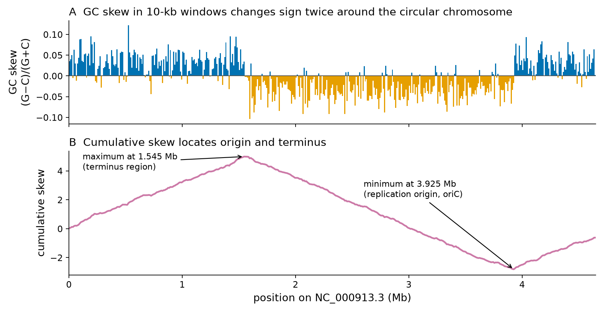
Palabras y espectros de k-mers
Un k-mer es una subcadena de longitud k; una secuencia de longitud n contiene n − k + 1 k-mers superpuestos. Existen 4k k-mers de ADN posibles: 16 dinucleótidos, 64 trinucleótidos, 65,536 8-mers y más de 268 millones de 14-mers. El espectro de k-mers de una secuencia es la tabla de recuentos de todos sus k-mers, y es una descripción sorprendentemente rica. En el genoma de 4.64 Mb de E. coli observamos 65,360 de los 65,536 8-mers posibles, 898,115 de los 1,048,576 10-mers posibles, 3,478,960 de los 16.8 millones de 12-mers posibles y 4,432,224 14-mers distintos, lo que equivale al 95.5% de todas las posiciones de 14-mers del genoma. En otras palabras, las palabras cortas aparecen muchas veces, pero la mayoría de las palabras de más de unas 14 bases aparece una sola vez en un genoma bacteriano; en un genoma humano, unas mil veces más grande, la longitud correspondiente es algo mayor, porque 4k debe superar ampliamente el tamaño del genoma (416 ≈ 4.3 × 109) para que la mayoría de las palabras sean únicas. Por eso las seeds de 20–30 bases son lo bastante únicas para mapear reads de secuenciación contra un genoma, por eso los grafos de k-mers pueden ensamblar genomas y por eso BLAST parte de palabras cortas (Unidades 2 y 4A). Los espectros de k-mers también se usan para comparar genomas sin alineamiento y para estimar el tamaño del genoma y los errores de secuenciación a partir de reads crudos.
Abundancia relativa de dinucleótidos y depleción de CpG
Comparar la frecuencia observada de un dinucleótido xy con la frecuencia esperada si sus bases fueran independientes, fxy / (fx fy), revela procesos biológicos (Figura 13). En E. coli las dieciséis razones están entre 0.75 (TpA) y 1.28 (GpC). En el ADN humano un dinucleótido está drásticamente empobrecido: CpG (una C seguida de una G en la misma hebra, escrito CpG para distinguirlo de un par de bases C–G) aparece solo a 0.29 de su frecuencia esperada, mientras que el orden inverso, GpC, está a 0.99, y TpG y CpA están enriquecidos (1.21 y 1.20). En la secuencia codificante de HBB la razón de CpG es aún menor, 0.14.
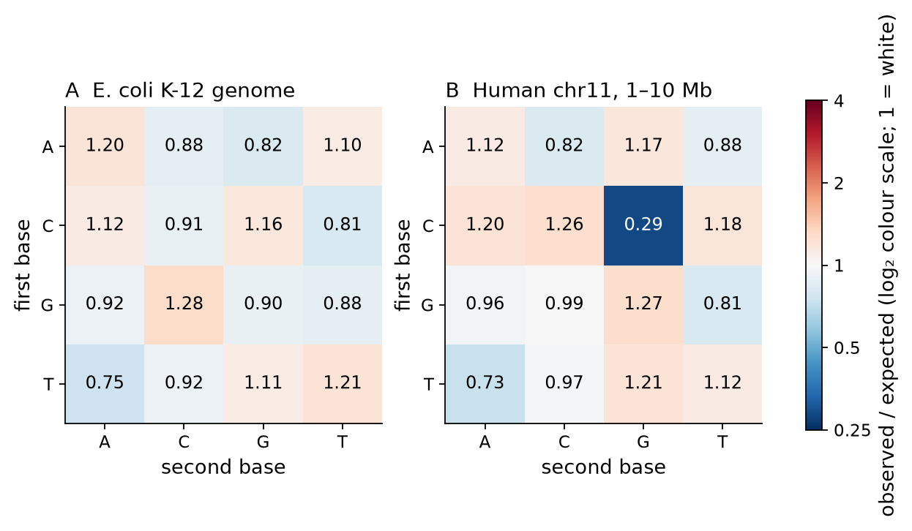
La explicación es química. En los vertebrados, la mayoría de las citosinas de los CpG están metiladas (5-metilcitosina), una marca asociada al silenciamiento génico. La citosina metilada tiende a perder espontáneamente su grupo amino (desaminación) y convertirse en timina; el desapareamiento T·G resultante no siempre se repara correctamente. A lo largo del tiempo evolutivo, CpG ha mutado por lo tanto a TpG (y, en la otra hebra, a CpA), lo que explica tanto la depleción de CpG como el exceso de TpG y CpA. CpG es el dinucleótido más mutable del genoma humano, y los sitios CpG aportan una proporción desmedida de las sustituciones de una sola base observadas en pacientes. Las excepciones son las islas CpG: tramos de unos pocos cientos a unos pocos miles de bases, a menudo alrededor de los promotores de genes, en los que CpG sigue siendo frecuente porque las citosinas se mantienen no metiladas[77][78]. En la anotación de Ensembl de las primeras 10 Mb del cromosoma 11 hay 196 islas CpG (longitud mediana de 876 pb, rango de 404–4274 pb), que cubren el 2.1% de la región. Reconocerlas a partir de la secuencia es un problema clásico, que ahora resolveremos con modelos probabilísticos.
El modelo de orden cero (i.i.d.)
Un modelo probabilístico de secuencias asigna una probabilidad a cada secuencia posible. Los modelos nos permiten preguntar si un patrón observado es sorprendente, comparar hipótesis y clasificar secuencias. El modelo más simple supone que cada posición se extrae independientemente de la misma distribución (i.i.d.: independientes e idénticamente distribuidas), con probabilidades de bases pA, pC, pG, pT. La probabilidad de una secuencia x = x1…xL es entonces el producto
El modelo predice con qué frecuencia debería aparecer una palabra por azar. El número esperado de apariciones de una palabra w de longitud k en una secuencia de longitud n es (n − k + 1) ∏ pwj. Para el sitio de EcoRI GAATTC en el genoma de E. coli, con las frecuencias de bases observadas, la expectativa es de 1097 apariciones; en la Sección 1.3 contamos 646, solo 0.59 de lo esperado. Muchos sitios de restricción palindrómicos están subrepresentados en los genomas bacterianos, un patrón que a menudo se interpreta como consecuencia de la selección impuesta por los sistemas de restricción–modificación. Esta es la lógica básica de la estadística de motivos: un modelo de secuencia «aleatoria» define lo esperado, y las desviaciones respecto de él sugieren una función biológica. El peligro es que la conclusión depende del modelo. Si no se toman en cuenta las frecuencias de dinucleótidos, por ejemplo, cualquier palabra que contenga CpG parecerá «significativamente» rara en el ADN humano por una razón que no tiene nada que ver con la palabra en sí.
Cadenas de Markov de orden k
El modelo i.i.d. no puede representar la depleción de CpG, porque ignora a los vecinos. Una cadena de Markov de primer orden hace que la probabilidad de cada base dependa de la base precedente:
Una cadena de Markov de orden k condiciona sobre las k bases precedentes y tiene 4k × 3 parámetros libres (cada uno de los 4k contextos necesita tres probabilidades; la cuarta queda determinada porque suman 1). El modelo i.i.d. es la cadena de Markov de orden 0. Los órdenes superiores capturan más estructura, como mostraron las entropías condicionales de la Figura 5, pero necesitan más datos para estimarse. Los programas de búsqueda de genes suelen usar cadenas de quinto orden (45 = 1,024 contextos, 3,072 parámetros libres) porque, junto con la base predicha, capturan estadísticas de hexámeros (dicodones) que abarcan seis bases.
Ejemplo resuelto: un clasificador de Markov para islas CpG
Durbin y colaboradores usaron las islas CpG para introducir los modelos de Markov en su clásico libro de texto[B4]; aquí reproducimos su enfoque con datos humanos actuales. La idea es construir dos modelos de primer orden, un modelo «+» entrenado con islas CpG y un modelo «−» entrenado con ADN ordinario, y clasificar una secuencia nueva preguntando qué modelo la explica mejor.
- Datos. De la anotación de Ensembl del cromosoma 11, posiciones 1–10,000,000 (GRCh38), tomamos las 196 islas CpG. Asignamos islas alternadas a un conjunto de entrenamiento (98 islas) y a un conjunto de prueba (98 islas). Como ejemplos negativos extrajimos ventanas de fondo aleatorias con la misma distribución de longitudes, a al menos 2 kb de cualquier isla anotada y sin N (490 para entrenamiento, 490 para prueba).
- Entrenamiento. Contamos las dieciséis transiciones en cada conjunto de entrenamiento (sumando un pseudoconteo de 1 a cada celda para que ninguna probabilidad sea cero) y normalizamos cada fila. La probabilidad estimada de que C vaya seguida de G es 0.282 en las islas y solo 0.057 en el ADN de fondo (Tabla 6). Durbin y colaboradores, con un conjunto de datos distinto, obtuvieron 0.274 y 0.078.
- Puntuación. Para una secuencia x, la puntuación log-odds es S(x) = log2[P(x | +)/P(x | −)] = Σi βxi−1xi, donde βst = log2(a+st/a−st). La puntuación es una suma de 16 términos posibles; el mayor, βCG = 2.32 bits, premia cada CpG. Dividir por la longitud da una puntuación en bits por base que es comparable entre secuencias de distinta longitud. S > 0 favorece «isla».
- Evaluación. En el conjunto de prueba reservado, la puntuación normalizada por longitud separa bien las dos clases (Figura 14A–B). Con el umbral natural S = 0, el 100% de las islas de prueba y el 8.8% de las ventanas de fondo se clasifican como islas; el área bajo la curva característica operativa del receptor (AUC) es 0.998.
| «+» (islas CpG) | A | C | G | T | «−» (fondo) | A | C | G | T |
|---|---|---|---|---|---|---|---|---|---|
| A | 0.158 | 0.297 | 0.436 | 0.109 | A | 0.313 | 0.182 | 0.259 | 0.246 |
| C | 0.165 | 0.378 | 0.282 | 0.174 | C | 0.339 | 0.279 | 0.057 | 0.326 |
| G | 0.155 | 0.336 | 0.384 | 0.124 | G | 0.273 | 0.216 | 0.282 | 0.229 |
| T | 0.083 | 0.368 | 0.388 | 0.161 | T | 0.206 | 0.215 | 0.269 | 0.31 |
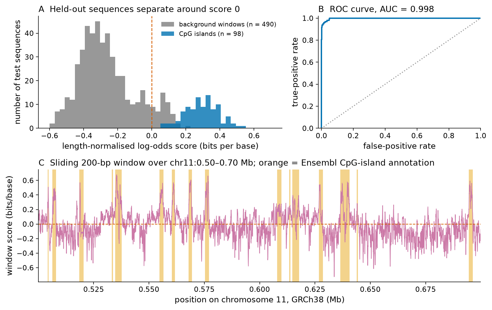
Pruébalo tú mismo: puntúa tus propias secuencias
El siguiente fragmento incluye directamente en el código las dos matrices de transición de la Tabla 6, descarga dos regiones del cromosoma 11 desde Ensembl y las puntúa. La primera es el cuerpo del gen HBB; la segunda es el extremo 5′ de HRAS (transcrito canónico ENST00000311189, hebra reversa, que termina en 535,576 en GRCh38), que se superpone con una isla CpG anotada.
import math, requests
# First-order transition probabilities estimated in Section 1.4 from 98 CpG islands (+)
# and 490 background windows (-) of human chr11:1-10,000,000 (GRCh38).
B = "ACGT"
plus = [[0.158, 0.297, 0.436, 0.109], [0.165, 0.378, 0.282, 0.174],
[0.155, 0.336, 0.384, 0.124], [0.083, 0.368, 0.388, 0.161]]
minus = [[0.313, 0.182, 0.259, 0.246], [0.339, 0.279, 0.057, 0.326],
[0.273, 0.216, 0.282, 0.229], [0.206, 0.215, 0.269, 0.310]]
def log_odds(s):
"""Length-normalised log-likelihood ratio, bits per base: > 0 favours 'CpG island'."""
tot = sum(math.log2(plus[B.index(x)][B.index(y)] / minus[B.index(x)][B.index(y)])
for x, y in zip(s, s[1:]) if x in B and y in B)
return tot / len(s)
def region(chrom, start, end):
url = f"https://rest.ensembl.org/sequence/region/human/{chrom}:{start}..{end}:1"
return requests.get(url, headers={"Content-Type": "text/plain"}, timeout=60).text.strip().upper()
for name, (c, s, e) in {"HBB gene body (chr11:5,225,464-5,227,071)": ("11", 5225464, 5227071),
"HRAS 5' end and promoter (chr11:534,000-535,999)": ("11", 534000, 535999)}.items():
seq = region(c, s, e)
print(f"{name}: {len(seq)} bp, CpG = {seq.count('CG')}, score = {log_odds(seq):+.3f} bits/base")Ensembl no anota ninguna isla CpG en chr11:5,200,000–5,320,000, el locus de la β-globina; como muchos genes que se expresan en un solo tipo celular, HBB tiene un promotor pobre en CpG. Prueba otras regiones: el promotor de un gen de mantenimiento (housekeeping) como GAPDH (busca sus coordenadas en Ensembl) o una ventana intergénica aleatoria.
Error frecuente: un buen AUC no hace un buen anotador de genes
El excelente AUC de la Figura 14B se obtuvo en una prueba favorable: islas completas frente a ventanas de fondo mantenidas lejos de las islas. En un barrido real del genoma, el clasificador debe decidir dónde empiezan y terminan las islas, el fondo incluye repeticiones ricas en CpG y los falsos positivos se acumulan a lo largo de tres mil millones de bases. Además, la «verdad» usada para la evaluación es a su vez una anotación hecha con criterios de secuencia. Pregunta siempre sobre qué se midió una cifra de desempeño.
Uso de codones
El código genético asigna 61 codones con sentido a 20 aminoácidos, por lo que la mayoría de los aminoácidos están codificados por varios codones sinónimos: leucina, serina y arginina por seis, muchos otros por cuatro o dos, y solo metionina y triptófano por uno. Los codones sinónimos no se usan con igual frecuencia, y la preferencia difiere entre especies y entre genes. Una medida conveniente es el uso relativo de codones sinónimos (RSCU): el recuento observado de un codón dividido por el recuento esperado si todos los codones sinónimos de su aminoácido se usaran por igual. RSCU = 1 significa que no hay preferencia; RSCU > 1 significa que el codón es preferido[79].
La Figura 15 compara los valores de RSCU en las 4,318 secuencias codificantes de proteínas de E. coli K-12 con 233 secuencias codificantes humanas (los transcritos canónicos del cromosoma 11, posiciones 1–10 Mb, obtenidos de Ensembl). La arginina es el caso más llamativo. E. coli usa CGT y CGC (RSCU 2.30 y 2.41) y casi evita AGG (RSCU 0.12), mientras que los genes humanos usan AGG con frecuencia (RSCU 1.26). El codón de leucina CTG es fuertemente preferido en ambas especies (RSCU 2.99 en E. coli, 2.76 en humanos). En HBB, 15 de los 18 codones de leucina son CTG (ve el fragmento de abajo).
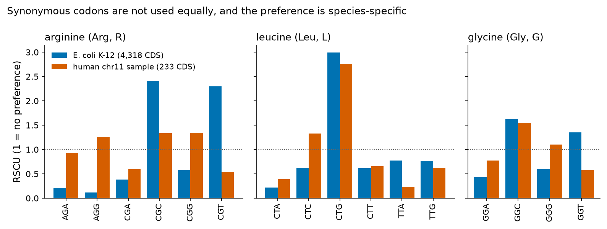
El sesgo de codones tiene varias causas: la presión mutacional (los genomas ricos en GC favorecen codones terminados en G o C), la selección por eficiencia y precisión de la traducción en genes muy expresados, que usan codones que coinciden con los ARN de transferencia más abundantes, y efectos sobre el plegamiento y la estabilidad del ARNm[80]. Tiene consecuencias prácticas. Un gen humano expresado en E. coli para producir una proteína recombinante puede traducirse mal si contiene muchos codones raros en E. coli, como AGG; esos genes se «optimizan en codones» cambiando codones sinónimos. Las estadísticas de codones también son una de las señales que usan los programas de búsqueda de genes para reconocer regiones codificantes, junto con la señal de periodo 3 de la Figura 6.
Pruébalo tú mismo: los codones de HBB
from Bio import SeqIO
from Bio.Seq import Seq
from collections import Counter
rec = SeqIO.read("HBB_NM_000518.gb", "genbank")
cds = str([f for f in rec.features if f.type == "CDS"][0].extract(rec.seq))
codons = [cds[i:i + 3] for i in range(0, len(cds), 3)]
print("codons:", len(codons), " first:", codons[0], " last:", codons[-1])
print("protein:", Seq(cds).translate())
print("codon 7 (counting ATG as 1):", codons[6], "->", Seq(codons[6]).translate(),
"| sickle allele:", "GTG", "->", Seq("GTG").translate())
leu = Counter(c for c in codons if Seq(c).translate() == "L")
print("leucine codons used in HBB:", dict(leu.most_common()))La traducción termina con *, el codón de término. Encuentra el codón de la anemia falciforme en la salida y explica por qué es el codón 7 pero el residuo 6 de la proteína madura.
Introducción a los modelos ocultos de Markov
El clasificador de Markov responde «¿es esta secuencia completa una isla?». No puede responder la pregunta más útil: «¿qué partes de esta secuencia larga son islas?». Un modelo oculto de Markov (HMM) resuelve esto añadiendo una capa de estados no observados («ocultos»)[81]. Para las islas CpG, imagina dos estados, «isla» y «fondo». El modelo avanza a lo largo de la secuencia; en cada posición está en un estado, emite una base según las probabilidades de ese estado y luego permanece en el mismo estado o cambia al otro con probabilidades de transición dadas. Solo observamos las bases, no los estados. Dada una secuencia, algoritmos eficientes de programación dinámica calculan la ruta más probable de estados ocultos (el algoritmo de Viterbi), que segmenta la secuencia en islas y fondo, y la probabilidad total de la secuencia sumada sobre todas las rutas (el algoritmo forward), que sirve como puntuación[B4].
Nota formal: los ingredientes de un HMM
Un HMM se define por (1) un conjunto de estados k; (2) probabilidades de transición akl = P(πi = l | πi−1 = k) entre estados; (3) probabilidades de emisión ek(b) = P(xi = b | πi = k). La probabilidad conjunta de una secuencia x y una ruta de estados π es P(x, π) = a0π1 ∏i eπi(xi) aπiπi+1. El algoritmo de Viterbi encuentra argmaxπ P(x, π) en un tiempo proporcional a L × (número de estados)2, usando la recursión vl(i+1) = el(xi+1) maxk[vk(i) akl], la misma idea de programación dinámica que el algoritmo de alineamiento de Needleman–Wunsch. Para reproducir la dependencia de primer orden del modelo de CpG, Durbin y colaboradores usan ocho estados (A+, C+, G+, T+, A−, C−, G−, T−), cada uno de los cuales emite su propia base de forma determinista.
Los HMM están entre los modelos más importantes de la bioinformática. Los buscadores de genes modelan exones, intrones y regiones intergénicas como estados ocultos; los profile HMM representan familias de proteínas, con estados de coincidencia (match), inserción y deleción para cada columna de un alineamiento múltiple, y son la base de la base de datos Pfam y del software HMMER que usarás en la Unidad 4B. Aprender ahora a pensar en términos de estados, transiciones y emisiones hará que esos métodos sean mucho más fáciles de entender más adelante.
Ideas clave
- Las secuencias son cadenas sobre un alfabeto, con una dirección (5′→3′; N→C); el ADN tiene un complemento reverso. Los códigos IUPAC representan la ambigüedad (R, Y, N…).
- FASTA (secuencia), FASTQ (reads con calidades) y GenBank (registros anotados) son los formatos centrales.
- La composición y el contenido de GC caracterizan a los genomas; el GC skew revela el origen y el término de la replicación de los cromosomas bacterianos.
- Los espectros de k-mers resumen las secuencias; la mayoría de los 14-mers son únicos en un genoma bacteriano. CpG está empobrecido hasta cerca de 0.3 de lo esperado en el ADN humano debido a la desaminación inducida por la metilación, excepto en las islas CpG.
- El modelo i.i.d. multiplica las probabilidades de las bases; predice recuentos esperados de palabras, pero ignora la dependencia. Las cadenas de Markov de orden k condicionan sobre las k bases precedentes.
- Dos cadenas de Markov de primer orden y una puntuación log-odds clasifican las islas CpG con alta exactitud en datos reservados.
- El uso de codones no es uniforme y es específico de cada especie (RSCU); afecta la expresión heteróloga y ayuda a detectar genes.
- Los modelos ocultos de Markov añaden estados ocultos y permiten la segmentación (Viterbi) y la puntuación (forward); los profile HMM modelan familias de proteínas.
Puente
Las puntuaciones log-odds reaparecen como matrices de sustitución en la Unidad 4A; los profile HMM, Pfam y los logos de secuencia de motivos proteicos son centrales en la Unidad 4B. La programación dinámica, usada aquí por el algoritmo de Viterbi, es el núcleo del alineamiento de pares, que se explica en profundidad en el material complementario Tema 1 — Alineamiento de secuencias.
Sección 1.5Normativas, campos de aplicación y temas éticos en salud
Programa oficial (ítem numerado 1.4): «Normativas, campo de aplicación de la bioinformática y temas éticos de su aplicación en el campo de la salud.»
Los datos genéticos no son como otros datos médicos. Son permanentes (un genoma no cambia después de una filtración de datos, como sí puede cambiar una contraseña), predictivos (dicen algo sobre el riesgo futuro de enfermedad), familiares (revelan información sobre parientes que nunca dieron su consentimiento) e identificadores (un genoma es el dato biométrico definitivo). Al mismo tiempo, compartirlos es indispensable: el diagnóstico de enfermedades raras, la genómica del cáncer y la vigilancia de patógenos dependen de comparar datos de muchas personas y de muchos países. Esta sección revisa primero las aplicaciones de la bioinformática en salud, luego los problemas éticos que plantean y, por último, los instrumentos internacionales y chilenos que las regulan. Los resúmenes legales sirven de orientación en un curso de ciencias; no constituyen asesoría legal, las leyes cambian y prevalecen los textos oficiales (citados).
Campos de aplicación de la bioinformática en salud
Genómica clínica y enfermedades raras. La secuenciación del exoma y del genoma es hoy una prueba de primera línea para muchos trastornos genéticos sospechados. Los pipelines bioinformáticos alinean los reads, identifican variantes (variant calling), las anotan con frecuencias poblacionales y efectos predichos, y filtran miles de variantes por paciente hasta dejar unas pocas candidatas que interpreta un científico clínico. En el piloto del 100,000 Genomes Project del Reino Unido, la secuenciación del genoma de pacientes con enfermedades raras y de sus familiares produjo nuevos diagnósticos en aproximadamente una cuarta parte de los participantes, algunos con consecuencias inmediatas para el tratamiento[82].
Farmacogenómica. Como se describió en la Sección 1.2, los genotipos de enzimas que metabolizan fármacos, como CYP2C19, orientan la elección del fármaco y su dosificación[55][57].
Genómica del cáncer. Los tumores son enfermedades genéticas de las células somáticas. Comparar los genomas tumoral y normal de un mismo paciente permite identificar mutaciones driver, firmas mutacionales y dianas terapéuticas. El consorcio Pan-Cancer Analysis of Whole Genomes analizó genomas completos de más de 2,600 tumores de 38 tipos tumorales y mostró, entre otros hallazgos, que la mayoría de los tumores portan eventos driver identificables[83]. Los paneles de secuenciación tumoral se usan hoy de forma rutinaria para seleccionar terapias dirigidas.
Vigilancia genómica de patógenos. Secuenciar genomas bacterianos y virales de pacientes permite rastrear brotes, reconstruir cadenas de transmisión y detectar genes de resistencia. Durante la pandemia de COVID-19, el intercambio público de genomas de SARS-CoV-2 y herramientas filogenéticas como Nextstrain[84] permitieron detectar y seguir las variantes de preocupación casi en tiempo real. Esta aplicación usa alineamiento y filogenética (Unidad 4B) a escala global.
Descubrimiento de fármacos. La bioinformática identifica y valida dianas farmacológicas a partir de evidencia genética, predice estructuras de proteínas (Unidad 5), cribra bibliotecas virtuales de compuestos mediante docking y reposiciona fármacos aprobados. El material complementario sobre diseño de fármacos asistido por computador trata estos métodos en profundidad.
Otras aplicaciones incluyen el tamizaje neonatal y las pruebas prenatales (Unidad 2), el trasplante (tipificación HLA), la genética forense, la epidemiología del microbioma y el diseño de terapias génicas y celulares, como la edición con CRISPR-Cas9 de células madre hematopoyéticas para reactivar la hemoglobina fetal en la anemia falciforme y la β-talasemia[85].
Privacidad y reidentificación
Una creencia común es que eliminar nombres y números de identificación («desidentificación») vuelve anónimos los datos genéticos. En 2013, Gymrek y colaboradores mostraron lo falso que puede ser esto. Las repeticiones cortas en tándem del cromosoma Y se heredan por línea paterna, igual que los apellidos en muchas sociedades; las bases de datos de genealogía recreativa vinculan perfiles del cromosoma Y con apellidos. A partir de genomas «anónimos» de conjuntos de datos públicos de investigación, los autores infirieron apellidos consultando esas bases de datos y luego, combinando el apellido con metadatos de acceso público como la edad y el estado de residencia, rastrearon la identidad de varios participantes de investigación y de sus familiares[86]. Desde entonces, investigadores forenses han usado bases de datos genealógicas de consumo para identificar sospechosos a través de parientes lejanos, lo que demuestra el mismo principio a gran escala.
La lección es que los datos genómicos deben tratarse como potencialmente identificables en todas las circunstancias. En consecuencia, muchos conjuntos de datos genómicos se depositan bajo acceso controlado: los investigadores deben postular ante un comité de acceso a datos, justificar su uso y firmar acuerdos que prohíben los intentos de reidentificación. Las medidas técnicas (cifrado, control de acceso, registros de auditoría, entornos de cómputo seguros) complementan las legales. Los datos agregados, como las frecuencias alélicas, suelen compartirse abiertamente, aunque incluso las estadísticas agregadas pueden filtrar información en algunas condiciones.
Consentimiento informado
El consentimiento informado es el acuerdo voluntario de una persona competente para participar en una investigación o someterse a un procedimiento, tras recibir información adecuada sobre su propósito, riesgos, beneficios y alternativas. Es el principio central de la Declaración de Helsinki de la Asociación Médica Mundial, cuya revisión más reciente se adoptó en octubre de 2024[87]. La genómica tensiona el modelo clásico de dos maneras. Primero, los datos y las muestras suelen reutilizarse con fines que no podían preverse cuando se recolectaron. Esto ha llevado a modelos de consentimiento amplio (consentimiento para investigaciones futuras dentro de un marco definido, bajo supervisión de un comité de ética), consentimiento escalonado (elección entre categorías de uso) y consentimiento dinámico (los participantes gestionan sus preferencias a lo largo del tiempo mediante una interfaz en línea). Segundo, los resultados pueden concernir a familiares que no han dado su consentimiento. En Chile, la Ley 20.120 exige que toda investigación científica en un ser humano cuente con su consentimiento previo, expreso, libre e informado[W6], y su reglamento, modificado en 2013, exige que el consentimiento sea personal y por escrito, y que la investigación sea evaluada favorablemente por un comité de ética acreditado[W7].
Hallazgos incidentales y secundarios
Un exoma o un genoma secuenciado para diagnosticar, por ejemplo, un trastorno neurológico también contiene información sobre miles de otros genes. Una variante patogénica sin relación con el motivo del estudio, encontrada por azar, es un hallazgo incidental; una buscada deliberadamente es un hallazgo secundario. ¿Deben los laboratorios buscarlos e informarlos? El American College of Medical Genetics and Genomics (ACMG) recomienda que los laboratorios ofrezcan informar las variantes patogénicas y probablemente patogénicas de una lista mínima de genes asociados a condiciones para las que existe prevención o tratamiento eficaz («medically actionable», es decir, accionables médicamente), como el cáncer hereditario de mama y ovario (BRCA1, BRCA2), el síndrome de Lynch, la hipercolesterolemia familiar y las miocardiopatías y arritmias hereditarias. La versión actual, ACMG SF v3.3 (2025), contiene 84 genes[88][W8]. Los pacientes deben poder optar por no recibirlos, porque algunas personas no desean conocer su riesgo, y la decisión afecta a sus familiares. Distintos países y laboratorios manejan estas cuestiones de forma diferente, y la política que se aplicará debe explicarse al paciente antes del estudio.
Discriminación genética
Si las aseguradoras o los empleadores pueden ver los datos genéticos, podrían tratar a las personas de forma diferente según su riesgo predicho de enfermedad. La Genetic Information Nondiscrimination Act de 2008 (GINA) de Estados Unidos prohíbe el uso de información genética por parte de las aseguradoras de salud y de los empleadores; cabe destacar que no cubre los seguros de vida, de invalidez ni de cuidados de larga duración[89][W9]. En Chile, la Ley 20.120 prohíbe toda forma de discriminación arbitraria basada en el patrimonio genético de las personas y establece que la información genética de un ser humano es «reservada» (confidencial)[W6]. El temor a la discriminación es en sí mismo un daño: puede llevar a las personas a rechazar pruebas genéticas útiles o la participación en investigaciones.
Equidad y sesgo de ancestría
La medicina genómica es tan buena como los datos que la respaldan, y esos datos están distribuidos de forma desigual. Popejoy y Fullerton analizaron los estudios de asociación de genoma completo y encontraron que en 2009 alrededor del 96% de los participantes eran de ascendencia europea; hacia 2016 la proporción había bajado a cerca del 81%, sobre todo por el aumento de estudios en poblaciones asiáticas, mientras que las personas de ancestría africana, latinoamericana e indígena seguían gravemente subrepresentadas[90]. Las consecuencias son concretas. Las bases de datos de frecuencias de variantes son menos informativas para las poblaciones subrepresentadas, de modo que una variante benigna común en una población puede clasificarse erróneamente como patogénica en un paciente de esa población; los puntajes de riesgo poligénico predicen con menos exactitud fuera de las poblaciones en las que se desarrollaron; y los genomas de referencia omiten secuencias presentes en otras poblaciones, algo que las referencias de pangenoma comienzan a corregir[28]. Para los pacientes chilenos y latinoamericanos, que tienen ancestría mixta europea, indígena y africana en proporciones variables, estos sesgos son un problema práctico y un argumento sólido a favor de la investigación genómica local.
Conexión clínica: una referencia, muchos pacientes
El alelo HbS ilustra tanto la necesidad como el riesgo del conocimiento específico de cada población. Su frecuencia es máxima en poblaciones con antecedentes de exposición a la malaria en África, el Mediterráneo, Oriente Medio e India[3], y la migración lo ha diseminado por todo el mundo. Un programa de tamizaje diseñado solo para la población «mayoritaria» de un país puede pasar por alto a recién nacidos afectados; a la inversa, asociar una enfermedad con un grupo étnico conlleva riesgo de estigmatización. La equidad requiere datos de todas las poblaciones y una comunicación cuidadosa.
HeLa y el uso de muestras más allá del consentimiento
En 1951 se tomaron células de un tumor cervicouterino de Henrietta Lacks, una paciente afroamericana de Baltimore, sin su conocimiento ni su consentimiento, como era práctica común en esa época. Se convirtieron en HeLa, la primera línea celular humana inmortal, usada en miles de laboratorios y en descubrimientos que van desde la vacuna contra la poliomielitis hasta la biología del cáncer. En 2013, dos grupos publicaron el genoma de las células HeLa[91][92]. Como el genoma de estas células contiene la línea germinal de Henrietta Lacks, reveló información sobre sus descendientes vivos, que no habían sido consultados. Tras conversaciones con la familia, los National Institutes of Health de Estados Unidos acordaron dejar los datos del genoma de HeLa bajo acceso controlado, con un comité que incluye a miembros de la familia para revisar las solicitudes[93]. El caso ilustra casi todos los temas de esta sección: consentimiento, información familiar, reidentificación, beneficio comercial y equidad.
Distribución de beneficios y el Protocolo de Nagoya
¿Quién debería beneficiarse de los descubrimientos hechos con recursos genéticos? El Convenio sobre la Diversidad Biológica reconoce los derechos soberanos de los Estados sobre sus recursos genéticos, y su Protocolo de Nagoya, adoptado en 2010, establece normas para el acceso a los recursos genéticos y la participación justa y equitativa en los beneficios derivados de su utilización (acceso y distribución de beneficios, ABS por su sigla en inglés)[W10]. El protocolo concierne principalmente a recursos no humanos (plantas, microorganismos, animales) y es relevante, por ejemplo, para el descubrimiento de fármacos a partir de la biodiversidad microbiana o vegetal; si debe aplicarse, y cómo, a la información digital de secuencias depositada en bases de datos públicas es un debate internacional en curso. Para los datos humanos, las preocupaciones análogas se recogen en principios de soberanía de datos de los pueblos indígenas, como los principios CARE (Collective benefit, Authority to control, Responsibility, Ethics: beneficio colectivo, autoridad para controlar, responsabilidad, ética), que complementan los principios técnicos FAIR[94].
Datos FAIR y la Global Alliance for Genomics and Health
Los principios FAIR establecen que los datos científicos deben ser Findable, localizables (con identificadores persistentes y metadatos ricos), Accessible, accesibles (recuperables mediante protocolos estándar, con condiciones de acceso claras), Interoperable, interoperables (en formatos y vocabularios estándar) y Reusable, reutilizables (con licencias y procedencia)[95]. FAIR no significa «abierto»: los datos sensibles pueden ser FAIR bajo acceso controlado. La Global Alliance for Genomics and Health (GA4GH) desarrolla estándares técnicos y marcos de políticas que permiten compartir datos genómicos y de salud de forma responsable entre instituciones y países: formatos de archivo (como los de reads alineados y de variantes), API para averiguar si un conjunto de datos contiene una variante sin revelar a los individuos, estándares para describir el consentimiento y las condiciones de uso de los datos, y «pasaportes» que certifican los derechos de acceso de los investigadores[96][W11].
Inteligencia artificial en salud
Los modelos de aprendizaje automático se usan cada vez más para interpretar imágenes, predecir la patogenicidad de variantes, priorizar pacientes y predecir estructuras de proteínas[97]. Plantean problemas éticos específicos: los modelos entrenados con datos no representativos reproducen los sesgos y pueden amplificarlos; los modelos complejos son difíciles de explicar a pacientes y clínicos; el desempeño medido de forma retrospectiva puede no mantenerse en el uso clínico real; la responsabilidad por los errores no está clara; y el entrenamiento con registros de salud requiere acceso lícito a grandes cantidades de datos sensibles. La guía de la Organización Mundial de la Salud sobre ética y gobernanza de la inteligencia artificial para la salud establece principios que incluyen la protección de la autonomía, la promoción del bienestar y la seguridad, la transparencia y la explicabilidad, la responsabilidad y la rendición de cuentas, la inclusión y la equidad, y la sostenibilidad[W12]. Como mostró la Sección 1.4 con un clasificador simple, el primer deber ético de quien desarrolla un modelo es medir e informar su desempeño con honestidad, con datos apropiados.
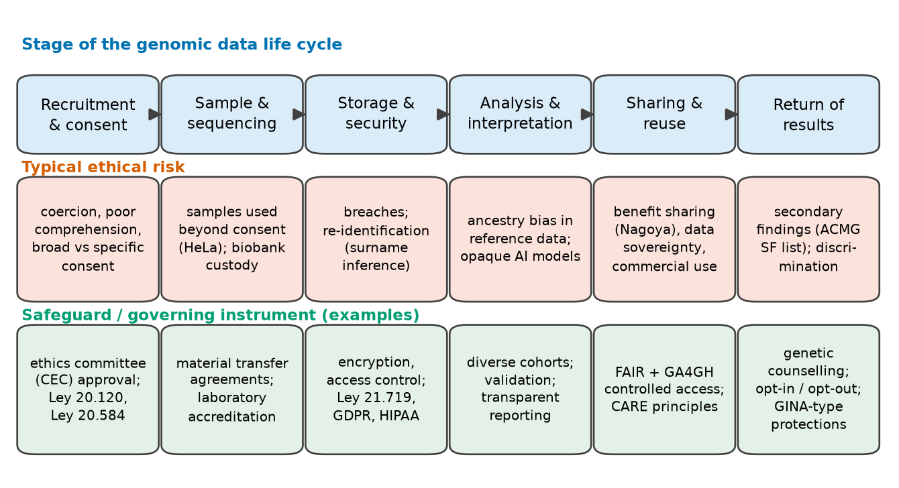
Instrumentos internacionales
Varios instrumentos internacionales fijan el marco dentro del cual operan las leyes nacionales (Tabla 7). Las declaraciones no son tratados vinculantes, pero expresan principios de consenso y orientan a legisladores, comités de ética y revistas.
| Instrumento | Año | Naturaleza | Puntos clave para los datos genómicos |
|---|---|---|---|
| Declaración Universal sobre el Genoma Humano y los Derechos Humanos de la UNESCO[W13] | 1997 | declaración | el genoma humano es, en sentido simbólico, el patrimonio de la humanidad; dignidad con independencia de las características genéticas; prohibición de la discriminación genética; consentimiento y confidencialidad; clonación reproductiva contraria a la dignidad humana |
| Declaración Internacional sobre los Datos Genéticos Humanos de la UNESCO[W14] | 2003 | declaración | principios para la recolección, el tratamiento, la utilización y la conservación de datos genéticos humanos y muestras biológicas; consentimiento; derecho a no saber; confidencialidad; flujos transfronterizos |
| Declaración Universal sobre Bioética y Derechos Humanos de la UNESCO[W15] | 2005 | declaración | principios bioéticos generales: autonomía, consentimiento, privacidad, igualdad, distribución de beneficios |
| Convenio de Oviedo (Consejo de Europa)[W16] | 1997 | tratado vinculante para los Estados europeos que lo ratificaron | primacía del ser humano; consentimiento; prohibición de la discriminación por razón del patrimonio genético; pruebas genéticas predictivas solo con fines de salud |
| Declaración de Helsinki (Asociación Médica Mundial)[87] | 1964; última revisión 2024 | código ético profesional | consentimiento informado; revisión por un comité de ética; protección de participantes vulnerables; responsabilidades sobre los datos y el material biológico en investigación |
| Reglamento General de Protección de Datos de la UE (GDPR)[W17] | 2016 (aplicable desde 2018) | reglamento vinculante en la Unión Europea | los datos genéticos y de salud son categorías especiales de datos personales con protección reforzada; bases legales para el tratamiento; derechos de acceso, rectificación, supresión y portabilidad; normas para transferencias fuera de la UE |
| HIPAA Privacy Rule (Estados Unidos)[W18] | 1996 (Privacy Rule emitida en 2000; cumplimiento desde 2003) | ley y reglamentos federales | protege la información de salud identificable en poder de prestadores de salud, planes de salud y sus asociados; normas para la desidentificación |
| GINA (Estados Unidos)[W9] | 2008 | ley federal | prohíbe la discriminación genética en seguros de salud y en el empleo |
Legislación chilena
Chile tiene un marco legal específico para la investigación en seres humanos y su genoma, para los derechos de los pacientes y para los datos personales, y fue el primer país en dar protección constitucional a la integridad mental en relación con la neurotecnología. El siguiente resumen se basa en los textos oficiales publicados por la Biblioteca del Congreso Nacional (BCN).
Ley 20.120 (2006), sobre la investigación científica en el ser humano, su genoma, y prohíbe la clonación humana. Su finalidad es proteger la vida de los seres humanos, su integridad física y psíquica, y su diversidad e identidad genética en relación con la investigación biomédica y sus aplicaciones clínicas. Prohíbe las prácticas eugenésicas (salvo la consejería genética), la clonación humana cualquiera sea su fin o técnica, y toda discriminación arbitraria basada en el patrimonio genético; declara que el conocimiento del genoma humano es patrimonio común de la humanidad, de modo que nadie puede reclamar su propiedad; exige consentimiento previo, expreso, libre e informado para la investigación; establece que la información genética de una persona es reservada; y exige que los proyectos de investigación sean revisados por un comité ético científico[W6]. Se ha presentado al Congreso un proyecto de ley para modificar esta ley con el fin de regular la edición del genoma humano (Boletín 15076-11).
Ley 20.584 (2012), que regula los derechos y deberes de las personas en relación con su atención en salud. Establece los derechos a un trato digno, a la información y a aceptar o rechazar tratamientos, y regula el registro clínico (ficha clínica): la información que contiene es reservada, los terceros que no estén directamente relacionados con la atención del paciente no tienen acceso a ella, y debe conservarse por al menos quince años. Establece también que toda persona debe ser informada y tiene derecho a elegir si participa en una investigación biomédica, en los términos de la Ley 20.120[W19].
Ley 19.628 (1999) y Ley 21.719 (2024), sobre datos personales. La Ley 19.628, sobre protección de la vida privada, clasificó los datos sobre la salud y las características físicas o morales como datos sensibles, pero carecía de una autoridad de control con facultades sancionatorias[W20]. La Ley 21.719, publicada el 13 de diciembre de 2024, reforma sustancialmente este marco: regula el tratamiento de datos personales con estándares cercanos al GDPR, fortalece los derechos de los titulares de datos (incluida la portabilidad de los datos), impone deberes de seguridad y de notificación de vulneraciones, y crea la Agencia de Protección de Datos Personales[W21]. Según su artículo primero transitorio, la reforma entra en vigor el 1 de diciembre de 2026. A octubre de 2026, un proyecto de ley para postergar en un año la entrada en vigor (Boletín 18.623-07) estaba en discusión en el Senado; mientras ese proyecto no se promulgue, la fecha fijada por la ley sigue siendo el 1 de diciembre de 2026[W22]. Conviene verificar el estado vigente en el sitio web de la BCN.
Ley 21.383 (2021), reforma constitucional sobre neuroderechos. Agregó un párrafo final al artículo 19, número 1, de la Constitución Política, que establece que el desarrollo científico y tecnológico estará al servicio de las personas y se llevará a cabo con respeto a la vida y a la integridad física y psíquica, que la ley regulará los requisitos, condiciones y restricciones para su utilización en las personas, y que deberá resguardar especialmente la actividad cerebral, así como la información proveniente de ella[W23]. Aunque se refiere a la neurotecnología y no a la genómica, expresa un principio (la protección de la información biológica más íntima de una persona) que es directamente relevante para la bioinformática.
Comités ético-científicos
En Chile, la investigación con seres humanos debe ser revisada y aprobada, antes de comenzar, por un Comité Ético Científico (CEC) acreditado por la autoridad sanitaria[W7]. El comité evalúa la justificación científica, el balance entre riesgos y beneficios, el proceso y los documentos de consentimiento, la protección de la confidencialidad y el manejo de muestras y datos. En los proyectos de bioinformática, los comités de ética suelen preguntar: ¿se obtuvieron los datos con un consentimiento compatible con el uso propuesto? ¿Son identificables? ¿Dónde se almacenarán y quién tendrá acceso a ellos? ¿Se devolverán resultados a los participantes? ¿Se transferirán datos al extranjero, por ejemplo a un servicio en la nube o a una base de datos internacional? Responder estas preguntas es parte del trabajo del bioinformático, no solo del clínico.
Error frecuente: los «datos públicos» no están libres de obligaciones
Descargar un conjunto de datos de un repositorio público no te libera de sus condiciones de uso. Los conjuntos de datos de acceso controlado requieren aprobación; incluso los conjuntos abiertos pueden tener licencias, requisitos de citación o prohibiciones de reidentificación; y combinar conjuntos de datos públicos puede crear información identificable que ninguno contenía por separado. Lee las condiciones de uso de los datos antes de empezar y regístralas junto con tu análisis.
Ideas clave
- La bioinformática sustenta la genómica clínica, la farmacogenómica, la genómica del cáncer, la vigilancia de patógenos, el descubrimiento de fármacos y la terapia génica.
- Los datos genéticos son permanentes, predictivos, familiares e identificadores; los genomas «desidentificados» pueden reidentificarse (inferencia de apellidos).
- Los modelos de consentimiento (específico, amplio, escalonado, dinámico), los hallazgos secundarios (ACMG SF v3.3, 84 genes), la discriminación genética (GINA; Ley 20.120), el sesgo de ancestría en los datos y la distribución de beneficios (Nagoya, CARE) son los principales temas éticos.
- Los principios FAIR y los estándares de GA4GH permiten compartir datos de forma responsable, a menudo bajo acceso controlado.
- Marco internacional: declaraciones de la UNESCO (1997, 2003, 2005), Convenio de Oviedo (1997), Declaración de Helsinki (revisión de 2024), GDPR, HIPAA, GINA.
- Chile: Ley 20.120 (investigación y genoma; prohibición de la clonación), Ley 20.584 (derechos de los pacientes, ficha clínica), Ley 19.628 → Ley 21.719 (datos personales; en vigor el 1 de diciembre de 2026 salvo postergación por ley), Ley 21.383 (neuroderechos), comités ético-científicos acreditados.
Caso transversalβ-globina, hemoglobina y anemia falciforme vistas a través de la Unidad 1
Cada unidad del curso aplica sus propios métodos al mismo sistema biológico: el gen humano de la β-globina, HBB, la hemoglobina que ayuda a formar y la anemia falciforme, causada por la variante HbS. La Unidad 1 aporta el vocabulario, la mirada desde la teoría de la información y el marco ético. Todos los valores que siguen se calcularon en esta unidad a partir de registros obtenidos el 18 de octubre de 2026.
1. El gen y sus productos (información genética → estructural)
En Ensembl release 116, el transcrito canónico de HBB, ENST00000335295 (HBB-201), se ubica en la hebra reversa del cromosoma 11 (GRCh38), entre las posiciones 5,225,464 y 5,227,071, y tiene tres exones: el exón 1 en 5,226,930–5,227,071, el exón 2 en 5,226,577–5,226,799 y el exón 3 en 5,225,464–5,225,726. Ensembl anota 19 transcritos para el gen, lo que ilustra la diversidad de transcritos de la Sección 1.2. El mRNA de RefSeq NM_000518.5 tiene 628 nt, de los cuales 444 forman la secuencia codificante: 148 codones, desde el codón de inicio ATG hasta el codón de término TAA, que codifican la β-globina de 147 residuos de UniProt P68871. Dos cadenas de β-globina se asocian con dos cadenas de α-globina (codificadas por HBA1 y HBA2) y cuatro grupos hemo para formar la hemoglobina A del adulto (α2β2).
2. Contenido de información
La CDS de HBB tiene una composición A 88, C 113, G 136, T 107, un contenido GC de 0.561 y una entropía de orden 0 de 1.983 bits por base, cercana al máximo de 2. La proteína tiene 3.95 bits por residuo (máximo 4.32). Por lo tanto, escribir la CDS requiere como máximo 444 × 2 = 888 bits, unos 111 bytes; la secuencia proteica completa, como máximo 147 × 4.32 ≈ 635 bits. Una variante de un solo nucleótido de la CDS es una de 3 × 444 = 1,332 sustituciones posibles, de modo que especificar cuál ocurrió requiere log21,332 = 10.4 bits. Diez bits, la información de diez lanzamientos de moneda, separan una β-globina sana del alelo de la anemia falciforme: un recordatorio notable de que el contenido de información y la importancia biológica son cosas distintas.
3. Modelos de secuencia
La CDS de HBB contiene solo 5 dinucleótidos CpG, una razón observado/esperado de 0.14, incluso menor que el promedio del cromosoma 11, de 0.29. El clasificador de Markov de la Sección 1.4 asigna al cuerpo del gen un puntaje de −0.353 bits por base (claramente «fondo»), y Ensembl no anota ninguna isla CpG en el locus de la β-globina. El gen usa el codón de leucina CTG para 15 de sus 18 leucinas, una preferencia que comparte con los genes humanos en general (Figura 15). Sus sitios de splicing siguen la regla GT–AG de la Figura 7: el intrón 1 comienza en c.92+1, la posición de las variantes clásicas IVS-I-1 de β-talasemia.
4. La variante de la anemia falciforme
El alelo HbS está catalogado en dbSNP como rs334, en chr11:5,227,002 (GRCh38) en la hebra directa (forward), donde la base de referencia es T; el alelo HbS es A en la hebra directa, lo que equivale a c.20A>T en la hebra codificante, y cambia el codón 7 de GAG (glutamato) a GTG (valina). Ensembl lo clasifica como variante de sentido erróneo (missense) con términos de significado clínico que incluyen «pathogenic» y «protective» (este último refleja la protección de los portadores frente a la malaria grave). En la numeración proteica el cambio es Glu6Val, porque la metionina iniciadora se elimina de la cadena madura. Su alta frecuencia en poblaciones históricamente expuestas a la malaria es el ejemplo clásico de selección balanceadora (Sección 1.1)[2][3].
5. Ética y regulación
La anemia falciforme plantea de forma concentrada las preguntas éticas de la Sección 1.5. El estudio de portadores revela información sobre los familiares y sobre las decisiones reproductivas, por lo que requiere consejería genética y consentimiento informado. El tamizaje neonatal (Unidad 2) detecta a los lactantes afectados antes de los síntomas, pero el resultado también revela la condición de portadores de los padres. Como HbS es frecuente en grupos ancestrales específicos, las políticas de tamizaje corren el riesgo tanto de subdiagnóstico (si ignoran a las poblaciones minoritarias) como de estigmatización (si las señalan). Las terapias de edición genómica para la anemia falciforme[85] plantean preguntas de acceso y costo en los países donde la enfermedad es más común. En Chile, una investigación que involucre estos datos requeriría la aprobación de un comité ético científico acreditado y el consentimiento informado por escrito (Ley 20.120), y el manejo de datos genéticos identificables está sujeto a la legislación de datos personales (Ley 19.628, reformada por la Ley 21.719).
Puente: el caso transversal en las próximas unidades
En la Unidad 2 verás cómo se detecta la variante HbS mediante secuenciación y en el tamizaje neonatal; en la Unidad 3 leerás línea por línea los registros de GenBank y UniProt de HBB; en la Unidad 4A alinearás la β-globina con otras globinas y buscarás en bases de datos con BLAST; en la Unidad 4B construirás un alineamiento múltiple y una filogenia de la familia de las globinas; y en la Unidad 5 examinarás las estructuras tridimensionales de las hemoglobinas A y S y la posición de Val6.
Taller prácticoInformación y modelos de los genes de globina: de la base de datos a un clasificador
Duración 100–120 minIndividual o en parejasNavegador web + Google Colab
Este taller pone en práctica las Secciones 1.1, 1.3 y 1.4 sobre el caso transversal. Obtendrás registros reales de NCBI, UniProt y Ensembl, los interrogarás con comandos Unix y Python, cuantificarás su contenido de información y usarás un modelo de Markov para clasificar regiones genómicas. Se entregan los resultados esperados para que puedas verificar tu trabajo; si tus números difieren, averigua por qué antes de continuar (las diferentes versiones de los registros son una causa frecuente, así que anota siempre el número de acceso con su número de versión).
Tareas
- Obtener los registros (10 min). En la base de datos Nucleotide de NCBI, busca
NM_000518.5. Anota la longitud del mRNA, las coordenadas de la CDS en la tabla de features y el identificador de la proteína. Esperado: 628 bp; CDS 51..494; proteína NP_000509.1. Repite para la α-globina,NM_000558.5, y anota los mismos datos (esperado: 577 bp; CDS de 429 nt). - Shell en Colab (15 min). Abre un nuevo notebook de Colab. Descarga ambos mRNA en formato FASTA con
!wget(ver el recuadro Pruébalo de la Sección 1.3). Usando solo comandos de shell, obtén: la longitud de cada mRNA; el número de G más C; el número de apariciones deCGtras eliminar los saltos de línea. Escribe cada pipeline en tu informe. - Entropía y composición (15 min). Ejecuta el fragmento de código de entropía de la Sección 1.1 para ambos números de acceso. Esperado para la CDS de HBB: 1.9828 bits/base y GC 0.561; para la CDS de HBA1: 1.9287 bits/base y GC 0.648. Explica por qué la secuencia más rica en GC tiene menor entropía.
- Dinucleótidos (15 min). Adapta el fragmento de código de k-meros de la Sección 1.3 para calcular la razón CpG observado/esperado de ambas CDS. Esperado: 0.14 para HBB; la CDS de HBA1 contiene 36 CpG. ¿Qué gen está más empobrecido en CpG? El locus de la α-globina se ubica en una región rica en GC y densa en genes del cromosoma 16, mientras que la β-globina se ubica en una región rica en AT del cromosoma 11; relaciona esto con tu resultado.
- Un clasificador de Markov (20 min). Ejecuta el fragmento de código de islas CpG de la Sección 1.4 y reproduce los dos puntajes. Luego elige otras dos regiones de 2 kb en el navegador genómico de Ensembl: una que se superponga con la isla CpG del promotor de un gen de tu elección (activa el track "CpG islands") y otra en una región intergénica. Calcula sus puntajes e informa si el clasificador concuerda con la anotación.
- La variante de la anemia falciforme (10 min). Ejecuta el fragmento de código de rs334 de la Sección 1.3 y busca rs334 en las páginas web de dbSNP de Ensembl o de NCBI. Explica, con un dibujo de ambas hebras de DNA, por qué el alelo A de la hebra directa corresponde al codón GTG de la hebra codificante.
- Información de proteínas (10 min). Descarga UniProt P68871 y P42858 en formato FASTA desde
https://rest.uniprot.org/uniprotkb/P68871.fasta. Calcula la entropía de orden 0 de cada proteína y de los primeros 90 residuos de la huntingtina. Esperado: 3.95, 4.10 y 2.73 bits/residuo. Localiza el tramo de poliglutamina. - Minicaso de ética (15 min). Un grupo de investigación de una universidad chilena quiere crear un biobanco de DNA de familias con anemia falciforme y compartir las secuencias genómicas con un consorcio internacional. En no más de 300 palabras: enumera las aprobaciones y documentos requeridos, la información que debe contener el formulario de consentimiento (incluidos los hallazgos secundarios y la transferencia internacional) y las leyes chilenas que se aplican.
Entregable y evaluación
Entrega (i) el notebook de Colab, compartido como enlace o descargado como .ipynb, con todas las celdas ejecutadas; y (ii) un informe de dos páginas como máximo que contenga una tabla con los valores obtenidos en las tareas 1, 3, 4, 5 y 7 (con las versiones de los números de acceso), los pipelines de shell de la tarea 2, el dibujo de las hebras de la tarea 6 y el texto de la tarea 8. Criterios de evaluación: exactitud de los valores (40%), reproducibilidad del notebook (20%), calidad de la interpretación (25%) y el minicaso de ética (15%).
Error frecuente: las sesiones de Colab son temporales
Los archivos creados en una sesión de Colab desaparecen cuando la sesión termina. Guarda el notebook en Google Drive (File → Save a copy in Drive) y descarga los resultados que necesites. No subas datos personales o clínicos identificables a un notebook en una nube pública: los datos de este taller son secuencias de referencia públicas.
AutoevaluaciónPreguntas de autoevaluación
Responde cada pregunta por escrito antes de abrir la respuesta desarrollada. Las preguntas marcadas (N) son numéricas, (C) conceptuales y (A) aplicadas o de interpretación.
1. (C) Define la bioinformática y nombra sus tres actividades principales. ¿Quién acuñó el término y con qué significado original?
La bioinformática desarrolla y aplica métodos computacionales, matemáticos y estadísticos para adquirir, almacenar, analizar e interpretar datos biológicos, principalmente datos moleculares (DNA, RNA, proteínas). Sus tres actividades son la gestión de datos (bases de datos, formatos, curación, vinculación), el desarrollo de métodos (algoritmos y modelos) y el análisis con interpretación (responder preguntas biológicas y clínicas). Paulien Hogeweg y Ben Hesper acuñaron bioinformatica hacia 1970 para referirse al estudio de los procesos informáticos en los sistemas bióticos, es decir, de cómo los sistemas vivos almacenan y procesan información.
2. (C) Explica el «paradigma central de la bioinformática» con el ejemplo de la anemia falciforme, y da una razón por la que es difícil predecir el último nivel a partir del primero.
La información genética (un cambio A→T en el codón 7 de HBB, GAG→GTG) determina la información estructural (valina en lugar de glutamato en el residuo 6 de la β-globina), que determina la información bioquímica (polimerización de la HbS desoxigenada a través de la valina hidrofóbica), que a su vez determina el fenotipo (eritrocitos falciformes, hemólisis, vasooclusión, dolor). La predicción es difícil porque cada flecha es incierta y está modulada por otros factores: transcritos alternativos, modificaciones postraduccionales, otros genes (por ejemplo, los que controlan la hemoglobina fetal), el ambiente y el tratamiento. La incertidumbre se acumula a lo largo de la cadena.
3. (C) ¿En qué sentido la selección natural es «un círculo virtuoso», y por qué el alelo HbS es frecuente en algunas poblaciones a pesar de causar enfermedad?
El genotipo produce el fenotipo; el fenotipo afecta la supervivencia y la reproducción; la reproducción determina qué genotipos se transmiten. El círculo aumenta la adaptación al ambiente actual, pero no optimiza la salud individual. Los homocigotos HbS tienen anemia falciforme, pero los portadores heterocigotos están protegidos frente a la malaria grave por falciparum (Allison, 1954). Donde la malaria es endémica, la ventaja de los portadores mantiene el alelo en alta frecuencia: selección balanceadora por ventaja del heterocigoto.
4. (C) ¿Qué antigüedad tiene Homo sapiens según los fósiles de Jebel Irhoud, y por qué es esto relevante para la genómica?
Unos 300,000 años: los fósiles de Jebel Irhoud se dataron en aproximadamente 315 ± 34 mil años (Richter et al., 2017) y se atribuyeron al linaje temprano de H. sapiens (Hublin et al., 2017). En términos genómicos, este es un lapso corto (del orden de 104 generaciones), por lo que los seres humanos comparten la mayor parte de su secuencia de DNA y difieren en un número relativamente pequeño de posiciones variantes, que son las que la bioinformática clínica debe identificar e interpretar.
5. (N) Calcula la entropía de Shannon de una secuencia de DNA con frecuencias de bases A = 0.5, C = 0.25, G = 0.125, T = 0.125. Compárala con el máximo.
H = −[0.5 log20.5 + 0.25 log20.25 + 2 × 0.125 log20.125] = −[0.5(−1) + 0.25(−2) + 0.25(−3)] = 0.5 + 0.5 + 0.75 = 1.75 bits por base. El máximo para el DNA es log24 = 2 bits, que se alcanza cuando todas las bases tienen frecuencia 0.25. Por lo tanto, la secuencia es algo predecible: en promedio, 0.25 bits por base menos incierta que un DNA aleatorio.
6. (N) ¿Cuál es la entropía máxima por residuo de una secuencia proteica? ¿Por qué es menor la entropía de la composición aminoacídica humana promedio?
log220 = 4.32 bits por residuo. La composición de las proteínas humanas revisadas da 4.18 bits porque los aminoácidos no son igualmente frecuentes: la leucina representa alrededor del 10% de los residuos, mientras que el triptófano, la cisteína y la metionina son escasos. Cualquier desviación respecto de frecuencias uniformes reduce la entropía.
7. (A) La entropía de orden 0 del genoma de E. coli es prácticamente 2 bits por base. ¿Significa esto que el genoma no contiene información? Explica.
No. La entropía de orden 0 depende solo de las frecuencias de las bases, que son casi iguales en E. coli. Ignora el orden de las bases, que es donde reside la información biológica: genes, codones, sitios reguladores. Las medidas que consideran el contexto (entropía condicional, información mutua en múltiplos de 3, contenido de información de sitios alineados) revelan una estructura que la entropía de orden 0 no puede ver. Una alta entropía de composición es compatible con secuencias muy específicas, del mismo modo que un texto en un idioma usa todas las letras con frecuencia y aun así dista mucho de ser aleatorio.
8. (A) ¿Por qué la entropía condicional de la CDS de HBB, de 444 nt, cae casi a cero en el orden de Markov 8, y qué regla general ilustra esto?
Con k = 8, la estimación requiere las frecuencias de 49 = 262,144 posibles 9-meros, pero la secuencia contiene como máximo 436 de ellos, la mayoría vistos una sola vez. Cada contexto observado va seguido entonces de una única base, lo que hace que la base siguiente parezca perfectamente predecible. La caída es un artefacto de muestreo. La regla general es que la cantidad de datos debe superar con creces el número de parámetros estimados: longitud de la secuencia ≫ 4k+1.
9. (N) Calcula la entropía relativa D(P‖Q) de una posición donde P = (A 0.7, C 0.1, G 0.1, T 0.1) frente a un fondo uniforme Q = 0.25 para cada base. ¿Cómo se compara con 2 − H(P)?
D = 0.7 log2(0.7/0.25) + 3 × 0.1 log2(0.1/0.25) = 0.7 × 1.485 + 0.3 × (−1.322) = 1.040 − 0.397 = 0.643 bits. H(P) = −[0.7 log20.7 + 3 × 0.1 log20.1] = 0.360 + 0.997 = 1.357 bits, de modo que 2 − H = 0.643 bits. Son idénticas, porque con un fondo uniforme la entropía relativa es igual a log24 − H. Con un fondo no uniforme difieren, y la entropía relativa es la medida correcta del contenido de información.
10. (C) Da dos usos de la información mutua en el análisis de secuencias.
(1) La información mutua entre bases a distancia d revela la estructura de período 3 del DNA codificante de proteínas (picos en d = 3, 6, 9…), lo que ayuda a reconocer regiones codificantes. (2) En alineamientos de RNA estructurales, la información mutua entre dos columnas detecta la covariación (mutaciones compensatorias que preservan los pares de bases), lo que revela la estructura secundaria; extendida a las proteínas, la covariación sugiere contactos entre residuos.
11. (A) En el logo del sitio de splicing donante de la Figura 7, las posiciones +1 y +2 aportan casi 2 bits cada una, mientras que la posición +6 aporta poco. ¿Qué predice esto sobre el efecto de las variantes en esas posiciones?
Una posición con casi 2 bits es prácticamente invariante: casi todos los sitios funcionales tienen G en +1 y T en +2, de modo que una variante allí tiene una probabilidad muy alta de abolir el reconocimiento y causar un splicing aberrante (omisión de exón, retención de intrón o uso de un sitio críptico). Una posición de baja información tolera varias bases, por lo que las variantes allí tienen, en promedio, efectos menores. El contenido de información es así un primer indicador cuantitativo del impacto de una variante, usado, por ejemplo, cuando las variantes de HBB c.92+1 se clasifican como causas de β0-talasemia.
12. (N) Un factor de transcripción tiene 50 sitios de unión en un genoma bacteriano de 4.64 × 106 bp. Calcula Rfrequency e interprétalo en el marco de Schneider.
Contar ambas hebras es un refinamiento; aquí usa las posiciones G = 4.64 × 106. Rfrequency = log2(G/γ) = log2(4.64 × 106/50) = log2(92,800) ≈ 16.5 bits. Schneider observó que Rsequence, la información en los sitios alineados, tiende a ser cercana a Rfrequency: se predeciría que estos sitios contienen unos 16–17 bits, equivalentes a aproximadamente ocho bases totalmente conservadas distribuidas a lo largo del sitio.
13. (N) ¿Cuánto almacenamiento necesita un genoma humano haploide a 2 bits por base? ¿Y como texto, con un byte por base?
Con la longitud del golden path de GRCh38, de 3,099,750,718 bases: a 2 bits por base se obtienen 3,099,750,718 × 2 / 8 ≈ 775 MB; con un byte por base, ≈ 3.1 GB. Un genoma diploide duplica ambos valores. Los datos de secuenciación en bruto a una cobertura de 30× con puntajes de calidad son unos dos órdenes de magnitud mayores.
14. (A) ¿Por qué xz comprimió el DNA humano a 1.84 bits por base, pero no logró bajar el DNA de E. coli de 2 bits?
La compresión explota la redundancia. El DNA humano contiene muchos elementos repetidos (repeticiones derivadas de transposones, repeticiones en tándem, duplicaciones) que un compresor basado en diccionario puede codificar como referencias a apariciones anteriores. Un genoma bacteriano es denso en genes codificantes de proteínas únicos y tiene poca repetición, de modo que un compresor de uso general no puede superar la codificación trivial de 2 bits (y se ve penalizado por su sobrecarga). Los compresores especializados de DNA que modelan los complementos reversos y el contexto estadístico obtienen mejores resultados en ambos.
15. (C) «Los seres humanos tienen unos 100,000 genes.» Corrige esta afirmación con datos actuales y explica por qué el número de proteínas es mayor que el número de genes.
La cifra de 100,000 es una estimación anterior al genoma. Ensembl release 116 (GENCODE 50) anota 20,107 genes codificantes de proteínas en GRCh38, unos 20,000, entre 78,733 genes de todos los biotipos. El número de moléculas proteicas distintas es mucho mayor porque cada gen puede producir varios transcritos e isoformas (promotores, splicing y poliadenilación alternativos), y cada proteína puede llevar muchas combinaciones de modificaciones postraduccionales; las formas moleculares resultantes se llaman proteoformas. UniProt registra 20,431 entradas humanas revisadas y 42,562 secuencias si se incluyen las isoformas curadas; el número de proteoformas podría llegar a millones.
16. (C) Distingue la secuenciación de amplicones del rRNA 16S de la metagenómica shotgun.
La secuenciación de amplicones amplifica por PCR una región variable del gen del RNA ribosomal 16S de todas las bacterias de una muestra, usando cebadores en regiones flanqueantes conservadas; es barata y entrega un censo taxonómico, por lo general hasta nivel de género, pero ninguna información directa sobre genes funcionales, y está afectada por el sesgo de los cebadores. La metagenómica shotgun secuencia todo el DNA de la muestra; es más cara y computacionalmente más exigente, pero identifica los organismos con mayor resolución (incluidos los no bacterianos) y revela los genes funcionales presentes.
17. (A) A un paciente con genotipo CYP2C19 *2/*2 se le colocará un stent coronario. ¿Qué predice la farmacogenómica sobre el clopidogrel y qué recomienda la guía CPIC?
CYP2C19 *2 es un alelo de pérdida de función; *2/*2 corresponde a un metabolizador lento. El clopidogrel es un profármaco activado principalmente por CYP2C19, de modo que este paciente formaría poco metabolito activo, lograría una menor inhibición plaquetaria y tendría mayor riesgo de eventos trombóticos (Mega et al., 2009). Para los pacientes sometidos a intervención coronaria percutánea o con síndromes coronarios agudos, la guía CPIC de 2022 recomienda un antiplaquetario alternativo como prasugrel o ticagrelor, si no está contraindicado. (La prescripción concreta es una decisión clínica.)
18. (A) Escribe un único pipeline Unix que cuente las secuencias de un archivo FASTA, y otro que imprima el número total de bases. Explica cada componente.
grep -c ">" file.fasta cuenta las líneas que contienen >, es decir, los encabezados, uno por secuencia. grep -v ">" file.fasta | tr -d "\n" | wc -c: grep -v conserva solo las líneas que no son encabezados (líneas de secuencia), tr -d "\n" elimina los saltos de línea y wc -c cuenta los caracteres restantes. (Un carácter de encabezado > dentro de una descripción no se contaría dos veces, porque grep -c cuenta líneas, no apariciones.)
19. (C) ¿Por qué los entornos conda y los contenedores son importantes para una bioinformática reproducible? ¿Qué agrega un gestor de flujos de trabajo?
Los resultados dependen de las versiones del software. Un entorno conda fija las versiones del lenguaje, las bibliotecas y las herramientas que usa un proyecto, aislado de otros proyectos; un contenedor empaqueta el programa con todo su sistema operativo de espacio de usuario para que se ejecute de forma idéntica en cualquier máquina. Un gestor de flujos de trabajo (Snakemake, Nextflow, Galaxy) formaliza la cadena de pasos, sus entradas y salidas, los ejecuta en el orden correcto y en paralelo, vuelve a ejecutar solo lo que cambió y registra lo que se hizo, idealmente con un entorno o contenedor declarado para cada paso.
20. (N) Con un modelo i.i.d. y frecuencias de bases iguales, ¿cuántas veces esperarías encontrar el 6-mero GAATTC en una secuencia aleatoria de 4.64 Mb? Compáralo con las 646 apariciones observadas en E. coli.
Probabilidad de un 6-mero dado = (1/4)6 = 1/4096. Conteo esperado ≈ (4,641,652 − 5)/4096 ≈ 1,133. Con las frecuencias de bases reales de E. coli, el valor esperado es 1097. Las 646 observadas son alrededor de 0.6 del valor esperado, de modo que los sitios EcoRI están subrepresentados, lo que concuerda con el empobrecimiento general de sitios de restricción palindrómicos en las bacterias. La conclusión depende del modelo nulo; un modelo de Markov que tenga en cuenta las frecuencias de dinucleótidos daría un valor esperado algo distinto.
21. (C) Explica la causa química del empobrecimiento de CpG en el DNA de vertebrados y por qué las islas CpG son excepciones.
La mayoría de las citosinas de los CpG de vertebrados están metiladas a 5-metilcitosina. La desaminación espontánea de la 5-metilcitosina produce timina, lo que crea un desapareamiento T·G que no siempre se repara a C·G; a lo largo de la evolución, CpG muta a TpG (y a CpA en la otra hebra). El CpG se empobrece (observado/esperado ≈ 0.29 en nuestra muestra del cromosoma 11) y TpG y CpA se enriquecen. Las islas CpG, a menudo en promotores, permanecen no metiladas, por lo que sus CpG no se pierden por este mecanismo y conservan frecuencias cercanas a las esperadas.
22. (A) El clasificador de Markov de CpG logró un AUC = 0.998 en su conjunto de prueba. Enumera tres razones por las que su desempeño en un barrido del genoma completo sería peor.
(1) La prueba comparó islas completas con ventanas de fondo elegidas lejos de las islas; los barridos reales deben clasificar ventanas cercanas a los bordes de las islas y definir los límites, algo que el modelo no puede hacer con precisión. (2) El genoma contiene secuencias ricas en CpG que no son islas (algunas repeticiones, exones codificantes ricos en GC) que aumentan los falsos positivos, y con miles de millones de ventanas incluso una tasa pequeña de falsos positivos produce muchos errores. (3) La «verdad» es una anotación producida con criterios de secuencia, de modo que la concordancia puede reflejar en parte definiciones compartidas; además, los datos de entrenamiento y de prueba provinieron de una única región de 10 Mb, que puede no representar al genoma completo. Un modelo oculto de Markov es más adecuado para la segmentación.
23. (A) Un grupo de investigación publica genomas completos «anónimos» de 200 voluntarios junto con su edad y región de residencia. ¿Qué riesgo crea esto y cómo deberían haberse compartido los datos?
Los genomas son identificadores. Las repeticiones cortas en tándem del cromosoma Y pueden compararse con bases de datos genealógicas para inferir apellidos, que combinados con la edad y la región pueden identificar a las personas y a sus familiares (Gymrek et al., 2013); también quedan expuestos familiares que nunca dieron su consentimiento. Los datos deberían haberse depositado bajo acceso controlado, con un comité de acceso a datos, un acuerdo de uso de datos que prohíba la reidentificación, metadatos mínimos y un consentimiento que cubriera explícitamente esta forma de compartirlos; las estadísticas resumidas podrían publicarse abiertamente. En Chile, el proyecto también necesitaría la aprobación de un comité de ética acreditado y el cumplimiento de la legislación de datos personales.
24. (C) Resume las principales disposiciones de la Ley 20.120 y de la Ley 21.719 relevantes para un proyecto de genómica en Chile, e indica la fecha de entrada en vigor de la Ley 21.719.
La Ley 20.120 (2006) protege la vida, la integridad y la diversidad e identidad genética de los seres humanos en la investigación biomédica; prohíbe las prácticas eugenésicas (salvo la consejería genética), la clonación humana y la discriminación arbitraria basada en el patrimonio genético; declara el conocimiento del genoma humano patrimonio común de la humanidad; exige consentimiento previo, expreso, libre e informado; hace reservada la información genética de una persona; y exige la revisión por un comité ético científico acreditado (reglamento modificado en 2013). La Ley 21.719, publicada el 13 de diciembre de 2024, reforma el marco de datos personales de la Ley 19.628 con estándares similares al GDPR, fortalece los derechos de los titulares, incluida la portabilidad, impone deberes de seguridad y de notificación de vulneraciones, y crea la Agencia de Protección de Datos Personales. Su artículo primero transitorio fija la entrada en vigor el 1 de diciembre de 2026; en octubre de 2026 había en el Senado un proyecto de postergación, por lo que el estado vigente debe verificarse en bcn.cl. (Esto no constituye asesoría legal.)
25. (C) ¿Qué son los principios FAIR, y significa FAIR que los datos genómicos deban ser abiertos?
Findable, localizables (identificadores persistentes, metadatos ricos, indexados), Accessible, accesibles (recuperables mediante protocolos estándar, con autenticación y autorización claras cuando se necesitan), Interoperable, interoperables (formatos y vocabularios estándar), Reusable, reutilizables (licencias, procedencia y estándares comunitarios claros). FAIR no significa abierto: los datos humanos sensibles pueden ser FAIR bajo acceso controlado, siempre que su existencia, sus metadatos y sus condiciones de acceso sean claros. Los estándares de GA4GH implementan FAIR para los datos genómicos entre instituciones.
Apéndice AGlosario
Los términos se definen tal como se usan en este curso; entre corchetes se indica el término equivalente en inglés, para facilitar la relación con la edición en inglés del curso y con el programa oficial.
- Alelo [allele]
- Cada una de las formas alternativas de una secuencia en una posición genómica o gen dados, por ejemplo los alelos A (HbA) y T (HbS) de HBB c.20.
- Alfabeto [alphabet]
- El conjunto finito de símbolos con que se construyen las secuencias: {A, C, G, T} para el DNA, veinte aminoácidos para las proteínas.
- API [application programming interface, interfaz de programación de aplicaciones]
- Una forma definida en que los programas solicitan datos o servicios a otro sistema, por ejemplo la API REST de Ensembl, que devuelve datos en respuesta a una URL.
- Selección balanceadora [balancing selection]
- Selección natural que mantiene dos o más alelos en una población, por ejemplo mediante la ventaja del heterocigoto, como ocurre con HbS y la malaria.
- Bit [bit]
- Unidad de información: la información necesaria para decidir entre dos alternativas igualmente probables; −log2p bits para un evento de probabilidad p.
- Bioconda [Bioconda]
- Un canal del gestor de paquetes conda que distribuye software bioinformático junto con sus dependencias.
- Transcrito canónico [canonical transcript]
- El transcrito que una base de datos (por ejemplo Ensembl) elige para representar un gen por defecto; para HBB es ENST00000335295.
- Dogma central [central dogma]
- Principio de Crick según el cual la información de secuencia fluye de ácido nucleico a ácido nucleico y de ácido nucleico a proteína, pero no de la proteína de vuelta al ácido nucleico.
- Uso de codones [codon usage]
- Las frecuencias con que se usan los codones sinónimos en un gen o genoma; a menudo se expresa como uso relativo de codones sinónimos (RSCU).
- Entropía condicional [conditional entropy]
- La incertidumbre promedio que queda sobre una variable cuando se conoce otra (por ejemplo, las bases precedentes).
- Contenedor [container]
- Un entorno de software empaquetado (Docker, Apptainer) que incluye un programa y sus dependencias del sistema operativo, de modo que se ejecute de forma idéntica en distintos computadores.
- Acceso controlado [controlled access]
- Un modelo de intercambio de datos en el que los investigadores deben postular ante un comité de acceso a datos y aceptar condiciones de uso antes de recibir datos sensibles.
- Isla CpG [CpG island]
- Una región de unos cientos a unos miles de bases con alto contenido GC y una frecuencia de CpG cercana a la esperada, por lo general no metilada y a menudo ubicada en promotores.
- Entropía de Shannon [entropy (Shannon)]
- La información promedio por símbolo de una fuente, H = −Σ pi log2 pi; máxima (log2K) cuando los K símbolos son igualmente probables.
- Exón / intrón [exon / intron]
- Segmentos de un gen que se conservan en el RNA maduro (exones) o se eliminan de él (intrones) mediante el splicing.
- Principios FAIR [FAIR principles]
- Directrices según las cuales los datos deben ser Findable, Accessible, Interoperable y Reusable (localizables, accesibles, interoperables y reutilizables).
- Formato FASTA [FASTA format]
- Formato de texto para secuencias: una línea de encabezado que comienza con
>seguida de líneas de secuencia. - Formato FASTQ [FASTQ format]
- Formato de texto para reads de secuenciación con cuatro líneas por read: identificador, secuencia, separador y cadena de calidad por base.
- Contenido GC; sesgo GC [GC content and GC skew]
- La fracción de bases que son G o C; el sesgo (G − C)/(G + C) mide la asimetría entre hebras y cambia de signo en los orígenes y términos de replicación bacterianos.
- Genoma / genómica [genome / genomics]
- El DNA hereditario completo de un organismo; la disciplina que estudia los genomas como un todo.
- Modelo oculto de Markov [hidden Markov model, HMM]
- Un modelo probabilístico con estados no observados que emiten símbolos y pasan de uno a otro con probabilidades dadas; se usa para la predicción de genes y para familias de proteínas.
- Modelo i.i.d. o de orden cero [i.i.d. model]
- Un modelo en el que cada posición de una secuencia es independiente de las demás y se extrae de la misma distribución.
- Contenido de información (Rsequence) [information content]
- La información en un conjunto de sitios alineados: la suma, sobre las posiciones, de 2 − H(l) (o de la entropía relativa frente al fondo).
- Consentimiento informado [informed consent]
- Acuerdo voluntario de una persona competente para participar en una investigación o un procedimiento tras recibir información adecuada; exigido en Chile por la Ley 20.120.
- Códigos IUPAC [IUPAC codes]
- Códigos estándar de una letra para bases y posiciones ambiguas (R = A/G, Y = C/T, N = cualquiera…).
- K-mero [k-mer]
- Una subcadena de longitud k; un espectro de k-meros es la tabla de conteos de todos los k-meros de una secuencia.
- Región de baja complejidad [low-complexity region]
- Un segmento de secuencia con una composición fuertemente sesgada (homopolímeros, repeticiones cortas), detectado por su baja entropía local y por lo general enmascarado en las búsquedas en bases de datos.
- Cadena de Markov de orden k [Markov chain of order k]
- Un modelo en el que la probabilidad de cada símbolo depende solo de los k símbolos precedentes.
- Microbioma [microbiome]
- La comunidad de microorganismos que habita un hábitat, como el intestino humano, o el conjunto de sus genomas.
- Información mutua [mutual information]
- La información que una variable aporta sobre otra, I(X;Y) = H(X) + H(Y) − H(X,Y); es cero para variables independientes.
- Farmacogenómica [pharmacogenomics]
- El estudio de cómo la variación genética afecta la respuesta a los fármacos, por ejemplo el genotipo CYP2C19 y el clopidogrel.
- Fenotipo [phenotype]
- Las características observables de un organismo, producidas por su genotipo en interacción con el ambiente; en medicina, los signos y síntomas.
- Tubería [pipe]
- El operador Unix
|, que envía la salida de un comando a la entrada del siguiente. - Proteoma / proteómica [proteome / proteomics]
- El conjunto de proteínas de una célula u organismo; la disciplina que lo estudia, principalmente mediante espectrometría de masas.
- Proteoforma [proteoform]
- Una forma molecular específica de una proteína, definida por su secuencia exacta y por su combinación de modificaciones postraduccionales.
- Genoma de referencia [reference genome]
- Una secuencia genómica ensamblada que se usa como sistema común de coordenadas (para los seres humanos, GRCh38 o T2T-CHM13).
- Entropía relativa [relative entropy, KL divergence]
- D(P‖Q) = Σ pi log2(pi/qi), una medida no negativa de cuánto difiere una distribución de un fondo.
- Complemento reverso [reverse complement]
- La secuencia de la hebra opuesta del DNA, leída 5′→3′: se complementa cada base y se invierte el orden.
- Hallazgo secundario [secondary finding]
- Un resultado clínicamente significativo buscado deliberadamente en genes no relacionados con el motivo del estudio (lista ACMG SF); un hallazgo incidental es uno encontrado por azar.
- Logo de secuencia [sequence logo]
- Una representación gráfica de sitios alineados en la que la altura de cada columna es su contenido de información y las alturas de las letras son proporcionales a sus frecuencias.
- Intérprete de comandos [shell]
- El programa (bash, zsh) que lee los comandos escritos en una terminal y pide al sistema operativo que los ejecute.
- Sitio de splicing [splice site]
- El límite entre un exón y un intrón: donante (5′, por lo general GT al inicio del intrón) o aceptor (3′, por lo general AG al final).
- Gestor de flujos de trabajo [workflow manager]
- Software (Snakemake, Nextflow, Galaxy) que ejecuta análisis de varios pasos a partir de reglas, entradas y salidas declaradas, de forma reproducible.
Apéndice BReferencias y lecturas complementarias
Literatura primaria
Todos los DOI se verificaron con la API de Crossref el 18 de octubre de 2026; los datos bibliográficos se generaron a partir de los registros de Crossref.
- Hogeweg P. The Roots of Bioinformatics in Theoretical Biology. PLoS Comput Biol. 2011;7(3):e1002021. doi:10.1371/journal.pcbi.1002021
- Allison AC. Protection Afforded by Sickle-cell Trait Against Subtertian Malarial Infection. BMJ. 1954;1(4857):290–294. doi:10.1136/bmj.1.4857.290
- Piel FB, Patil AP, Howes RE, et al. Global distribution of the sickle cell gene and geographical confirmation of the malaria hypothesis. Nat Commun. 2010;1(1):104. doi:10.1038/ncomms1104
- Hublin JJ, Ben-Ncer A, Bailey SE, et al. New fossils from Jebel Irhoud, Morocco and the pan-African origin of Homo sapiens. Nature. 2017;546(7657):289–292. doi:10.1038/nature22336
- Richter D, Grün R, Joannes-Boyau R, et al. The age of the hominin fossils from Jebel Irhoud, Morocco, and the origins of the Middle Stone Age. Nature. 2017;546(7657):293–296. doi:10.1038/nature22335
- Crick F. Central Dogma of Molecular Biology. Nature. 1970;227(5258):561–563. doi:10.1038/227561a0
- Pauling L, Itano HA, Singer SJ, et al. Sickle Cell Anemia, a Molecular Disease. Science. 1949;110(2865):543–548. doi:10.1126/science.110.2865.543
- Ingram VM. Gene Mutations in Human Hæmoglobin: the Chemical Difference Between Normal and Sickle Cell Hæmoglobin. Nature. 1957;180(4581):326–328. doi:10.1038/180326a0
- Kato GJ, Piel FB, Reid CD, et al. Sickle cell disease. Nat Rev Dis Primers. 2018;4(1):18010. doi:10.1038/nrdp.2018.10
- Watson JD, Crick FHC. Molecular Structure of Nucleic Acids: A Structure for Deoxyribose Nucleic Acid. Nature. 1953;171(4356):737–738. doi:10.1038/171737a0
- Strasser BJ. Collecting, Comparing, and Computing Sequences: The Making of Margaret O. Dayhoff’s Atlas of Protein Sequence and Structure, 1954–1965. J Hist Biol. 2010;43(4):623–660. doi:10.1007/s10739-009-9221-0
- Needleman SB, Wunsch CD. A general method applicable to the search for similarities in the amino acid sequence of two proteins. Journal of Molecular Biology. 1970;48(3):443–453. doi:10.1016/0022-2836(70)90057-4
- Protein Data Bank. Crystallography: Protein Data Bank. Nature New Biology. 1971;233(42):223–223. doi:10.1038/newbio233223b0
- Berman HM. The Protein Data Bank. Nucleic Acids Research. 2000;28(1):235–242. doi:10.1093/nar/28.1.235
- Sanger F, Nicklen S, Coulson AR. DNA sequencing with chain-terminating inhibitors. Proc. Natl. Acad. Sci. U.S.A. 1977;74(12):5463–5467. doi:10.1073/pnas.74.12.5463
- Bilofsky HS, Burks C, Fickett JW, et al. The GenBank genetic sequence databank. Nucl Acids Res. 1986;14(1):1–4. doi:10.1093/nar/14.1.1
- Arita M, Karsch-Mizrachi I, Cochrane G. The international nucleotide sequence database collaboration. Nucleic Acids Research. 2021;49(D1):D121–D124. doi:10.1093/nar/gkaa967
- Lipman DJ, Pearson WR. Rapid and Sensitive Protein Similarity Searches. Science. 1985;227(4693):1435–1441. doi:10.1126/science.2983426
- Pearson WR, Lipman DJ. Improved tools for biological sequence comparison. Proc. Natl. Acad. Sci. U.S.A. 1988;85(8):2444–2448. doi:10.1073/pnas.85.8.2444
- Altschul SF, Gish W, Miller W, et al. Basic local alignment search tool. Journal of Molecular Biology. 1990;215(3):403–410. doi:10.1016/S0022-2836(05)80360-2
- Fleischmann RD, Adams MD, White O, et al. Whole-Genome Random Sequencing and Assembly of Haemophilus influenzae Rd. Science. 1995;269(5223):496–512. doi:10.1126/science.7542800
- International Human Genome Sequencing Consortium, Whitehead Institute for Biomedical Research, Center for Genome Research:, Lander ES, et al. Initial sequencing and analysis of the human genome. Nature. 2001;409(6822):860–921. doi:10.1038/35057062
- Venter JC, Adams MD, Myers EW, et al. The Sequence of the Human Genome. Science. 2001;291(5507):1304–1351. doi:10.1126/science.1058040
- International Human Genome Sequencing Consortium. Finishing the euchromatic sequence of the human genome. Nature. 2004;431(7011):931–945. doi:10.1038/nature03001
- Margulies M, Egholm M, Altman WE, et al. Genome sequencing in microfabricated high-density picolitre reactors. Nature. 2005;437(7057):376–380. doi:10.1038/nature03959
- Bentley DR, Balasubramanian S, Swerdlow HP, et al. Accurate whole human genome sequencing using reversible terminator chemistry. Nature. 2008;456(7218):53–59. doi:10.1038/nature07517
- Nurk S, Koren S, Rhie A, et al. The complete sequence of a human genome. Science. 2022;376(6588):44–53. doi:10.1126/science.abj6987
- Liao WW, Asri M, Ebler J, et al. A draft human pangenome reference. Nature. 2023;617(7960):312–324. doi:10.1038/s41586-023-05896-x
- Jumper J, Evans R, Pritzel A, et al. Highly accurate protein structure prediction with AlphaFold. Nature. 2021;596(7873):583–589. doi:10.1038/s41586-021-03819-2
- Abramson J, Adler J, Dunger J, et al. Accurate structure prediction of biomolecular interactions with AlphaFold 3. Nature. 2024;630(8016):493–500. doi:10.1038/s41586-024-07487-w
- Shannon CE. A Mathematical Theory of Communication. Bell System Technical Journal. 1948;27(3):379–423. doi:10.1002/j.1538-7305.1948.tb01338.x
- Wootton JC, Federhen S. Statistics of local complexity in amino acid sequences and sequence databases. Computers & Chemistry. 1993;17(2):149–163. doi:10.1016/0097-8485(93)85006-X
- Cock PJA, Antao T, Chang JT, et al. Biopython: freely available Python tools for computational molecular biology and bioinformatics. Bioinformatics. 2009;25(11):1422–1423. doi:10.1093/bioinformatics/btp163
- Altschul SF. Amino acid substitution matrices from an information theoretic perspective. Journal of Molecular Biology. 1991;219(3):555–565. doi:10.1016/0022-2836(91)90193-A
- Henikoff S, Henikoff JG. Amino acid substitution matrices from protein blocks. Proc. Natl. Acad. Sci. U.S.A. 1992;89(22):10915–10919. doi:10.1073/pnas.89.22.10915
- Eddy SR. Where did the BLOSUM62 alignment score matrix come from?. Nat Biotechnol. 2004;22(8):1035–1036. doi:10.1038/nbt0804-1035
- Fickett JW. Recognition of protein coding regions in DNA sequences. Nucl Acids Res. 1982;10(17):5303–5318. doi:10.1093/nar/10.17.5303
- Grosse I, Herzel H, Buldyrev SV, et al. Species independence of mutual information in coding and noncoding DNA. Phys. Rev. E. 2000;61(5):5624–5629. doi:10.1103/PhysRevE.61.5624
- Eddy SR, Durbin R. RNA sequence analysis using covariance models. Nucl Acids Res. 1994;22(11):2079–2088. doi:10.1093/nar/22.11.2079
- Schneider TD, Stormo GD, Gold L, et al. Information content of binding sites on nucleotide sequences. Journal of Molecular Biology. 1986;188(3):415–431. doi:10.1016/0022-2836(86)90165-8
- Schneider TD, Stephens RM. Sequence logos: a new way to display consensus sequences. Nucl Acids Res. 1990;18(20):6097–6100. doi:10.1093/nar/18.20.6097
- Shapiro MB, Senapathy P. RNA splice junctions of different classes of eukaryotes: sequence statistics and functional implications in gene expression. Nucl Acids Res. 1987;15(17):7155–7174. doi:10.1093/nar/15.17.7155
- Hosseini M, Pratas D, Pinho A. A Survey on Data Compression Methods for Biological Sequences. Information. 2016;7(4):56. doi:10.3390/info7040056
- Pertea M, Salzberg SL. Between a chicken and a grape: estimating the number of human genes. Genome Biol. 2010;11(5):206. doi:10.1186/gb-2010-11-5-206
- Ezkurdia I, Juan D, Rodriguez JM, et al. Multiple evidence strands suggest that there may be as few as 19 000 human protein-coding genes. Human Molecular Genetics. 2014;23(22):5866–5878. doi:10.1093/hmg/ddu309
- Mudge JM, Carbonell-Sala S, Diekhans M, et al. GENCODE 2025: reference gene annotation for human and mouse. Nucleic Acids Research. 2025;53(D1):D966–D975. doi:10.1093/nar/gkae1078
- Dyer SC, Austine-Orimoloye O, Azov AG, et al. Ensembl 2025. Nucleic Acids Research. 2025;53(D1):D948–D957. doi:10.1093/nar/gkae1071
- The Consortium for Top Down Proteomics, Smith LM, Kelleher NL. Proteoform: a single term describing protein complexity. Nat Methods. 2013;10(3):186–187. doi:10.1038/nmeth.2369
- Aebersold R, Agar JN, Amster IJ, et al. How many human proteoforms are there?. Nat Chem Biol. 2018;14(3):206–214. doi:10.1038/nchembio.2576
- The UniProt Consortium, Bateman A, Martin MJ, et al. UniProt: the Universal Protein Knowledgebase in 2025. Nucleic Acids Research. 2025;53(D1):D609–D617. doi:10.1093/nar/gkae1010
- Omenn GS, Orchard S, Lane L, et al. The 2024 Report on the Human Proteome from the HUPO Human Proteome Project. J. Proteome Res. 2024;23(12):5296–5311. doi:10.1021/acs.jproteome.4c00776
- Sender R, Fuchs S, Milo R. Revised Estimates for the Number of Human and Bacteria Cells in the Body. PLoS Biol. 2016;14(8):e1002533. doi:10.1371/journal.pbio.1002533
- Turnbaugh PJ, Ley RE, Hamady M, et al. The Human Microbiome Project. Nature. 2007;449(7164):804–810. doi:10.1038/nature06244
- The Human Microbiome Project Consortium. Structure, function and diversity of the healthy human microbiome. Nature. 2012;486(7402):207–214. doi:10.1038/nature11234
- Relling MV, Evans WE. Pharmacogenomics in the clinic. Nature. 2015;526(7573):343–350. doi:10.1038/nature15817
- Mega JL, Close SL, Wiviott SD, et al. Cytochrome P-450 Polymorphisms and Response to Clopidogrel. N Engl J Med. 2009;360(4):354–362. doi:10.1056/NEJMoa0809171
- Lee CR, Luzum JA, Sangkuhl K, et al. Clinical Pharmacogenetics Implementation Consortium Guideline for CYP2C19 Genotype and Clopidogrel Therapy: 2022 Update. Clin Pharma and Therapeutics. 2022;112(5):959–967. doi:10.1002/cpt.2526
- Gentleman RC, Carey VJ, Bates DM, et al. Bioconductor: open software development for computational biology and bioinformatics. Genome Biol. 2004;5(10):R80. doi:10.1186/gb-2004-5-10-r80
- Huber W, Carey VJ, Gentleman R, et al. Orchestrating high-throughput genomic analysis with Bioconductor. Nat Methods. 2015;12(2):115–121. doi:10.1038/nmeth.3252
- Stajich JE, Block D, Boulez K, et al. The Bioperl Toolkit: Perl Modules for the Life Sciences. Genome Res. 2002;12(10):1611–1618. doi:10.1101/gr.361602
- Bezanson J, Edelman A, Karpinski S, et al. Julia: A Fresh Approach to Numerical Computing. SIAM Rev. 2017;59(1):65–98. doi:10.1137/141000671
- Kluyver Thomas, Ragan-Kelley Benjamin, Pérez Fernando, et al. Jupyter Notebooks – a publishing format for reproducible computational workflows. In: Positioning and Power in Academic Publishing: Players, Agents and Agendas. 2016:87–90. doi:10.3233/978-1-61499-649-1-87
- The Bioconda Team, Grüning B, Dale R, et al. Bioconda: sustainable and comprehensive software distribution for the life sciences. Nat Methods. 2018;15(7):475–476. doi:10.1038/s41592-018-0046-7
- Kurtzer GM, Sochat V, Bauer MW. Singularity: Scientific containers for mobility of compute. PLoS ONE. 2017;12(5):e0177459. doi:10.1371/journal.pone.0177459
- da Veiga Leprevost F, Grüning BA, Alves Aflitos S, et al. BioContainers: an open-source and community-driven framework for software standardization. Bioinformatics. 2017;33(16):2580–2582. doi:10.1093/bioinformatics/btx192
- Mölder F, Jablonski KP, Letcher B, et al. Sustainable data analysis with Snakemake. F1000Res. 2021;10:33. doi:10.12688/f1000research.29032.2
- Di Tommaso P, Chatzou M, Floden EW, et al. Nextflow enables reproducible computational workflows. Nat Biotechnol. 2017;35(4):316–319. doi:10.1038/nbt.3820
- The Galaxy Community, Abueg LAL, Afgan E, et al. The Galaxy platform for accessible, reproducible, and collaborative data analyses: 2024 update. Nucleic Acids Research. 2024;52(W1):W83–W94. doi:10.1093/nar/gkae410
- Perez-Riverol Y, Gatto L, Wang R, et al. Ten Simple Rules for Taking Advantage of Git and GitHub. PLoS Comput Biol. 2016;12(7):e1004947. doi:10.1371/journal.pcbi.1004947
- Sayers EW, Beck J, Bolton EE, et al. Database resources of the National Center for Biotechnology Information in 2025. Nucleic Acids Research. 2025;53(D1):D20–D29. doi:10.1093/nar/gkae979
- Sayers EW, Cavanaugh M, Frisse L, et al. GenBank 2025 update. Nucleic Acids Research. 2025;53(D1):D56–D61. doi:10.1093/nar/gkae1114
- Thakur M, Buniello A, Brooksbank C, et al. EMBL’s European Bioinformatics Institute (EMBL-EBI) in 2023. Nucleic Acids Research. 2024;52(D1):D10–D17. doi:10.1093/nar/gkad1088
- Duvaud S, Gabella C, Lisacek F, et al. Expasy, the Swiss Bioinformatics Resource Portal, as designed by its users. Nucleic Acids Research. 2021;49(W1):W216–W227. doi:10.1093/nar/gkab225
- Cornish-Bowden A. Nomenclature for incompletely specified bases in nucleic acid sequences: rcommendations 1984. Nucl Acids Res. 1985;13(9):3021–3030. doi:10.1093/nar/13.9.3021
- Lobry JR. Asymmetric substitution patterns in the two DNA strands of bacteria. Molecular Biology and Evolution. 1996;13(5):660–665. doi:10.1093/oxfordjournals.molbev.a025626
- Grigoriev A. Analyzing genomes with cumulative skew diagrams. Nucleic Acids Research. 1998;26(10):2286–2290. doi:10.1093/nar/26.10.2286
- Bird AP. CpG-rich islands and the function of DNA methylation. Nature. 1986;321(6067):209–213. doi:10.1038/321209a0
- Gardiner-Garden M, Frommer M. CpG Islands in vertebrate genomes. Journal of Molecular Biology. 1987;196(2):261–282. doi:10.1016/0022-2836(87)90689-9
- Sharp PM, Li WH. The codon adaptation index-a measure of directional synonymous codon usage bias, and its potential applications. Nucl Acids Res. 1987;15(3):1281–1295. doi:10.1093/nar/15.3.1281
- Plotkin JB, Kudla G. Synonymous but not the same: the causes and consequences of codon bias. Nat Rev Genet. 2011;12(1):32–42. doi:10.1038/nrg2899
- Eddy SR. What is a hidden Markov model?. Nat Biotechnol. 2004;22(10):1315–1316. doi:10.1038/nbt1004-1315
- The 100,000 Genomes Project Pilot Investigators. 100,000 Genomes Pilot on Rare-Disease Diagnosis in Health Care — Preliminary Report. N Engl J Med. 2021;385(20):1868–1880. doi:10.1056/NEJMoa2035790
- The ICGC/TCGA Pan-Cancer Analysis of Whole Genomes Consortium, Aaltonen LA, Abascal F, et al. Pan-cancer analysis of whole genomes. Nature. 2020;578(7793):82–93. doi:10.1038/s41586-020-1969-6
- Hadfield J, Megill C, Bell SM, et al. Nextstrain: real-time tracking of pathogen evolution. Bioinformatics. 2018;34(23):4121–4123. doi:10.1093/bioinformatics/bty407
- Frangoul H, Altshuler D, Cappellini MD, et al. CRISPR-Cas9 Gene Editing for Sickle Cell Disease and β-Thalassemia. N Engl J Med. 2021;384(3):252–260. doi:10.1056/NEJMoa2031054
- Gymrek M, McGuire AL, Golan D, et al. Identifying Personal Genomes by Surname Inference. Science. 2013;339(6117):321–324. doi:10.1126/science.1229566
- World Medical Association. World Medical Association Declaration of Helsinki. JAMA. 2025;333(1):71. doi:10.1001/jama.2024.21972
- Lee K, Abul-Husn NS, Amendola LM, et al. ACMG SF v3.3 list for reporting of secondary findings in clinical exome and genome sequencing: A policy statement of the American College of Medical Genetics and Genomics (ACMG). Genetics in Medicine. 2025;27(8):101454. doi:10.1016/j.gim.2025.101454
- Hudson KL, Holohan MK, Collins FS. Keeping Pace with the Times — The Genetic Information Nondiscrimination Act of 2008. N Engl J Med. 2008;358(25):2661–2663. doi:10.1056/NEJMp0803964
- Popejoy AB, Fullerton SM. Genomics is failing on diversity. Nature. 2016;538(7624):161–164. doi:10.1038/538161a
- Landry JJM, Pyl PT, Rausch T, et al. The Genomic and Transcriptomic Landscape of a HeLa Cell Line. G3 Genes|Genomes|Genetics. 2013;3(8):1213–1224. doi:10.1534/g3.113.005777
- Adey A, Burton JN, Kitzman JO, et al. The haplotype-resolved genome and epigenome of the aneuploid HeLa cancer cell line. Nature. 2013;500(7461):207–211. doi:10.1038/nature12064
- Hudson KL, Collins FS. Family matters. Nature. 2013;500(7461):141–142. doi:10.1038/500141a
- Carroll SR, Garba I, Figueroa-Rodríguez OL, et al. The CARE Principles for Indigenous Data Governance. Data Science Journal. 2020;19:43. doi:10.5334/dsj-2020-043
- Wilkinson MD, Dumontier M, Aalbersberg IJ, et al. The FAIR Guiding Principles for scientific data management and stewardship. Sci Data. 2016;3(1):160018. doi:10.1038/sdata.2016.18
- Rehm HL, Page AJH, Smith L, et al. GA4GH: International policies and standards for data sharing across genomic research and healthcare. Cell Genomics. 2021;1(2):100029. doi:10.1016/j.xgen.2021.100029
- Topol EJ. High-performance medicine: the convergence of human and artificial intelligence. Nat Med. 2019;25(1):44–56. doi:10.1038/s41591-018-0300-7
Libros de texto
- [B1] Darwin C. On the Origin of Species by Means of Natural Selection. John Murray; 1859.
- [B2] Cover TM, Thomas JA. Elements of Information Theory. 2nd ed. Wiley-Interscience; 2006.
- [B3] Haddock SHD, Dunn CW. Practical Computing for Biologists. Sinauer Associates; 2011.
- [B4] Durbin R, Eddy SR, Krogh A, Mitchison G. Biological Sequence Analysis: Probabilistic Models of Proteins and Nucleic Acids. Cambridge University Press; 1998.
Recursos en línea, bases de datos y textos legales
Consultados el 18 de octubre de 2026. Los textos legales se citan desde la Biblioteca del Congreso Nacional de Chile (BCN) o desde el organismo emisor; los resúmenes de esta unidad no constituyen asesoría legal.
- [W1] Google Colaboratory (notebooks de Jupyter alojados en la nube). https://colab.research.google.com
- [W2] The Royal Swedish Academy of Sciences. Press release: The Nobel Prize in Chemistry 2024 (9 October 2024). https://www.nobelprize.org/prizes/chemistry/2024/press-release/
- [W3] NCBI Entrez Programming Utilities (E-utilities): registros NM_000518.5 y NC_000913.3. https://eutils.ncbi.nlm.nih.gov
- [W4] Ensembl release 116, GRCh38.p14, gene set GENCODE 50 (REST API
rest.ensembl.org,/info/assembly,/overlap/region,/variation). https://rest.ensembl.org - [W5] UniProt Knowledgebase release 2026_03 (REST API
rest.uniprot.org). https://www.uniprot.org - [W6] Biblioteca del Congreso Nacional de Chile. Ley 20.120 sobre la investigación científica en el ser humano, su genoma, y prohíbe la clonación humana (publicada 22-09-2006). https://www.bcn.cl/leychile/navegar?idLey=20120
- [W7] Biblioteca del Congreso Nacional de Chile. Decreto 30 (2013), Ministerio de Salud: modifica el reglamento de la Ley 20.120 (comités ético-científicos acreditados; consentimiento). https://www.bcn.cl/leychile/navegar?idNorma=1048008
- [W8] ClinGen. ACMG Secondary Findings gene list (SF v3.3, 84 genes). https://search.clinicalgenome.org/kb/genes/acmgsf
- [W9] U.S. Equal Employment Opportunity Commission. The Genetic Information Nondiscrimination Act of 2008 (GINA). https://www.eeoc.gov/statutes/genetic-information-nondiscrimination-act-2008
- [W10] Secretariat of the Convention on Biological Diversity. Nagoya Protocol on Access to Genetic Resources and the Fair and Equitable Sharing of Benefits Arising from their Utilization (adopted 2010). https://www.cbd.int/abs
- [W11] Global Alliance for Genomics and Health — standards and policy framework. https://www.ga4gh.org
- [W12] World Health Organization. Ethics and governance of artificial intelligence for health: WHO guidance (2021). https://www.who.int/publications/i/item/9789240029200
- [W13] UNESCO. Universal Declaration on the Human Genome and Human Rights (11 November 1997). https://www.unesco.org/en/legal-affairs/universal-declaration-human-genome-and-human-rights
- [W14] UNESCO. International Declaration on Human Genetic Data (16 October 2003). https://www.unesco.org/en/legal-affairs/international-declaration-human-genetic-data
- [W15] UNESCO. Universal Declaration on Bioethics and Human Rights (19 October 2005). https://www.unesco.org/en/legal-affairs/universal-declaration-bioethics-and-human-rights
- [W16] Council of Europe. Convention for the Protection of Human Rights and Dignity of the Human Being with regard to the Application of Biology and Medicine (Oviedo Convention, ETS No. 164, 1997). https://www.coe.int/en/web/conventions/full-list?module=treaty-detail&treatynum=164
- [W17] Regulation (EU) 2016/679 (General Data Protection Regulation), Official Journal of the European Union L 119, 4 May 2016. https://eur-lex.europa.eu/eli/reg/2016/679/oj
- [W18] U.S. Department of Health and Human Services. Health Insurance Portability and Accountability Act of 1996 (HIPAA) — Privacy Rule summary. https://www.hhs.gov/hipaa/for-professionals/privacy/index.html
- [W19] Biblioteca del Congreso Nacional de Chile. Ley 20.584 que regula los derechos y deberes que tienen las personas en relación con acciones vinculadas a su atención en salud (2012). https://www.bcn.cl/leychile/navegar?idNorma=1039348
- [W20] Biblioteca del Congreso Nacional de Chile. Ley 19.628 sobre protección de la vida privada (1999). https://www.bcn.cl/leychile/navegar?idLey=19628
- [W21] Biblioteca del Congreso Nacional de Chile. Ley 21.719 que regula la protección y el tratamiento de los datos personales y crea la Agencia de Protección de Datos Personales (publicada 13-12-2024). https://www.bcn.cl/leychile/navegar?idLey=21719
- [W22] Estado de la entrada en vigor de la Ley 21.719 (1 de diciembre de 2026, artículo primero transitorio) y del proyecto de postergación Boletín 18.623-07, en discusión en el Senado a octubre de 2026 — comentario legal secundario, p. ej. https://orbixconsultor.cl/guias/vigencia-ley-21719 (consultado el 18 de octubre de 2026).
- [W23] Biblioteca del Congreso Nacional de Chile. Ley 21.383 que modifica la Carta Fundamental para establecer el desarrollo científico y tecnológico al servicio de las personas (publicada 25-10-2021). https://www.bcn.cl/leychile/navegar?idNorma=1166983